Bases computacionales de la Ciencia de Datos en Psicología
Recursos:
Wickham, H., & Grolemund, G. (2017). R for data science: Import, tidy, transform, visualize, and model data. Retrieved from: http://r4ds.had.co.nz; Versión pdf
Li Y. y Baron J. (2012). Behavioral Research Data Analysis with R. Springer
Preliminares: librerías
Code
library("tidyverse")
library("ds4psy")
library("data.table")
Cita: Ramos-Álvarez, M.M. (2017).Introducciòn a R. Recuperado 15 septiembre 2024, desde https://github.com/ManuMi68/StatMmRa/blob/main/IntroduceR.html
Ejemplo extraído de: Ramos-Álvarez, M.M. (2020). Bases Conceptuales del Análisis de Datos.
Imagine que realiza una investigación sobre la influencia de las técnicas de entrenamiento cognitivo basado en el programa Brain TrainingTM. En concreto usted y otros tres compañeros reciben entrenamiento de este tipo y después de tres sesiones obtienen las puntuaciones 9, 8, 7 y 8 respectivamente en una prueba de memoria.
Supongamos que aplicamos a otro grupo de 4 compañeros tres sesiones con un video-juego también de la misma compañía de Brain TrainingTM pero que no refuerza la memoria, y observamos que éstos obtienen 5, 5, 7 y 7 puntos respectivamente.
Finalmente, se replica en otro grupo de profesores el estudio con el video-juego alternativo y se encuentran las puntuaciones 8, 1, 8 y 7.
La ejemplificación del proceso de Análisis de Datos a partir de esta sencilla investigación experimental sería la siguiente:
Fichero de datos para comprobaciones: BrainTrain.csv
Fichero con el código del tutorial en R Studio: CienciaDatosMmRaCode.Rmd
1 Introducción
El objetivo de este módulo será aprender a establecer un esquema de trabajo óptimo (que no significa el mejor o el único) para estar en disposición de hacer Ciencia de Datos. De esta manera sentaríamos las bases para profundizar en los aspectos fundamentales a partir de los módulos posteriores. Para ello necesitamos una buena herramienta computacional de cálculo, versátil y asequible. Esto lo conseguiremos de la mano del programa R (https://www.r-project.org) y el entorno R Studio (https://rstudio.com). Una vez que tengamos instalados los dos programas y nos hayamos familiarizado con los mismos, crearemos nuestro propio marco de trabajo en R Studio mediante un fichero del tipo R Markdown. En este marco podremos aprender a establecer nuestro propio esquema de trabajo para empezar a hacer Ciencia de Datos, de la mano del supuesto de prácticas inspirado en la investigación con Brain Training.
1.1 Preparar la herramienta: entorno de trabajo a partir del programa R
Aunque no es necesario, dado que la instalación del entorno R es sencilla, en el siguiente enlace puedes consultar un video para la instalación en el entorno de Windows o bien en el entorno de Mac


1.2 Preparar nuestro esquema de trabajo: empezar a realizar análisis estadístico propio de Ciencia de Datos con R
Todos los fragmentos de código que se incluyen en el tutorial están preparados de tal manera que pueda copiarlos en el portapapeles para pegarlos en su entorno de trabajo R-Mardown y editarlos con sus propias notas. Recuerde que puede incluir notas comenzando la línea con el símbolo de hashtag(‘#’), toda vez que se definen fragmentos de código Insertando ‘chunks’.
A continuación se incluye un resumen sobre el entorno R-Studio, el cual puede imprimir expresamente a partir del documento: R Studio IDE Guía Rápida

También se incluye un resumen para aprender a manejar los aspectos fundamentales del programa R en general, el cual puede también imprimir expresamente a partir del documento: Base R Cheat Sheet 1

1) Las librerías (packages) son fundamentales.
R es algo así como un programa de análisis con potencial, pero a la que vamos añadiendo funcionalidad al indicarle las librerías específicas que nos servirán para llevar a cabo aquellos análisis específicos que nos interesan, o bien librerías que permiten manejar la información.
La fuente de referencia básica para encontrar las librerías será la página oficial del programa R (https://cloud.r-project.org/web/packages/). En cada sesión tenemos que recordar que hay que cargar las librerías de interés.
Además, si es la primera vez, hay que instalarlas en nuestro entorno de trabajo.
Empezamos a escribir en el código …
Code
# Únicamente la primera vez insalaremos las librerías
# (quitamos momentáneamente el hashtag y después lo volvemos a incluir)
# install.packages("Rcmdr")
# Y entonces la cargamos en memoria
library(Rcmdr)La librería R-Commander es una buena opción para iniciarse en R, puesto que a través de un sistema de menús permite generar los comandos de R para las opciones más representativas de análisis. En este momento sería interesante que explorase la misma, intentando ubicar aquello que es más importante en el análisis de los datos: Opciones de análisis como descripción de los datos, Regresión Lineal, ANOVA, representaciones gráficas, etc.
Una vez que la haya explorado, no olvide cerrar Rcmdr
Para familiarizarse con las Librerías y el Funcionamiento de R:

2) Preparamos la información a partir de los datos que nos interesan. Para ello codificamos los datos de Brain Tarining. Progresaremos desde el vector como unidad básica hacia los marcos (data.frame)
Code
# Ejemplo 1 .- Brain Training
# Desde el vector como unidad básica hacia los marcos
Memoria <- c(9,8,7,8,5,5,7,7,8,1,8,7)
Grupos <- c("BrainT", "BrainT", "BrainT", "BrainT", "VideoJ", "VideoJ", "VideoJ",
"VideoJ", "RepVideoJ", "RepVideoJ", "RepVideoJ", "RepVideoJ")
Grupos<-as.factor(Grupos)Hemos almacenado los datos de memoria en la variable denominada Memoria y la variable independiente en Grupos. En cualquier momento podemos explorar lo que contienen las variables a partir del panel derecho de R-Studio o sencillamente, de manera más interactiva, tecleando y ejecutando el nombre de dicha variable. Por ejemplo:
Code
# Para explorar el contenido de la variable de medida (o variable dependiente)
Memoria
[1] 9 8 7 8 5 5 7 7 8 1 8 7Code
# Para explorar el contenido de la variable independiente
Grupos
[1] BrainT BrainT BrainT BrainT VideoJ VideoJ VideoJ
[8] VideoJ RepVideoJ RepVideoJ RepVideoJ RepVideoJ
Levels: BrainT RepVideoJ VideoJR incluye funciones muy potentes para la creación de estructuras de información: rep, seq, paste, gl, expand.grid
Code
# Secuencias regulares
rep(3,4)
NivGrupos <- c("BrainT", "VideoJ", "RepVideoJ")
rep(NivGrupos,4)
rep(x=NivGrupos,each=4)
seq(2,10) #ó c(2:10)
seq(-2,-10,by=-1)
paste0(c("X"), 1:10, sep="")
gl(3, 4, label=NivGrupos) # Para generar factores con n niveles y k replicaciones
# Secuencias aleatorias, por ej. a partir de una distribución
# Normal de media 0 y desviación típica la unidad
rnorm(50,0,1)
[1] 3 3 3 3
[1] "BrainT" "VideoJ" "RepVideoJ" "BrainT" "VideoJ" "RepVideoJ"
[7] "BrainT" "VideoJ" "RepVideoJ" "BrainT" "VideoJ" "RepVideoJ"
[1] "BrainT" "BrainT" "BrainT" "BrainT" "VideoJ" "VideoJ"
[7] "VideoJ" "VideoJ" "RepVideoJ" "RepVideoJ" "RepVideoJ" "RepVideoJ"
[1] 2 3 4 5 6 7 8 9 10
[1] -2 -3 -4 -5 -6 -7 -8 -9 -10
[1] "X1" "X2" "X3" "X4" "X5" "X6" "X7" "X8" "X9" "X10"
[1] BrainT BrainT BrainT BrainT VideoJ VideoJ VideoJ
[8] VideoJ RepVideoJ RepVideoJ RepVideoJ RepVideoJ
Levels: BrainT VideoJ RepVideoJ
[1] -1.06876645 0.09106031 1.63922337 0.54807813 -0.27061137 -1.48400978
[7] -1.52655608 0.28456051 -0.45519572 0.19950133 1.06536817 -1.05629361
[13] -0.10635764 -1.14706064 -0.99186166 0.41754483 -0.18138416 -0.66310220
[19] 0.75740296 -0.42402408 -0.16920096 1.94002310 0.91969991 0.02147365
[25] 1.98504907 -0.42709737 -1.07404115 -0.77970143 0.39252453 0.17447591
[31] 0.99389048 -0.66572105 -0.53644572 -0.24294917 1.44362089 1.20392624
[37] -0.40805166 -0.14802402 -1.28423161 -0.12993620 1.70208113 -0.64805877
[43] -1.06853134 1.27680482 -0.77237241 -0.35618920 -0.20425867 -0.99563667
[49] -0.62645910 -0.65984658Explore con detenimiento todas las opciones. Habrá podido constatar que prácticamente todas las operaciones en el programa se realizan a través de funciones, las cuales se aplican sobre argumentos. Por ejemplo rep incluye argumentos como x, times, each, algunos de los cuales tienen valores por defecto: rep(x, times = 1, length.out = NA, each = 1).
Code
# analice los parámetros de algunas funciones
help(rep)
help(seq)Ahora volvemos sobre variables del tipo categórico, con niveles, como es usual en las variables independientes; es decir con lo que R define como factores:
Code
NivGrupos <- c("BrainT", "VideoJ", "RepVideoJ")
Grupos <- gl(3, 4, label=NivGrupos)
Grupos
[1] BrainT BrainT BrainT BrainT VideoJ VideoJ VideoJ
[8] VideoJ RepVideoJ RepVideoJ RepVideoJ RepVideoJ
Levels: BrainT VideoJ RepVideoJPodemos constatar que esta forma de crear la variable Grupos es preferible a la opción previa, aunque el resultado es prácticamente el mismo.
Y ahora podemos juntar todas las partes (vectores) de la información en una única estructura de datos: los marcos (data.frame), la estructura por excelencia en R.
Para entender esta estructura tan importante, la compararemos además con otras estructuras relevantes, ligeramente diferentes en función del objetivo que tiene dicha estructura de datos: las listas, estructuras temporales o tablas.
Code
# La estructura definitiva de datos: Marcos (data.frame)
BrainTrain <- data.frame(Grupos, Memoria)
BrainTrain
# Diferencia con las listas genéricas
list(Grupos, Memoria)
# Estructuras con codificación temporal
# Asigna momentos temporales a las medidas de Memoria,
# por ejemplo una medida al mes que empezaron el 2º mes del año 2008.
ts(Memoria, frequency = 12, start = c(2008, 2))
# Tablas de frecuencias (contingencia)
table(Memoria,exclude = NULL)
Grupos Memoria
1 BrainT 9
2 BrainT 8
3 BrainT 7
4 BrainT 8
5 VideoJ 5
6 VideoJ 5
7 VideoJ 7
8 VideoJ 7
9 RepVideoJ 8
10 RepVideoJ 1
11 RepVideoJ 8
12 RepVideoJ 7
[[1]]
[1] BrainT BrainT BrainT BrainT VideoJ VideoJ VideoJ
[8] VideoJ RepVideoJ RepVideoJ RepVideoJ RepVideoJ
Levels: BrainT VideoJ RepVideoJ
[[2]]
[1] 9 8 7 8 5 5 7 7 8 1 8 7
Jan Feb Mar Apr May Jun Jul Aug Sep Oct Nov Dec
2008 9 8 7 8 5 5 7 7 8 1 8
2009 7
Memoria
1 5 7 8 9
1 2 4 4 1 Para familiarizarse con las Estructuras y Tipos de Datos, así como la creación de estructuras:

3) Ahora estamos en disposición de modificar la estructura original de datos. Para ello incluiremos algunas funciones adicionales algo más complejas para creación de estructuras e incorporaremos una nueva variable a los datos de Brain Training.
Code
# Mas sobre estructuras de creación de información
expand.grid(a=c(1:2),sexo=c("Varon", "Mujer"),Grupos=NivGrupos)
NivGrupos <- c("BrainT", "VideoJ", "RepVideoJ")
Grupos <- gl(3, 4, label=NivGrupos)
Grupos
NivSex <- c("Varon", "Mujer")
Sex <- gl(2, 6, label=NivSex)
Sex
interaction(Grupos, Sex)
# Añadimos la variable Sexo a nuestro marco de datos
NivSex <- c("Varon", "Mujer")
BrainTrain$Sexo<-gl(2, 2, 12,label=NivSex)
BrainTrain
a sexo Grupos
1 1 Varon BrainT
2 2 Varon BrainT
3 1 Mujer BrainT
4 2 Mujer BrainT
5 1 Varon VideoJ
6 2 Varon VideoJ
7 1 Mujer VideoJ
8 2 Mujer VideoJ
9 1 Varon RepVideoJ
10 2 Varon RepVideoJ
11 1 Mujer RepVideoJ
12 2 Mujer RepVideoJ
[1] BrainT BrainT BrainT BrainT VideoJ VideoJ VideoJ
[8] VideoJ RepVideoJ RepVideoJ RepVideoJ RepVideoJ
Levels: BrainT VideoJ RepVideoJ
[1] Varon Varon Varon Varon Varon Varon Mujer Mujer Mujer Mujer Mujer Mujer
Levels: Varon Mujer
[1] BrainT.Varon BrainT.Varon BrainT.Varon BrainT.Varon
[5] VideoJ.Varon VideoJ.Varon VideoJ.Mujer VideoJ.Mujer
[9] RepVideoJ.Mujer RepVideoJ.Mujer RepVideoJ.Mujer RepVideoJ.Mujer
6 Levels: BrainT.Varon VideoJ.Varon RepVideoJ.Varon ... RepVideoJ.Mujer
Grupos Memoria Sexo
1 BrainT 9 Varon
2 BrainT 8 Varon
3 BrainT 7 Mujer
4 BrainT 8 Mujer
5 VideoJ 5 Varon
6 VideoJ 5 Varon
7 VideoJ 7 Mujer
8 VideoJ 7 Mujer
9 RepVideoJ 8 Varon
10 RepVideoJ 1 Varon
11 RepVideoJ 8 Mujer
12 RepVideoJ 7 MujerY podemos resumir la información, esto será fundamental para ayudarnos en la comprensión de los datos.
Code
# Con una única variable de agrupación
medias<-tapply(Memoria, Grupos, mean)
medias
# Caso general con más de una variable de agrupación
tapply(Memoria, list(Grupos,BrainTrain$Sexo), mean)
with(BrainTrain, by(Memoria, list(Grupos,Sexo), mean))
with(BrainTrain, aggregate(Memoria, by=list(Grupos,Sexo), mean))
BrainT VideoJ RepVideoJ
8 6 6
Varon Mujer
BrainT 8.5 7.5
VideoJ 5.0 7.0
RepVideoJ 4.5 7.5
: BrainT
: Varon
[1] 8.5
------------------------------------------------------------
: VideoJ
: Varon
[1] 5
------------------------------------------------------------
: RepVideoJ
: Varon
[1] 4.5
------------------------------------------------------------
: BrainT
: Mujer
[1] 7.5
------------------------------------------------------------
: VideoJ
: Mujer
[1] 7
------------------------------------------------------------
: RepVideoJ
: Mujer
[1] 7.5
Group.1 Group.2 x
1 BrainT Varon 8.5
2 VideoJ Varon 5.0
3 RepVideoJ Varon 4.5
4 BrainT Mujer 7.5
5 VideoJ Mujer 7.0
6 RepVideoJ Mujer 7.5Es importante aprender a crear funciones propias, de cara a sistematizar las operaciones que prevé sobre los datos. En un sencillo ejemplo, vamos a definir una función para estimar el Error Típico de la Media (Varianza de los datos dividida por la raíz cuadrada del tamaño muestral), una medida de variabilidad o dispersión bastante recomendable.
Code
ETM <- function(x) sqrt(var(x,na.rm=TRUE)/length(na.omit(x)))
# La aplicamos sobre nuestros datos
ETM(Memoria)
# Y mejoramos un poco la legibilidad del resultado
ETM <- function(x) round(sqrt(var(x,na.rm=TRUE)/length(na.omit(x))),4)
ETM(Memoria)
[1] 0.6195469
[1] 0.6195Para familiarizarse con las Funciones:

Para familiarizarse con el Resumen de la Información a partir de Funciones Estadísticas:

4) Los Modelos estadísticos nos ayudarán a ir un paso más allá gracias a la explicación de los datos.
Volviendo a la investigación de Brain Training, los datos medidos para la Memoria se explicarían en este caso a partir de la variable Grupo de entrenamiento. Este es el modelo estadístico más elemental, un modelo lineal.
Code
# Modelos Estadísticos
modelo <- as.formula(Memoria ~ Grupos)
ModLin<-lm(modelo,data = BrainTrain)
# Para obtener un resumen del modelo
summary(ModLin)
Call:
lm(formula = modelo, data = BrainTrain)
Residuals:
Min 1Q Median 3Q Max
-5.0 -1.0 0.5 1.0 2.0
Coefficients:
Estimate Std. Error t value Pr(>|t|)
(Intercept) 8.000 1.054 7.589 3.36e-05 ***
GruposVideoJ -2.000 1.491 -1.342 0.213
GruposRepVideoJ -2.000 1.491 -1.342 0.213
---
Signif. codes: 0 '***' 0.001 '**' 0.01 '*' 0.05 '.' 0.1 ' ' 1
Residual standard error: 2.108 on 9 degrees of freedom
Multiple R-squared: 0.2105, Adjusted R-squared: 0.03509
F-statistic: 1.2 on 2 and 9 DF, p-value: 0.3452Las estructuras de agrupación tipo apply entrañan cierta complejidad. Es conveniente entender la lógica general de las mismas.
Realmente algunas de las estructuras de datos incluyen de manera más o menos explícita un resumen de la información, tal es el caso de las tablas de contingencias. Dichas tablas se pueden además obtener a partir de modelos.
Code
xtabs(Memoria~Grupos+Sexo,data=BrainTrain)
BrainTrainT<-ftable(xtabs(Memoria~Grupos+Sexo,data=BrainTrain))
BrainTrainT
# En realidad es como:
aggregate(Memoria ~ Grupos + Sexo, data = BrainTrain, FUN = sum)
# Podemos resumir aún más a través de la obtención de marginales
rowSums(BrainTrainT)
colSums(BrainTrainT)
Sexo
Grupos Varon Mujer
BrainT 17 15
VideoJ 10 14
RepVideoJ 9 15
Sexo Varon Mujer
Grupos
BrainT 17 15
VideoJ 10 14
RepVideoJ 9 15
Grupos Sexo Memoria
1 BrainT Varon 17
2 VideoJ Varon 10
3 RepVideoJ Varon 9
4 BrainT Mujer 15
5 VideoJ Mujer 14
6 RepVideoJ Mujer 15
[1] 32 24 24
[1] 36 44Para familiarizarse con la familia Apply:
Para terminar este apartado repasamos, de manera comparativa, los tipos de datos
Code
# Mas sobre tipos de Datos
typeof(Memoria)
typeof(medias[1])
typeof(anova(ModLin)$Df[1])
typeof(NivGrupos)
typeof(Grupos)
typeof(BrainTrain$Sexo)
[1] "double"
[1] "double"
[1] "integer"
[1] "character"
[1] "integer"
[1] "integer"Para familiarizarse con los Modelos Estadísticos:

5) Otro hito importante en la comprensión de los datos vendrá de la mano de la exploración de los datos a través de la realización de representaciones gráficas
Este es un mundo muy rico y complejo en el entorno de R. Por ahora vamos a pedir al programa que realice algunas representaciones destacadas de nuestros datos de Brain Training.
Code
# Los puntos de datos en la medida
plot(BrainTrain$Memoria)
# Para los puntos de datos en función de la variable de agrupación
with(BrainTrain, dotchart(Memoria,groups = Grupos))
# Para obtener una representación a partir del resumen de los datos
with(BrainTrain, plot(Grupos,Memoria))
# Que en este caso es equivalente a un Gráfico del tipo Box Plot a partir del modelo
boxplot(modelo)
# Al cual podemos añadir los valores de la media aritmética
points(medias,col="red",pch=18,cex=2)


En este punto sería interesante observar las diferencias entre las diferentes representaciones gráficas. Realmente la función plot es genérica, mientras que la función boxplot es más específica. Si nuestra investigación incluyese más bien la explicación de una medida a partir de una variable explicativa de carácter cuantitativo (como en el caso de Regresión Lineal), la función genérica habría invocado a un gráfico de dispersión.
Code
# Incorporamos ahora puntuaciones de Atención a nuestro entorno de trabajo
Atencion <- c(10,7,6,7,3,4,6,7,9,2,9,8)
Nuevomodelo<-as.formula(BrainTrain$Memoria ~ Atencion)
# Y constatamos que la función plot invoca a un diagrama de dispersión
plot(Nuevomodelo,xlab="Memoria", ylab = "Atención", main="Estudio de Brain Training")
# Al cual podemos incorporar la Linea de Regresión Lineal
abline(lm(Nuevomodelo),col="red")
# Y la función de pérdida
lines(predict(loess(Nuevomodelo)), col='blue')
La comparación de las dos funciones pone de manifiesto que el modelo Lineal supone una representación mejor de nuestros datos, en comparación a la función de pérdida. Las funciones de pérdida a veces nos aportan pistas respectos a funciones curvilíneas (no lineales) más complejas, e incluso pueden convertirse en la opción más razonable.
Por otro lado, habrá tenido ocasión de familiarizarse con algunos de los parámetros más destacados para el manejo de las representaciones gráficas: colores, tipo de símbolo y su tamaño, leyendas de los ejes, entre otras.
Para familiarizarse con los Gráficos para Exploración de Datos:

6) Terminamos esta introducción con los ficheros de datos, la manera de almacenar la información
Code
#Fichero de datos
write.csv2(BrainTrain, file="ResEjem2.csv", row.names = FALSE)
# Resultados del análisis
capture.output(anova(ModLin), file="ResEjem1.txt",append=T)
# Gráficos
pdf("ResBrainT.pdf")
boxplot(modelo)
points(medias,col="red",pch=18,cex=2)
dev.off()
# Mejor, organizar resultados mediante listas y almacenar datos,
# resultados y funciones específicas
# Creamos una lista Vacía y en diferentes campos de la misma
# almacenamos los diferentes resultados
ResAn<-list()
ResAn$Medias<-medias
ResAn$Resumen<-summary(ModLin)
ResAn$ANOVA<-anova(ModLin)
ResAn
capture.output(ResAn, file="ResEjem.txt",append=T)
ResAn$ETM<-tapply(Memoria, Grupos, ETM)
save(BrainTrain, ETM, ResAn, file = "BrainTrain.RData")
quartz_off_screen
2
$Medias
BrainT VideoJ RepVideoJ
8 6 6
$Resumen
Call:
lm(formula = modelo, data = BrainTrain)
Residuals:
Min 1Q Median 3Q Max
-5.0 -1.0 0.5 1.0 2.0
Coefficients:
Estimate Std. Error t value Pr(>|t|)
(Intercept) 8.000 1.054 7.589 3.36e-05 ***
GruposVideoJ -2.000 1.491 -1.342 0.213
GruposRepVideoJ -2.000 1.491 -1.342 0.213
---
Signif. codes: 0 '***' 0.001 '**' 0.01 '*' 0.05 '.' 0.1 ' ' 1
Residual standard error: 2.108 on 9 degrees of freedom
Multiple R-squared: 0.2105, Adjusted R-squared: 0.03509
F-statistic: 1.2 on 2 and 9 DF, p-value: 0.3452
$ANOVA
Analysis of Variance Table
Response: Memoria
Df Sum Sq Mean Sq F value Pr(>F)
Grupos 2 10.667 5.3333 1.2 0.3452
Residuals 9 40.000 4.4444 Una vez que tiene almacenados los objetos, todo lo que tendrá que hacer en el futuro es cargar el fichero. Para ello podría probar a borrar toda la información cargada en memoria de trabajo y cargar los objetos a partir del siguiente comando:
Code
load("BrainTrain.RData")Para familiarizarse con los Ficheros:

Si desea iniciar una sesión de trabajo a partir únicamente de los datos, lo recomendable sería:
Code
PathDesign="/Volumes/RMmRa21/Cursos/Doctorado 24/" # Sustituir el trayecto por el suyo propio
NmFich="BrainTrain.csv";
NmFich<-paste0(PathDesign,NmFich);
BrainTrain <- read.csv2(NmFich, header=TRUE)
# O bien desde un acceso a internet:
BrainTrain <- read.csv2(
"https://drive.google.com/uc?export=download&id=1hL1JDVyR8XomOuGsO6UxHUmWJP7dO4Yd",
header=TRUE)1.3 Recodificación de los datos
El procesamiento de los datos iniciales a veces conlleva no sólo la codificación, tal y como acabamos de estudiar, sino la recodificación de información, de manera que se obtiene una nueva variable a partir de la transformación de los datos originales de la investigación. Por ejemplo, supongamos que la variable Ocio presenta algunas peculiaridades de manera que preferimos trabajar con sus valores inversos.
Otro ejemplo podría venir dado a la hora de combinar (o fusionar) diversas variables en una, supongamos el Sexo y Nivel de estudios.
Finalmente, otra posibilidad relevante puede venir dada más bien porque no deseemos analizar los datos al completo sino únicamente una parte de la información, de manera que seleccionaríamos (filtramos) por ejemplo únicamente los datos del sexo masculino y descartamos el resto.
Recogemos a continuación las funciones avanzadas que nos permitirán realizar las modificaciones de manera mucho más intuitiva que aquellas que hemos abordado previamente para el mismo objetivo, así como la equivalencia con las mismas
- arrange. Organizar casos (rows)
- filter/slice. Seleccionar casos (rows) a través de condicionales lógicos y mediante número
- select. Seleccionar y reorganizar variables (columns)
- mutate/transmute. Computar variables (columns) y añadirlas a la estructura de datos
- summarise. Colapsar múltiples valores de una variable (rows of a column) en una nueva variable
Fichero de datos del supuesto: BrainTrain.csv
Code
# Previamente cargamos las librerías necesarias y el fichero de datos
library("tidyverse")
library("ds4psy")
# Cargamos el fichero de datos, supuesto de BrainTraining
PathDesign="/Volumes/RMmRa21/Cursos/Doctorado 24/" # Sustituir el trayecto por el suyo propio
NmFich="BrainTrain.csv";
NmFich<-paste0(PathDesign,NmFich);
BrainTrain <- read.csv2(NmFich, header=TRUE)
BrainTrain %>%
arrange(desc(Memoria))
BrainTrain %>% filter(Grupos == "BrainT" )
BrainTrain %>% filter(Memoria > 5)
BrainTrain %>% select(Grupos)
BrainTrain %>% select(2)
# Incorporamos ahora puntuaciones de Atención al marco de trabajo
BrainTrainMas <- BrainTrain %>% mutate(Atencion = c(10,7,6,7,3,4,6,7,9,2,9,8))
# Otro ejemplo: división por la Mediana
BrainTrainMas %>% mutate(AtencionDivide=as.factor(Atencion>=median(Atencion)))
BrainTrain %>%
summarise(# Descriptives of SaludPercibida:
n_Mem = sum(!is.na(Memoria)),
mn_Mem = mean(Memoria, na.rm = TRUE),
md_Mem=median(Memoria, na.rm = TRUE),
sd_Mem = sd(Memoria, na.rm = TRUE),
# Counts of character variables:
n = n(),
n_dif = n_distinct(Memoria)
)
Grupos Memoria
1 BrainT 9
2 BrainT 8
3 BrainT 8
4 RepVideoJ 8
5 RepVideoJ 8
6 BrainT 7
7 VideoJ 7
8 VideoJ 7
9 RepVideoJ 7
10 VideoJ 5
11 VideoJ 5
12 RepVideoJ 1
Grupos Memoria
1 BrainT 9
2 BrainT 8
3 BrainT 7
4 BrainT 8
Grupos Memoria
1 BrainT 9
2 BrainT 8
3 BrainT 7
4 BrainT 8
5 VideoJ 7
6 VideoJ 7
7 RepVideoJ 8
8 RepVideoJ 8
9 RepVideoJ 7
Grupos
1 BrainT
2 BrainT
3 BrainT
4 BrainT
5 VideoJ
6 VideoJ
7 VideoJ
8 VideoJ
9 RepVideoJ
10 RepVideoJ
11 RepVideoJ
12 RepVideoJ
Memoria
1 9
2 8
3 7
4 8
5 5
6 5
7 7
8 7
9 8
10 1
11 8
12 7
Grupos Memoria Atencion AtencionDivide
1 BrainT 9 10 TRUE
2 BrainT 8 7 TRUE
3 BrainT 7 6 FALSE
4 BrainT 8 7 TRUE
5 VideoJ 5 3 FALSE
6 VideoJ 5 4 FALSE
7 VideoJ 7 6 FALSE
8 VideoJ 7 7 TRUE
9 RepVideoJ 8 9 TRUE
10 RepVideoJ 1 2 FALSE
11 RepVideoJ 8 9 TRUE
12 RepVideoJ 7 8 TRUE
n_Mem mn_Mem md_Mem sd_Mem n n_dif
1 12 6.666667 7 2.146173 12 5Si desea profundizar en el manejo del entorno R Studio, los siguientes documentos le resultarán de gran ayuda:
2 Procesamiento de datos en el contexto de ANOVA
Ejemplo extraído de: Maxwell, S.E. & Delaney, H.D. (2004, 2Ed). Designing Experiments and Analyzing Data.
We will once again use the hypothetical McCarthy data originally shown in Table 11.5 to motivate our presentation. For convenience, these data are repeated in Table 15.1.
The data show that 12 subjects have been observed in each of 4 conditions. To make the example easier to discuss, let’s suppose that the 12 subjects are children who have been observed at 30, 36, 42, and 48 months of age. In each case, the dependent variable is the child’s age-normed general cognitive score on the McCarthy Scales of Children’s Abilities. Although the test is normed so that the mean score is independent of age for the general population, our 12 children may come from a population in which cognitive abilities are either growing more rapidly or less rapidly than average.
Fichero de datos: http://www4.ujaen.es/~mramos/ADMmRa/MaxwelDelaney04Table15_1.csv
Preparamos los Datos y las librerías necesarias
Code
# La que es específica del ANOVA
CarpAct<-"http://www4.ujaen.es/~mramos/ADMmRa/"
FileAct<-"FuncApoyoADMmRa.R"
source(paste0(CarpAct,FileAct))
# install.packages(c("MBESS", "metafor", "plyr","data.table","car","effsize",
# "compute.es","bootES","pwr","ez","coin","psych","lsmeans",
# "lsr","Rmisc","gplots","ggplot2","sm","Hmisc","forestplot",
# "mnormt","gmodels","nlme","lme4","lmerTest"))
# Expresamente para este módulo:
library(nlme);library(lme4);library(lmerTest)
library(data.table);
library(gmodels);library(mnormt)
# El fichero de datos para el supuesto de prácticas:
CarpAct<-"http://www4.ujaen.es/~mramos/ADMmRa/"
FileAct<-"MaxwelDelaney04Table15_1.csv"
DataRaw<-read.table(paste0(CarpAct,FileAct),header=TRUE,sep=";",dec=",")
DataDT<-data.table(DataRaw)El fichero de datos hay que recodificarlo para poder abordarlo de manera adecuada, según el formato extendido. Los contrapuestos gather/pivot_longer vs spread/pivot_wider para abordar el trasvase entre formato a lo ancho y a lo largo (wide vs long), especialmente relevante en los diseños de medidas repetidas (diseños Intra). Se trata de comandos que mejoran el comando tradicional reshape
Code
NTTBetw=DataDT[,.N]
# Si no existía, hay que añadir previamente la codificación de los Sujetos
DataDT[,Subj:=factor(1:NTTBetw)]
DataDTIS<-DataDT %>%
pivot_longer(cols = `X30`:`X48`,
names_to = "TimeCat", values_to = "DV") %>%
mutate(TimeCat = factor(TimeCat)) %>%
mutate(TimeC=rep(c(30,36,42,48), each = NTTBetw)) %>%
data.table()
# Lo contrario: Make long data wider
# Distribuir los valores de 1 variable en varias columnas
DataDTISRaw<- DataDTIS %>%
pivot_wider(names_from = "TimeCat",
values_from = "DV") %>%
dplyr::select(.,-TimeC)Tenga presente los siguientes comandos:
* separate. 1 variable en los valores de 2 variables * unite. Unir los valores de 2 variables en 1 variable * gather/pivot_longer. Make wide data longer (reunir valores distribuidos en varias columnas en 1 variable) * spread/pivot_wider. Make long data wider (distribuir los valores de 1 variable en varias columnas) * gather,separate,spread. Para diseños multivariados de medidas repetidas
3 Procesamiento de datos en el contexto de Regresión
Code
# 0.B) Carga Librerías
library(data.table)
library(lavaan)
library(semTools)
library(lavaanPlot)
library(psych)
library(psychometric)
library(stargazer)
library(nortest)
source(gzcon(url("https://github.com/ManuMi68/StatMmRa/raw/main/FuncADMmRaIII.R")))
# Desde carpeta propia, de manera alternativa:
# ElDir="/Volumes/RMmRa21/Cursos/Doctorado 24/"
# source(paste0(ElDir,"FuncADMmRaIII.R")) # Incluye todas las funciones específicas propias de Análisis general y de psicometría
# Activa filtrado de items
Filtro=T
PathData<-"/Volumes/RMmRa21/Cursos/Doctorado 24/Data/"
EscalaL<-c("1 Nada","2 Algo","3 Medio","4 Bastante","5 Totalmente")
PathDesign="/Volumes/RMmRa21/Cursos/Doctorado 24/" # Sustituir el trayecto por el suyo propio
NmFich="DatosMarruecos2_Curso.csv"
NmFich<-paste0(PathData,NmFich);
Datos <- read.csv2(NmFich, header=TRUE)
# O bien desde un acceso a internet:
Datos <- read.csv2(
"https://drive.google.com/uc?export=download&id=1Hgh62fkk2NNod7Vfnm6IC8Rx5M4WgXKv",
header=TRUE)
Datos<- Datos %>%
mutate(Sexo=factor(Sexo),
Niv_Educativo =factor(Niv_Educativo,levels=c(1:6),labels=c("1_ESO", "2_ESO", "3_ESO","4_ESO","5_1_Bachillerato", "6_2_Bachillerato")),
Escuela =factor(Escuela,levels=c(1:3),labels=c("1_Pública", "2_Privada", "3_Rural")),
Donde_Vive =factor(Donde_Vive,levels=c(1:2),labels=c("1_Ciudad", "2_Pueblo")),
Ciudad_concreta=factor(Ciudad_concreta,levels=c(1),labels=c("1_Fes")),
No_Hermanos =factor(No_Hermanos,levels = c(0:5),
labels=c("1_Ninguno", "2_1 Hermano", "3_2 Hermanos", "4_3 Hermanos", "5_4 Hermanos", "6_5 o mas Hermanos")),
Con_Quien_Vive =factor(Con_Quien_Vive,levels=c(1:4),labels=c("1_Padres", "2_Padre","3_Madre","4_Otros")),
Orden_Entre_Herm=factor(Orden_Entre_Herm,levels=c(1:4),labels=c("1_Primero", "2_Mediano","3_Último","4_Otro")),
Niv_Educ_Padre =factor(Niv_Educ_Padre,levels=c(1:5),
labels=c("1_Sin estudios", "2_Primaria", "3_Secundaria", "4_Bachillerato" ,"5_Universitarios")),
Niv_Educ_Madre =factor(Niv_Educ_Madre,levels=c(1:5),
labels=c("1_Sin estudios", "2_Primaria", "3_Secundaria", "4_Bachillerato" ,"5_Universitarios")),
Trabajo_Padre =factor(Trabajo_Padre,levels=c(1:6),
labels=c("1_Sin trabajo", "2_Empleado", "3_Agricultura", "4_Funcionario", "5_Autóonomo","6_Otro")),
Trabajo_Madre =factor(Trabajo_Madre,levels=c(1:6),
labels=c("1_Sin trabajo", "2_Empleado", "3_Agricultura", "4_Funcionario", "5_Autóonomo","6_Otro"))
)
Tasks<-c("RAVEN","MSPSS","QALT","WLEIS","Autoestima","BAR_ON","Self_Concept","Alexithimia","Motivation","SWLS","SARASON","Beck")
NmFichero2<-"EscalasMarruecosTks2.csv";
Datos2<-read.table(paste0(PathData,NmFichero2),header=TRUE, na.strings="NA", dec=",", strip.white=TRUE,sep=";")
DT<-data.table(Datos)
LosNm<-names(DT)
DTNm<-data.table(Datos2)
# Irems negativos si los hubiera
#Incrementa 1 en Beck
LasVar<-DT[,grep(Tasks[12],LosNm,value=F)]
NmSel<-names(DT[,LasVar,with=F])
DT[, (NmSel) := DT[,LasVar,with=F]+1]
# Seleccionamos únicamente la escala MSPSS (Task 2) para ilustrar el procesamiento previo
# Define la estructura
Factores<-list()
if (Filtro) Factores[[2]]<-list( c(1, 2, 5, 10), c(6, 9), c(3, 4, 8, 11)) #MSPSS
if (!Filtro) Factores[[2]]<-list( c(1, 2, 5, 10), c(6, 7, 9, 12), c(3, 4, 8, 11)) #MSPSS
NFact<-sapply(Factores,length)
Escalas<-list()
Escalas[[1]]<- c("No","Si")
Escalas[[2]]<- c("Nunca", "A veces", "A menudo", "Frecuentemente", "Siempre")
Escalas[[3]]<- c("Totalmente desacuerdo", "Desacuerdo", "Acuerdo", "Totalmente acuerdo")
Escalas[[4]]<- c("Muy deficiente", "Deficiente", "Notable", "Sobresaliente")
Escalas[[5]]<- c("Seguro No", "Probablemente No", "Probablemente Si", "Seguro Si")
Escalas[[6]]<- c("Nada probable", "Poco probable", "Algo probable", "Totalmente probable")
Escalas[[7]]<- c("Totalmente desacuerdo", "Desacuerdo", "Relativamente desacuerdo", "Relativamente de acuerdo", "Acuerdo", "Totalmente acuerdo")
Escalas[[8]]<- c("Nada", "En gran medida", "Mucho", "En extremo")
Escalas[[9]]<-paste0(Escalas[[4]],"/",Escalas[[5]],sep="/",Escalas[[6]])
Demog<-c("SUJETO", "Fecha_Entrevista", "Fecha_Nacimiento", "Sexo", "Niv_Educativo", "Escuela", "Donde_Vive",
"Ciudad_concreta", "Nota_Media", "Con_Quien_Vive", "No_Hermanos", "Orden_Entre_Herm", "Edad_Padre", "Edad_Madre",
"Niv_Educ_Padre", "Niv_Educ_Madre", "Trabajo_Padre", "Trabajo_Madre")
# Estructuras de Validez
EstrVal<-list()
Task2<-c(Tasks,Demog[9])
# A) Inteligencia Emocional
# BAR-ON: Raven, WLEIS, Alexitimia
# WLEIS: BarOn, Autoestima de Rosenberg
# TAS-20 WLEIS
# B) Autoconcepto
# Autoestima de Rosenberg: Auto-concepto (Self_Concept), Ansiedad ante los exámenes (SARASON), BDI-II Beck
# Auto-concepto de Brookover: Nota media, Autoestima de Rosenberg, Raven
# Motivación de logro de Khalifa: WLEIS
# C) Bienestar
# Ansiedad ante los exámenes (TASC ó SARASON?): Raven, Nota media
# SWLS: Rosenberg
# BDI-II: Ansiedad ante los exámenes, Auto-estima de Rosenberg
# D) Bloque solo: MSPSS
# MSPSS: Ansiedad ante los exámenes (TASC), BDI-II
# e.g. "SARASON" "Beck" servirán para la validación de MSPSS:
Ts<-2; Task2[Ts]; EstrVal[[Ts]]<-c(11,12); Task2[EstrVal[[Ts]]]
#9 será la escala combinación de los otros 3
vect<-c(0,1,2,3,3,2,9,3,3,7,3,3)
ResIAll<-list()
for (Tks in c(2)) {
# Aquí irían las escalas entre 2 y 12: for (Tkk in c(2:12))
ResIAll[[Tks]]<-ProcItAlt19(Tk=Tks,Tasks = Tasks,LosNm = LosNm,DTNm = DTNm,EscalaL = Escalas[[vect[Tks]]],Factores[[Tks]])
}
ResNewAll<-data.table(NA)
for (Tkk in c(2)) {
# Aquí irían las escalas entre 2 y 12: for (Tkk in c(2:12))
ModLav<-list()
ModLavT<-list()
NumF<-ResIAll[[Tkk]]$NFac
if (NumF>1) FactoresT<-c(paste0(ResIAll[[Tkk]]$Task,".F",1:ResIAll[[Tkk]]$NFac))
NmTT<-paste0(ResIAll[[Tkk]]$Task,"TT")
Sel<-as.vector(DT[,grep(Tasks[Tkk],names(DT),value=F)])
ResfinalFi<-DT[,Sel,with=F]
DTOmit<-data.table(na.omit(ResfinalFi))
ResNewF<-data.table(rowSums(DT[,grep(ResIAll[[Tkk]]$Task,names(DT),value=F),with=F],na.rm = F))
ModLavT<-paste0(ModLavT, "\n", paste0(NmTT," =~ ",paste0(as.vector(DT[,grep(Tasks[Tkk],names(DT),value=T)]),collapse = " + ")))
if (NumF>1) {
for (iF in c(1:ResIAll[[Tkk]]$NFac)) {
Nmm<-FactoresT[iF]
SelnM<-paste0(ResIAll[[Tkk]]$Task,"_",ResIAll[[Tkk]]$Factor[[iF]])
ModLav<-paste0(ModLav, "\n", paste0(Nmm," =~ ",paste0(SelnM,collapse = " + ")))
ResNew<-data.table(rowSums(DT[,grep(ResIAll[[Tkk]]$Task,names(DT),value=F),with=F][,SelnM,with=F],na.rm = F))
names(ResNew)<-Nmm
ResNewF<-data.table(ResNewF,ResNew)
}
ModLavT<-paste0(ModLavT,ModLav)
}
if (NumF<=1) ModLav<-ModLavT
names(ResNewF)<-c(paste0(ResIAll[[Tkk]]$Task,".TT"),names(ResNewF)[-1])
ResNewAll<-data.table(ResNewAll,ResNewF)
ResIAll[[Tkk]]$ModLav<-ModLav
ResIAll[[Tkk]]$ModLavT<-ModLavT
}
ResNewAll[,V1:=NULL]
#----------------------------
# 1) Análisis items: IDn & IFiab & Omega
#-----------------------------
ResIAllf<-ResIAll
#
SelDn<-0.25
# MSPSS
for (Tkk in 2) {
print(ResIAll[[Tkk]]$Task)
RR<-data.table(DT[,grep(ResIAll[[Tkk]]$Task,names(DT)),with=F])
if (Tkk ==2) { IDnF<- IDnMM_19(RR,Number=0,Ordin=0,Categ=c(1:length(RR)))}
if (Tkk !=2) { IDnF<- IDnMM_19(RR,Number=0,Ordin=c(1:length(RR)),Categ=0)}
IDnF<-IDnF[order(Corr.IDn)]
om.results <-psych::omega(RR,nfactors=ResIAll[[Tkk]]$NFac)
psych::omega.diagram(om.results,cex=5)
alpha.results<-psych::alpha(RR)
print(alpha.results$alpha.drop)
print(IDnF)
Sobrantes<-IDnF[Corr.IDn<=SelDn,Names]
print(data.table(Sobrantes))
}
# Eliminar: MSPSS_7 MSPSS_12 según IDn
# WLEIS_13 y Beck_21 según Omega porque quedan fuera de las mínimnos recomendados para las cargas facrtorales
ItElim <-c('MSPSS_7', 'MSPSS_12', 'WLEIS_13', 'Beck_21')
DdItElim<--grep(paste0(ItElim,collapse = '|'), names(DT)) # 25 30 43 72
DTf<-DT[,..DdItElim]
ResDT<-data.table(DTf,ResNewAll)
LosNm2<-names(ResDT)
#----------------------------
# 2) Cálculos muestrales y descriptivos
#-----------------------------
# Eejmplos puntuales:
Tkk=2 # Task 2: MSPSS
RR<-data.table(ResNewAll[,grep(ResIAll[[Tkk]]$Task,names(ResNewAll)),with=F])
RR[, sapply(.SD, function(x) list(mean=round(mean(x,na.rm = T), 2)))]
sort(round(prop.table(table(DTf$Niv_Educativo,exclude = NULL))*100,1),decreasing = T)
summary(Datos$Edad_Padre)
nrow((Datos))
nrow((DT))
DT[,]
nrow(DT)
summary(DT[,LasVar,with=F])
EdadHastaHoy(Datos$Fecha_Nacimiento)
#Definitivo
ByFreqf<-lapply(DTf[,c(4,5)],function(x) cbind(Freq=table(x,exclude = NULL),
Perc=round(prop.table(table(x,exclude = NULL))*100,1)))
ByFreqf
paste0("N = ", nrow(DT))
EdadHastaHoy(DTf$Fecha_Nacimiento)
DTRes<-cbind(Var=names(ResNewAll),ResNewAll[, rbindlist(lapply(.SD, stats_MM))])
DTRes
[1] "MSPSS"
[1] "SARASON" "Beck"
[1] "MSPSS"
raw_alpha std.alpha G6(smc) average_r S/N alpha se var.r
MSPSS_1 0.5751963 0.5768945 0.6096010 0.1102826 1.363477 0.01769606 0.01594277
MSPSS_2 0.5607874 0.5652279 0.6008965 0.1056951 1.300055 0.01822239 0.01638499
MSPSS_3 0.5605466 0.5721814 0.6032246 0.1084049 1.337439 0.01829302 0.01556179
MSPSS_4 0.5628197 0.5737988 0.6071582 0.1090455 1.346309 0.01820535 0.01631060
MSPSS_5 0.5792158 0.5834966 0.6144584 0.1129705 1.400941 0.01750811 0.01562545
MSPSS_6 0.5707283 0.5820719 0.6115333 0.1123847 1.392756 0.01777384 0.01533474
MSPSS_7 0.5881541 0.5962201 0.6217881 0.1183493 1.476597 0.01701106 0.01415213
MSPSS_8 0.5690729 0.5824778 0.6151173 0.1125513 1.395082 0.01795628 0.01686584
MSPSS_9 0.5652610 0.5743477 0.6061240 0.1092638 1.349335 0.01802964 0.01626204
MSPSS_10 0.5680111 0.5717754 0.6042548 0.1082448 1.335223 0.01791214 0.01582208
MSPSS_11 0.5658721 0.5764197 0.6083689 0.1100919 1.360827 0.01806898 0.01602149
MSPSS_12 0.5870689 0.5944849 0.6200783 0.1175998 1.466000 0.01704296 0.01385579
med.r
MSPSS_1 0.06139282
MSPSS_2 0.05879096
MSPSS_3 0.06139282
MSPSS_4 0.06139282
MSPSS_5 0.08370502
MSPSS_6 0.09127190
MSPSS_7 0.08674904
MSPSS_8 0.08462270
MSPSS_9 0.08462270
MSPSS_10 0.08370502
MSPSS_11 0.08370502
MSPSS_12 0.09127190
Names Corr.IDn Corr.Pearson
<char> <num> <num>
1: MSPSS_7 0.2225593 0.1765136
2: MSPSS_12 0.2364982 0.1867519
3: MSPSS_5 0.3396437 0.2129515
4: MSPSS_6 0.3416919 0.2580873
5: MSPSS_11 0.3465724 0.2744019
6: MSPSS_10 0.3635350 0.2663250
7: MSPSS_4 0.3642919 0.2904242
8: MSPSS_3 0.3715125 0.2941485
9: MSPSS_2 0.3821813 0.3012515
10: MSPSS_8 0.3867810 0.2702582
11: MSPSS_9 0.4272301 0.2882174
12: MSPSS_1 0.4624089 0.2573037
Sobrantes
<char>
1: MSPSS_7
2: MSPSS_12
MSPSS.TT.mean MSPSS.F1.mean MSPSS.F2.mean MSPSS.F3.mean
<num> <num> <num> <num>
1: 19.37 7.16 3.54 5.66
6_2_Bachillerato 4_ESO 3_ESO 1_ESO
21.8 20.2 19.7 15.3
2_ESO 5_1_Bachillerato <NA>
14.7 7.8 0.5
Min. 1st Qu. Median Mean 3rd Qu. Max. NA's
30.00 44.00 50.00 49.75 55.00 89.00 187
[1] 1277
[1] 1277
SUJETO Fecha_Entrevista Fecha_Nacimiento Sexo Niv_Educativo Escuela
<int> <char> <char> <fctr> <fctr> <fctr>
1: 1 3/23/2018 4/4/05 1 2_ESO 1_Pública
2: 2 4/17/2018 4/2/03 1 3_ESO 1_Pública
3: 3 4/17/2018 07/18/2003 2 3_ESO 1_Pública
4: 4 4/17/2018 1/5/03 1 3_ESO 1_Pública
5: 5 4/17/2018 9/10/03 2 3_ESO 1_Pública
---
1273: 1273 2/4/18 7/19/2000 2 4_ESO 1_Pública
1274: 1274 2/4/18 8/20/2002 2 4_ESO 1_Pública
1275: 1275 2/4/18 9/12/01 2 4_ESO 1_Pública
1276: 1276 3/30/2018 4/30/1995 2 <NA> <NA>
1277: 1277 2/4/18 7/23/2002 2 4_ESO 1_Pública
Donde_Vive Ciudad_concreta Nota_Media Con_Quien_Vive No_Hermanos
<fctr> <fctr> <num> <fctr> <fctr>
1: 1_Ciudad 1_Fes 15.80 1_Padres 4_3 Hermanos
2: 1_Ciudad <NA> NA 1_Padres 5_4 Hermanos
3: 1_Ciudad <NA> 16.75 1_Padres 3_2 Hermanos
4: 1_Ciudad <NA> NA 1_Padres 4_3 Hermanos
5: 1_Ciudad 1_Fes 13.82 1_Padres 3_2 Hermanos
---
1273: 1_Ciudad 1_Fes 10.00 4_Otros 3_2 Hermanos
1274: 1_Ciudad 1_Fes 12.78 1_Padres 3_2 Hermanos
1275: 1_Ciudad 1_Fes NA 1_Padres 2_1 Hermano
1276: 2_Pueblo <NA> NA 4_Otros 4_3 Hermanos
1277: 1_Ciudad 1_Fes 12.90 1_Padres 3_2 Hermanos
Orden_Entre_Herm Edad_Padre Edad_Madre Niv_Educ_Padre Niv_Educ_Madre
<fctr> <int> <int> <fctr> <fctr>
1: 1_Primero 49 41 5_Universitarios 5_Universitarios
2: 3_Último NA NA 5_Universitarios 5_Universitarios
3: 2_Mediano 46 35 4_Bachillerato 1_Sin estudios
4: 3_Último NA 46 1_Sin estudios 1_Sin estudios
5: 2_Mediano 46 44 5_Universitarios 3_Secundaria
---
1273: 1_Primero 56 50 2_Primaria 5_Universitarios
1274: 1_Primero 47 NA 2_Primaria 2_Primaria
1275: 3_Último NA NA 2_Primaria 1_Sin estudios
1276: 1_Primero 56 48 4_Bachillerato 4_Bachillerato
1277: 1_Primero 46 42 3_Secundaria 1_Sin estudios
Trabajo_Padre Trabajo_Madre MSPSS_1 MSPSS_2 MSPSS_3 MSPSS_4 MSPSS_5
<fctr> <fctr> <int> <int> <int> <int> <int>
1: 4_Funcionario 5_Autóonomo 2 2 2 1 2
2: 1_Sin trabajo 1_Sin trabajo 1 1 1 1 1
3: 5_Autóonomo 1_Sin trabajo 2 2 2 2 2
4: <NA> 1_Sin trabajo 2 1 1 1 2
5: 3_Agricultura 1_Sin trabajo 2 2 2 1 2
---
1273: 5_Autóonomo 1_Sin trabajo 2 1 1 1 2
1274: 5_Autóonomo 1_Sin trabajo 2 2 2 2 2
1275: 5_Autóonomo 1_Sin trabajo 1 2 2 1 1
1276: 4_Funcionario 1_Sin trabajo 2 1 1 1 2
1277: 5_Autóonomo 1_Sin trabajo 2 2 2 2 2
MSPSS_6 MSPSS_7 MSPSS_8 MSPSS_9 MSPSS_10 MSPSS_11 MSPSS_12 WLEIS_1
<int> <int> <int> <int> <int> <int> <int> <int>
1: 2 2 1 2 2 2 2 3
2: 1 2 1 1 2 1 1 2
3: 2 2 2 2 2 2 1 4
4: 2 2 1 2 2 1 2 2
5: 2 1 1 2 2 2 1 3
---
1273: 2 1 1 2 1 1 2 3
1274: 2 1 1 2 2 1 2 3
1275: 2 2 1 1 2 1 1 3
1276: 2 2 1 2 2 1 2 2
1277: 1 2 1 2 2 1 1 4
WLEIS_2 WLEIS_3 WLEIS_4 WLEIS_5 WLEIS_6 WLEIS_7 WLEIS_8 WLEIS_9 WLEIS_10
<int> <int> <int> <int> <int> <int> <int> <int> <int>
1: 3 2 2 2 1 3 2 3 2
2: 4 3 3 3 4 3 3 3 3
3: 4 4 4 4 2 4 3 4 3
4: 3 4 3 4 3 3 4 3 3
5: 2 3 3 3 2 3 2 4 3
---
1273: 4 3 3 3 3 4 3 3 2
1274: 3 4 2 3 2 3 2 2 4
1275: 3 4 2 3 4 2 1 4 4
1276: 4 3 3 1 3 3 2 3 4
1277: 4 2 1 3 2 2 2 1 3
WLEIS_11 WLEIS_12 WLEIS_13 WLEIS_14 WLEIS_15 WLEIS_16 SWLS_1 SWLS_2
<int> <int> <int> <int> <int> <int> <int> <int>
1: 3 3 2 1 4 2 3 5
2: 4 4 4 4 3 4 4 3
3: 4 3 4 3 4 4 4 5
4: 4 2 4 3 4 4 5 6
5: 2 2 3 3 4 2 5 5
---
1273: 3 1 3 3 3 3 5 4
1274: 2 2 2 3 3 2 4 5
1275: 4 1 1 4 3 1 4 4
1276: 3 3 2 3 4 2 4 5
1277: 2 3 4 1 1 2 5 4
SWLS_3 SWLS_4 SWLS_5 Beck_1 Beck_2 Beck_3 Beck_4 Beck_5 Beck_6 Beck_7
<int> <int> <int> <num> <num> <num> <num> <num> <num> <num>
1: 4 4 3 2 3 2 2 1 1 2
2: 1 2 1 3 2 2 2 3 1 4
3: 6 6 4 2 1 1 1 2 2 1
4: 6 3 1 1 1 1 1 1 NA NA
5: 6 6 5 1 1 1 1 1 1 1
---
1273: 5 4 3 2 1 1 1 2 2 1
1274: 5 4 4 2 1 1 2 2 2 3
1275: 3 1 1 3 2 2 2 2 4 3
1276: 5 3 2 2 1 1 1 3 1 1
1277: 3 6 6 3 2 2 2 4 3 1
Beck_8 Beck_9 Beck_10 Beck_11 Beck_12 Beck_13 Beck_14 Beck_15 Beck_16
<num> <num> <num> <num> <num> <num> <num> <num> <num>
1: 2 1 1 2 2 2 4 2 1
2: 3 3 1 2 2 3 3 3 2
3: 1 1 1 3 3 1 1 1 1
4: NA NA NA NA NA NA NA NA NA
5: NA 1 1 1 1 1 1 1 1
---
1273: 1 1 2 2 2 2 1 2 2
1274: NA NA 2 NA 2 1 1 2 NA
1275: 3 3 1 1 2 3 4 2 2
1276: 1 1 1 1 2 3 1 2 2
1277: 3 1 2 1 2 2 1 2 1
Beck_17 Beck_18 Beck_19 Beck_20 Beck_21
<num> <num> <num> <num> <num>
1: 1 1 2 1 1
2: 2 NA 4 4 4
3: 1 NA NA NA NA
4: NA NA NA NA NA
5: 2 1 1 1 NA
---
1273: 2 2 2 2 2
1274: 2 2 1 2 2
1275: 3 2 1 2 1
1276: 1 1 1 1 1
1277: 1 1 1 1 1
[1] 1277
Beck_1 Beck_2 Beck_3 Beck_4 Beck_5
Min. :1.000 Min. :1.00 Min. :1.000 Min. :1.000 Min. :1.000
1st Qu.:2.000 1st Qu.:1.00 1st Qu.:1.000 1st Qu.:1.000 1st Qu.:1.000
Median :2.000 Median :1.00 Median :1.000 Median :1.000 Median :2.000
Mean :1.971 Mean :1.61 Mean :1.468 Mean :1.598 Mean :1.959
3rd Qu.:2.000 3rd Qu.:2.00 3rd Qu.:2.000 3rd Qu.:2.000 3rd Qu.:2.000
Max. :4.000 Max. :4.00 Max. :4.000 Max. :4.000 Max. :4.000
NA's :56 NA's :54 NA's :50 NA's :52 NA's :49
Beck_6 Beck_7 Beck_8 Beck_9
Min. :1.000 Min. :1.000 Min. :1.000 Min. :1.000
1st Qu.:1.000 1st Qu.:1.000 1st Qu.:1.000 1st Qu.:1.000
Median :2.000 Median :2.000 Median :1.000 Median :1.000
Mean :1.707 Mean :1.767 Mean :1.662 Mean :1.372
3rd Qu.:2.000 3rd Qu.:2.000 3rd Qu.:2.000 3rd Qu.:2.000
Max. :4.000 Max. :4.000 Max. :4.000 Max. :4.000
NA's :58 NA's :56 NA's :61 NA's :49
Beck_10 Beck_11 Beck_12 Beck_13
Min. :1.000 Min. :1.000 Min. :1.000 Min. :1.000
1st Qu.:1.000 1st Qu.:1.000 1st Qu.:1.000 1st Qu.:1.000
Median :1.000 Median :2.000 Median :1.000 Median :1.000
Mean :1.715 Mean :1.793 Mean :1.707 Mean :1.756
3rd Qu.:2.000 3rd Qu.:2.000 3rd Qu.:2.000 3rd Qu.:2.000
Max. :4.000 Max. :4.000 Max. :4.000 Max. :4.000
NA's :47 NA's :56 NA's :38 NA's :38
Beck_14 Beck_15 Beck_16 Beck_17
Min. :1.000 Min. :1.000 Min. :1.000 Min. :1.000
1st Qu.:1.000 1st Qu.:1.000 1st Qu.:1.000 1st Qu.:1.000
Median :1.000 Median :2.000 Median :1.000 Median :2.000
Mean :1.497 Mean :1.726 Mean :1.636 Mean :1.692
3rd Qu.:2.000 3rd Qu.:2.000 3rd Qu.:2.000 3rd Qu.:2.000
Max. :4.000 Max. :4.000 Max. :4.000 Max. :4.000
NA's :43 NA's :39 NA's :42 NA's :39
Beck_18 Beck_19 Beck_20 Beck_21
Min. :1.000 Min. :1.000 Min. :1.000 Min. :1.000
1st Qu.:1.000 1st Qu.:1.000 1st Qu.:1.000 1st Qu.:1.000
Median :1.000 Median :1.000 Median :1.000 Median :1.000
Mean :1.611 Mean :1.614 Mean :1.446 Mean :1.763
3rd Qu.:2.000 3rd Qu.:2.000 3rd Qu.:2.000 3rd Qu.:2.000
Max. :4.000 Max. :4.000 Max. :4.000 Max. :4.000
NA's :45 NA's :42 NA's :46 NA's :57
[1] "M = 888.9, SD = 985.8, Range = 15-2024.7"
$Sexo
Freq Perc
1 571 44.7
2 694 54.3
<NA> 12 0.9
$Niv_Educativo
Freq Perc
1_ESO 195 15.3
2_ESO 188 14.7
3_ESO 252 19.7
4_ESO 258 20.2
5_1_Bachillerato 100 7.8
6_2_Bachillerato 278 21.8
<NA> 6 0.5
[1] "N = 1277"
[1] "M = 888.9, SD = 985.8, Range = 15-2024.7"
Var n NAs NAs% Min 1st Qu Median Mean Trimmed(20%) 3rd Qu
<char> <num> <num> <char> <char> <char> <char> <char> <char> <char>
1: MSPSS.TT 1201 76 6.33% 12.00 18.00 19.00 19.37 19.44 21.00
2: MSPSS.F1 1247 30 2.41% 4.00 7.00 7.00 7.16 7.46 8.00
3: MSPSS.F2 1256 21 1.67% 2.00 3.00 4.00 3.54 3.74 4.00
4: MSPSS.F3 1230 47 3.82% 4.00 5.00 6.00 5.66 5.60 7.00
Max SD SEM IQR MAD
<char> <char> <char> <char> <char>
1: 24.00 2.28 0.07 3.00 1.48
2: 8.00 1.05 0.03 1.00 1.48
3: 4.00 0.68 0.02 1.00 0.00
4: 8.00 1.28 0.04 2.00 1.48
4 Itinerario Regresión: SEM y Análisis Mediacional
Esquemas resumen de los contenidos de Análisis de Ecuaciones Estructurales:
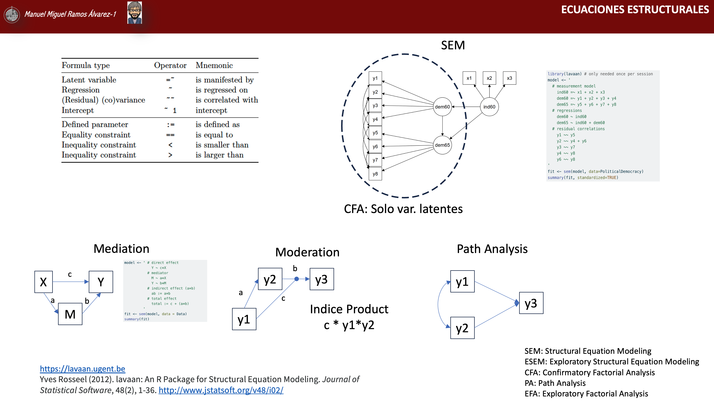
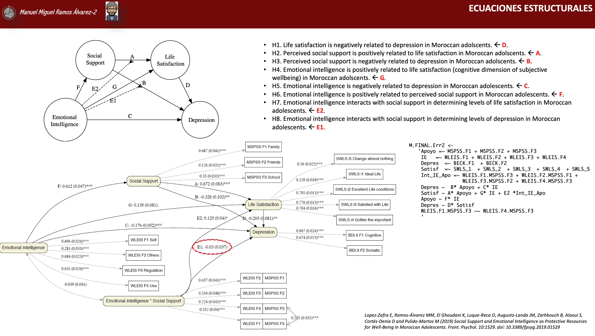

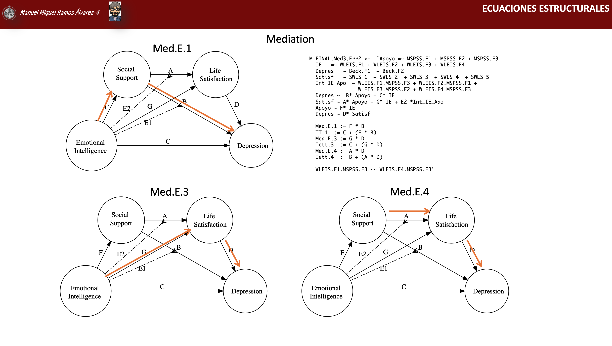
Code
# 0) Cargar Librerías y Datos
library(data.table)
library(lavaan)
library(semTools)
library(lavaanPlot)
library(psych)
library(psychometric)
library(stargazer)
library(nortest)
source(gzcon(url("https://github.com/ManuMi68/StatMmRa/raw/main/FuncADMmRaIII.R")))
PathDesign="/Volumes/RMmRa21/Cursos/Doctorado 24/" # Sustituir el trayecto por el suyo propio
# NmFich="DatosMarruecos2_Curso.csv"
# O bien desde un acceso a internet:
Datos <- read.csv2(
"https://drive.google.com/uc?export=download&id=1Hgh62fkk2NNod7Vfnm6IC8Rx5M4WgXKv",
header=TRUE)
DT<-data.table(Datos)
PathData<-"/Volumes/RMmRa21/Cursos/Doctorado 24/Data/"
# NmFich="DatosMarruecos3_Curso.csv"
# NmFich<-paste0(PathData,NmFich);
# Datos2 <- read.csv2(NmFich, header=TRUE)
# O bien desde un acceso a internet:
Datos2 <- read.csv2(
"https://drive.google.com/uc?export=download&id=1QoTYuMvfZ2mpigsxTXP4BBcranYyVwKI",
header=TRUE)
ResDT <- data.table(Datos2)
# 1) Explorar previamente las correlaciones entre las variables
# que intervienen en el modelo estructural
require(corrplot)
grep("MSPSS.",names(ResDT),value = T,fixed = T)
require(xtable)
co <- cor(ResDT[,2:14],use='pairwise.complete.obs')
co[upper.tri(co, diag=TRUE)] <- as.numeric("")
stargazer(co,
summary = FALSE,
type = 'text',
initial.zero = FALSE,
digits=2)
cor2<-corstars2(ResDT[,2:14], result="none")
stargazer(cor2,
summary = FALSE,
type = 'text',
initial.zero = FALSE,
digits=2)
#----------------------------
# 2) Definir los Modelos SEM
#-----------------------------
#++++++++++++++++++ Measurement MODELS ++++++++++++++++++
# MSPSS-3-Factor Model
M.Apoyo <-'Apoyo =~ MSPSS.F1 + MSPSS.F2 + MSPSS.F3
MSPSS.F1 =~ MSPSS_1 + MSPSS_2 + MSPSS_5 + MSPSS_10
MSPSS.F2 =~ MSPSS_6 + MSPSS_9
MSPSS.F3 =~ MSPSS_3 + MSPSS_4 + MSPSS_8 + MSPSS_11'
# WLEIS-4-Factor Model
M.IE <- 'IE =~ WLEIS.F1 + WLEIS.F2 + WLEIS.F3 + WLEIS.F4
WLEIS.F1 =~ WLEIS_1 + WLEIS_5 + WLEIS_9
WLEIS.F2 =~ WLEIS_2 + WLEIS_6 + WLEIS_10 + WLEIS_14
WLEIS.F3 =~ WLEIS_3 + WLEIS_7 + WLEIS_11 + WLEIS_15
WLEIS.F4 =~ WLEIS_4 + WLEIS_8 + WLEIS_12 + WLEIS_16'
# SWLS-Unidimensional
M.Satisf <-' Satisf =~ SWLS_1 + SWLS_2 + SWLS_3 + SWLS_4 + SWLS_5'
# BDI-II-2-Factor Model
M.Depres <- '
Beck.F1 =~ Beck_1 + Beck_2 + Beck_3 + Beck_4 + Beck_5 + Beck_6 + Beck_7 + Beck_8 + Beck_9 + Beck_10 + Beck_11 + Beck_12 + Beck_13 + Beck_14 + Beck_17
Beck.F2 =~ Beck_15 + Beck_16 + Beck_18 + Beck_19 + Beck_20'
# General Model
M.MEDD <- 'Apoyo =~ MSPSS.F1 + MSPSS.F2 + MSPSS.F3
IE =~ WLEIS.F1 + WLEIS.F2 + WLEIS.F3 + WLEIS.F4
Depres =~ Beck.F1 + Beck.F2
Satisf =~ SWLS_1 + SWLS_2 + SWLS_3 + SWLS_4 + SWLS_5'
#++++++++++++++++++ Measurement MODELS ++++++++++++++++++
#++++++++++++++++++ Structural MODELS ++++++++++++++++++
# Starting Model
M.INTERAC.Err2 <- 'Apoyo =~ MSPSS.F1 + MSPSS.F2 + MSPSS.F3
IE =~ WLEIS.F1 + WLEIS.F2 + WLEIS.F3 + WLEIS.F4
Depres =~ Beck.F1 + Beck.F2
Satisf =~ SWLS_1 + SWLS_2 + SWLS_3 + SWLS_4 + SWLS_5
Int_IE_Apo =~ WLEIS.F1.MSPSS.F3 + WLEIS.F2.MSPSS.F1 + WLEIS.F3.MSPSS.F2 + WLEIS.F4.MSPSS.F3
Depres ~ B* Apoyo + C* IE + E1 *Int_IE_Apo
Satisf ~ A* Apoyo + G* IE + E2 *Int_IE_Apo
Apoyo ~ F* IE
Depres ~ D* Satisf
WLEIS.F1.MSPSS.F3 ~~ WLEIS.F4.MSPSS.F3'
# Final Model
# Como modelo inicial pero carece de E1
M.FINAL.Err2 <- 'Apoyo =~ MSPSS.F1 + MSPSS.F2 + MSPSS.F3
IE =~ WLEIS.F1 + WLEIS.F2 + WLEIS.F3 + WLEIS.F4
Depres =~ Beck.F1 + Beck.F2
Satisf =~ SWLS_1 + SWLS_2 + SWLS_3 + SWLS_4 + SWLS_5
Int_IE_Apo =~ WLEIS.F1.MSPSS.F3 + WLEIS.F2.MSPSS.F1 + WLEIS.F3.MSPSS.F2 + WLEIS.F4.MSPSS.F3
Depres ~ B* Apoyo + C* IE
Satisf ~ A* Apoyo + G* IE + E2 *Int_IE_Apo
Apoyo ~ F* IE
Depres ~ D* Satisf
WLEIS.F1.MSPSS.F3 ~~ WLEIS.F4.MSPSS.F3'
# Modelo Mediacional
M.FINAL.Med3.Err2 <- 'Apoyo =~ MSPSS.F1 + MSPSS.F2 + MSPSS.F3
IE =~ WLEIS.F1 + WLEIS.F2 + WLEIS.F3 + WLEIS.F4
Depres =~ Beck.F1 + Beck.F2
Satisf =~ SWLS_1 + SWLS_2 + SWLS_3 + SWLS_4 + SWLS_5
Int_IE_Apo =~ WLEIS.F1.MSPSS.F3 + WLEIS.F2.MSPSS.F1 + WLEIS.F3.MSPSS.F2 + WLEIS.F4.MSPSS.F3
Depres ~ B* Apoyo + C* IE
Satisf ~ A* Apoyo + G* IE + E2 *Int_IE_Apo
Apoyo ~ F* IE
Depres ~ D* Satisf
Med.E.1 := F * B
TT.1 := C + (F * B)
Med.E.3 := G * D
Iett.3 := C + (G * D)
Med.E.4 := A * D
Iett.4 := B + (A * D)
WLEIS.F1.MSPSS.F3 ~~ WLEIS.F4.MSPSS.F3'
#++++++++++++++++++ Structural MODELS ++++++++++++++++++
#------------------------------------------------------
# 3) Análisis de la bondad de ajuste de los Modelos SEM
#------------------------------------------------------
# 3.1. Reescala las variables y obtiene las variables Indicadoras para la interacción en ResDtSc.2
ResDTFunde<-data.table(DT,ResDT[,-1])
ResDTFunde<-na.omit(ResDTFunde)
ResDtSc<-data.table(scale(ResDTFunde[,19:ncol(ResDTFunde)], scale = FALSE))
ResDT2<-as.data.frame(ResDTFunde[,list(WLEIS.F1, WLEIS.F2 , WLEIS.F3 , WLEIS.F4,MSPSS.F1,MSPSS.F2,MSPSS.F3)])
Int_IE_ApoIC<-indProd(ResDT2,var1 = 1:4,var2=5:7,match = FALSE,
meanC = FALSE, residualC = TRUE, doubleMC = FALSE)
# Simplificaremos las variables Indicadoras, en función de análisis previos,
# Reduciéndola desde 12 a 4 niveles que combinan todos los niveles de sendas variables.
ResDtSc.2<-data.table(ResDtSc,Int_IE_ApoIC[8:19])
# 3.2. Calidad de CFA measurement
# Lo ilustramos con WLEIS y tendríamos que hacerlo con el resto:
# nmSel<-grep("MSPSS_",names(ResDtSc.2))
# nmSel<-grep("SWLS_",names(ResDtSc.2))
# nmSel<-grep("Beck_",names(ResDtSc.2))
nmSel<-grep("WLEIS_",names(ResDtSc.2))
LosDatos<-ResDtSc.2[,..nmSel]
fit.IE <- cfa(M.IE, data=LosDatos,auto.var=TRUE, auto.fix.first=TRUE, auto.cov.lv.x=TRUE, auto.cov.y = TRUE, estimator="MLF",missing="ml")
fitlavPar19.2(fit.IE)$Inter
fit.Mdd <- lavaan(M.MEDD, data=ResDtSc.2,auto.var=TRUE, auto.fix.first=TRUE, auto.cov.lv.x=TRUE, estimator="MLF",missing="ml")
fitlavPar19.2(fit.Mdd)$Inter
# 3.3. Calidad de los modelos estrcuturales
fit.In.Err2 <- lavaan(M.INTERAC.Err2, data=ResDtSc.2,auto.var=TRUE, auto.fix.first=TRUE, auto.cov.lv.x=TRUE, estimator="MLF",missing="ml")
fitlavPar19.2(fit.In.Err2)$Inter
fit.Fin.Err2 <- lavaan(M.FINAL.Err2, data=ResDtSc.2,auto.var=TRUE, auto.fix.first=TRUE, auto.cov.lv.x=TRUE, estimator="MLF",missing="ml")
fitlavPar19.2(fit.Fin.Err2)$Inter
# 3.4. Path Diagram
labelsP<-list(Apoyo="Support",IE="Emotional Intelligence", Depres="Depression", Satisf="Satisfaction", Int_IE_Apo="Emotional Intelligence * Support",BECKF1="BDI II F1 Cognitive",BECKF2="BDI II F2 Somatic",WLEISF1="WLEIS F1 Self",WLEISF2="WLEIS F2 Others",WLEISF3="WLEIS F3 Regulation",WLEISF4="WLEIS F4 Use",MSPSSF1="MSPSS F1 Family",MSPSSF2="MSPSS F2 Friends", MSPSSF3="MSPSS F3 School",SWLS_1="SWLS i1 Ideal Life", SWLS_2= "SWLS i2 Excellent Life conditions",
SWLS_3= " SWLS i3 Satisfied with Life",
SWLS_4= "SWLS i4 Gotten the important",
SWLS_5= "SWLS i5 Change almost nothing")
aagrh<-lavaanPlot(name = "Pruebas",model = fit.In.Err2,labels = labelsP,node_options = list(shape = "box", fontname = "Helvetica"), edge_options = list(color = "Black"), coefs = TRUE, covs = TRUE,stand = T,stars = c("regress", "latent", "covs"), sig = 1)
aagrh
# 3.5. Análisis Mediaciones
fit.Media.2.Err2 <- lavaan(M.FINAL.Med3.Err2, data=ResDtSc.2,auto.var=TRUE, auto.fix.first=TRUE, auto.cov.lv.x=TRUE, missing="ml",se = "bootstrap")
summary(fit.Media.2.Err2,standardized=TRUE,fit.measures=TRUE)
Allpar<-standardizedSolution(fit.Media.2.Err2)
Allpar[c(74,76,78),]
Allpar2<-parameterEstimates(fit.Media.2.Err2)
Allpar2[c(74,76,78),]
# 3.6. Análisis detallado de Modelos
fitActI <- fit.In.Err2
fitActF <- fit.Fin.Err2
# Modelo Interacción
Allpar<-standardizedSolution(fitActI)
Allpar2<-parameterEstimates(fitActI)
Funde<-data.table(Allpar2[1:6],Allpar[4:9])
parameterEstimates(fitActI)
pars.factors <- standardizedSolution(fitActI)[ standardizedSolution(fitActI)[,'op']=='=~', c(1:5)]
pars.regressions <- standardizedSolution(fitActI)[ standardizedSolution(fitActI)[,'op']=='~', c(1,3,4,5,7)]
stargazer(pars.factors, summary=FALSE, type='text', rownames=FALSE, initial.zero=FALSE, digits=3, title='Factor loadings',out="ResCargas1.txt")
stargazer(pars.regressions, summary=FALSE, type='text', rownames=FALSE, initial.zero=FALSE, digits=3, title='Regressions',out="ResCargas2.txt")
stargazer(Funde, summary=FALSE, type='text', rownames=FALSE, initial.zero=FALSE, digits=3, title='All Parameters',out="ResCargas3.txt")
# Modelo Final
Allpar<-standardizedSolution(fitActF)
Allpar2<-parameterEstimates(fitActF)
Funde<-data.table(Allpar2[1:6],Allpar[4:9])
parameterEstimates(fitActF)
pars.factors <- standardizedSolution(fitActF)[ standardizedSolution(fitActF)[,'op']=='=~', c(1:5)]
pars.regressions <- standardizedSolution(fitActF)[ standardizedSolution(fitActF)[,'op']=='~', c(1,3,4,5,7)]
stargazer(pars.factors, summary=FALSE, type='text', rownames=FALSE, initial.zero=FALSE, digits=3, title='Factor loadings',out="ResCargas1_MFinal.txt")
stargazer(pars.regressions, summary=FALSE, type='text', rownames=FALSE, initial.zero=FALSE, digits=3, title='Regressions',out="ResCargas2_MFinal.txt")
stargazer(Funde, summary=FALSE, type='text', rownames=FALSE, initial.zero=FALSE, digits=3, title='All Parameters',out="ResCargas3_MFinal.txt")
# Para Ampliar: Análisis detallado de la Interacción/Moderación
M.INTERAC.2dd.Err2 <- 'Apoyo =~ MSPSS.F1 + MSPSS.F2 + MSPSS.F3
IE =~ WLEIS.F1 + WLEIS.F2 + WLEIS.F3 + WLEIS.F4
Depres =~ Beck.F1 + Beck.F2
Satisf =~ SWLS_1 + SWLS_2 + SWLS_3 + SWLS_4 + SWLS_5
Int_IE_Apo =~ WLEIS.F1.MSPSS.F3 + WLEIS.F2.MSPSS.F1 + WLEIS.F3.MSPSS.F2 + WLEIS.F4.MSPSS.F3
Depres ~ Apoyo + IE + Int_IE_Apo
Satisf ~ Apoyo + IE + Int_IE_Apo
Apoyo ~ IE
Depres ~ Satisf
WLEIS.F1.MSPSS.F3 ~~ WLEIS.F4.MSPSS.F3
Int_IE_Apo ~~ 0*IE
Int_IE_Apo ~~ 0*Apoyo
MSPSS.F1 ~ 0*1
WLEIS.F1 ~ 0*1
Beck.F1 ~ 0*1
SWLS_1 ~ 0*1
WLEIS.F1.MSPSS.F1 ~ 0*1
Apoyo ~ NA*1
IE ~ NA*1
Depres ~ NA*1
Satisf ~ NA*1
Int_IE_Apo ~ NA*1'
fit.GrpIn.Err2 <- lavaan(M.INTERAC.2dd.Err2, data=ResDtSc.2,auto.var=TRUE,
auto.fix.first=TRUE, auto.cov.lv.x=TRUE, estimator="MLF",missing="ml")
result2wayMC <- probe2WayRC(fit.GrpIn.Err2, c("IE","Apoyo","Int_IE_Apo"),
"Satisf", "IE",c(-5,0,5))
plotProbe(result2wayMC, xlim = c(0, 3),xlab="Social Support",
ylab="Life Satisfaction",main="A) Effect of latent interaction on Life Satisfaction",
legendArgs = list(legend=c("Mínimum", "Medium","Maximum"),title = "Emotional Intelligence"))
round(result2wayMC$SimpleSlope,3)
result2wayMC <- probe2WayRC(fit.GrpIn.Err2, c("IE","Apoyo","Int_IE_Apo"),
"Depres", "IE",c(-5,0,5))
plotProbe(result2wayMC, xlim = c(0, 3),xlab="Social Support",
ylab="Depression",main="B) Effect of latent interaction on Depression",
legendArgs = list(legend=c("Mínimum", "Medium","Maximum"),title = "Emotional Intelligence"))
# Análisis Modification indices Modelo Final
mpwer<-miPowerFit(fit.Fin.Err2)
mpwerS<-mpwer[c(1:3,10:12,18)]
pwMM<-data.table(mpwerS)
subset(pwMM , decision.pow=="M" | decision.pow=="EPC:M")
subset(pwMM , decision.ci=="M" | decision.ci=="EPC:M")
subset(pwMM , decision.pow=="I" & decision.ci=="I")
# Para Ampliar: Análisis de la Interacción/Moderación
[1] "MSPSS.F1" "MSPSS.F2" "MSPSS.F3" "MSPSS.TT"
=========================================================================================================================
MSPSS.F1 MSPSS.F2 MSPSS.F3 MSPSS.TT WLEIS.F1 WLEIS.F2 WLEIS.F3 WLEIS.F4 WLEIS.TT SWLS.TT Beck.F1 Beck.F2 Beck.TT
-------------------------------------------------------------------------------------------------------------------------
MSPSS.F1
MSPSS.F2 .09
MSPSS.F3 .22 .06
MSPSS.TT .70 .42 .77
WLEIS.F1 .25 .09 .17 .27
WLEIS.F2 -.001 .13 .08 .09 .26
WLEIS.F3 .31 .06 .17 .29 .46 .26
WLEIS.F4 .28 .02 .16 .25 .46 .12 .41
WLEIS.TT .30 .11 .20 .32 .73 .58 .74 .76
SWLS.TT .45 .05 .26 .42 .33 .06 .33 .32 .36
Beck.F1 -.41 -.08 -.17 -.34 -.31 -.02 -.33 -.31 -.35 -.47
Beck.F2 -.26 -.05 -.17 -.26 -.24 .01 -.25 -.22 -.25 -.32 .64
Beck.TT -.40 -.07 -.19 -.35 -.30 -.01 -.32 -.30 -.34 -.45 .98 .79
-------------------------------------------------------------------------------------------------------------------------
==================================================================================================================
MSPSS.F1 MSPSS.F2 MSPSS.F3 MSPSS.TT WLEIS.F1 WLEIS.F2 WLEIS.F3 WLEIS.F4 WLEIS.TT SWLS.TT Beck.F1 Beck.F2
------------------------------------------------------------------------------------------------------------------
MSPSS.F1
MSPSS.F2 0.09* *
MSPSS.F3 0.22* * 0.06*
MSPSS.TT 0.70* * 0.42* * 0.77* *
WLEIS.F1 0.25* * 0.09* * 0.17* * 0.27* *
WLEIS.F2 0.00 0.13* * 0.08* * 0.09* * 0.26* *
WLEIS.F3 0.31* * 0.06 0.17* * 0.29* * 0.46* * 0.26* *
WLEIS.F4 0.28* * 0.02 0.16* * 0.25* * 0.46* * 0.12* * 0.41* *
WLEIS.TT 0.30* * 0.11* * 0.20* * 0.32* * 0.73* * 0.58* * 0.74* * 0.76* *
SWLS.TT 0.45* * 0.05 0.26* * 0.42* * 0.33* * 0.06* 0.33* * 0.32* * 0.36* *
Beck.F1 -0.41* * -0.08* * -0.17* * -0.34* * -0.31* * -0.02 -0.33* * -0.31* * -0.35* * -0.47* *
Beck.F2 -0.26* * -0.05 -0.17* * -0.26* * -0.24* * 0.01 -0.25* * -0.22* * -0.25* * -0.32* * 0.64* *
Beck.TT -0.40* * -0.07* -0.19* * -0.35* * -0.30* * -0.01 -0.32* * -0.30* * -0.34* * -0.45* * 0.98* * 0.79* *
------------------------------------------------------------------------------------------------------------------
[1] "X2(86) = 196.63, p < 0, Ratio {<2} = 2.29, Hoelter CN {>200} = 334❖, CFI {>=0.95} = 0.94, IFI {>=0.95} = 0.95, TLI {>=0.95} = 0.93, NNFI {>=0.95} = 0.93, SRMR {<=.08} = 0.04❖, RMSEA {<=.06} = 0.05* (95% CI 0.04-0.05), baseline RMSEA {>0.158} = 0.1783❖, AIC = 20732, Adj BIC = 20792, gammaHat {>=0.95} = 0.98❖, adjGammaHat {>=0.95} = 0.97❖"
[1] "X2(85) = 186.35, p < 0, Ratio {<2} = 2.19, Hoelter CN {>200} = 348❖, CFI {>=0.95} = 0.96❖, IFI {>=0.95} = 0.96❖, TLI {>=0.95} = 0.96❖, NNFI {>=0.95} = 0.96❖, SRMR {<=.08} = 0.04❖, RMSEA {<=.06} = 0.04* (95% CI 0.04-0.05), baseline RMSEA {>0.158} = 0.2119❖, AIC = 31329, Adj BIC = 31370, gammaHat {>=0.95} = 0.98❖, adjGammaHat {>=0.95} = 0.97❖"
[1] "X2(143) = 217.15, p < 0, Ratio {<2} = 1.52❖, Hoelter CN {>200} = 478❖, CFI {>=0.95} = 0.97❖, IFI {>=0.95} = 0.97❖, TLI {>=0.95} = 0.97❖, NNFI {>=0.95} = 0.97❖, SRMR {<=.08} = 0.03❖, RMSEA {<=.06} = 0.03* (95% CI 0.02-0.04), baseline RMSEA {>0.158} = 0.1699❖, AIC = 42377, Adj BIC = 42434, gammaHat {>=0.95} = 0.99❖, adjGammaHat {>=0.95} = 0.98❖"
[1] "X2(144) = 217.55, p < 0, Ratio {<2} = 1.51❖, Hoelter CN {>200} = 480❖, CFI {>=0.95} = 0.97❖, IFI {>=0.95} = 0.97❖, TLI {>=0.95} = 0.97❖, NNFI {>=0.95} = 0.97❖, SRMR {<=.08} = 0.03❖, RMSEA {<=.06} = 0.03* (95% CI 0.02-0.04), baseline RMSEA {>0.158} = 0.1699❖, AIC = 42376, Adj BIC = 42431, gammaHat {>=0.95} = 0.99❖, adjGammaHat {>=0.95} = 0.98❖"lavaan 0.6.17 ended normally after 194 iterations
Estimator ML
Optimization method NLMINB
Number of model parameters 45
Number of observations 602
Number of missing patterns 1
Model Test User Model:
Test statistic 217.547
Degrees of freedom 144
P-value (Chi-square) 0.000
Model Test Baseline Model:
Test statistic 2810.668
Degrees of freedom 153
P-value 0.000
User Model versus Baseline Model:
Comparative Fit Index (CFI) 0.972
Tucker-Lewis Index (TLI) 0.971
Robust Comparative Fit Index (CFI) 0.972
Robust Tucker-Lewis Index (TLI) 0.971
Loglikelihood and Information Criteria:
Loglikelihood user model (H0) -21142.930
Loglikelihood unrestricted model (H1) -21034.157
Akaike (AIC) 42375.860
Bayesian (BIC) 42573.871
Sample-size adjusted Bayesian (SABIC) 42431.008
Root Mean Square Error of Approximation:
RMSEA 0.029
90 Percent confidence interval - lower 0.021
90 Percent confidence interval - upper 0.037
P-value H_0: RMSEA <= 0.050 1.000
P-value H_0: RMSEA >= 0.080 0.000
Robust RMSEA 0.029
90 Percent confidence interval - lower 0.021
90 Percent confidence interval - upper 0.037
P-value H_0: Robust RMSEA <= 0.050 1.000
P-value H_0: Robust RMSEA >= 0.080 0.000
Standardized Root Mean Square Residual:
SRMR 0.034
Parameter Estimates:
Standard errors Bootstrap
Number of requested bootstrap draws 1000
Number of successful bootstrap draws 937
Latent Variables:
Estimate Std.Err z-value P(>|z|) Std.lv Std.all
Apoyo =~
MSPSS.F1 1.000 0.747 0.685
MSPSS.F2 0.128 0.049 2.639 0.008 0.096 0.143
MSPSS.F3 0.639 0.096 6.665 0.000 0.478 0.370
IE =~
WLEIS.F1 1.000 1.259 0.694
WLEIS.F2 0.577 0.112 5.162 0.000 0.727 0.304
WLEIS.F3 1.197 0.128 9.353 0.000 1.507 0.686
WLEIS.F4 1.452 0.110 13.180 0.000 1.828 0.631
Depres =~
Beck.F1 1.000 7.534 1.002
Beck.F2 0.231 0.022 10.251 0.000 1.737 0.637
Satisf =~
SWLS_1 1.000 0.642 0.512
SWLS_2 1.719 0.172 10.023 0.000 1.103 0.810
SWLS_3 1.584 0.161 9.842 0.000 1.016 0.789
SWLS_4 1.771 0.197 8.990 0.000 1.136 0.754
SWLS_5 1.692 0.208 8.152 0.000 1.086 0.606
Int_IE_Apo =~
WLEIS.F1.MSPSS 1.000 0.756 0.340
WLEIS.F2.MSPSS 1.562 2.376 0.657 0.511 1.182 0.426
WLEIS.F3.MSPSS 1.265 2.441 0.518 0.604 0.957 0.560
WLEIS.F4.MSPSS 1.266 0.492 2.573 0.010 0.957 0.257
Regressions:
Estimate Std.Err z-value P(>|z|) Std.lv Std.all
Depres ~
Apoyo (B) -4.114 7.512 -0.548 0.584 -0.408 -0.408
IE (C) -0.862 1.138 -0.757 0.449 -0.144 -0.144
Satisf ~
Apoyo (A) 0.708 0.222 3.183 0.001 0.825 0.825
IE (G) 0.007 0.090 0.081 0.936 0.014 0.014
Int_IE_Ap (E2) 0.095 0.267 0.355 0.722 0.112 0.112
Apoyo ~
IE (F) 0.368 0.050 7.417 0.000 0.620 0.620
Depres ~
Satisf (D) -1.549 6.364 -0.243 0.808 -0.132 -0.132
Covariances:
Estimate Std.Err z-value P(>|z|) Std.lv Std.all
.WLEIS.F1.MSPSS.F3 ~~
.WLEIS.F4.MSPSS 3.240 0.622 5.212 0.000 3.240 0.430
IE ~~
Int_IE_Apo 0.004 0.157 0.027 0.979 0.004 0.004
Variances:
Estimate Std.Err z-value P(>|z|) Std.lv Std.all
.MSPSS.F1 0.630 0.091 6.909 0.000 0.630 0.530
.MSPSS.F2 0.439 0.028 15.925 0.000 0.439 0.980
.MSPSS.F3 1.436 0.075 19.194 0.000 1.436 0.863
.WLEIS.F1 1.702 0.182 9.333 0.000 1.702 0.518
.WLEIS.F2 5.207 0.332 15.697 0.000 5.207 0.908
.WLEIS.F3 2.556 0.257 9.963 0.000 2.556 0.529
.WLEIS.F4 5.041 0.419 12.027 0.000 5.041 0.601
.Beck.F1 -0.193 4.244 -0.045 0.964 -0.193 -0.003
.Beck.F2 4.426 0.392 11.294 0.000 4.426 0.595
.SWLS_1 1.160 0.099 11.662 0.000 1.160 0.738
.SWLS_2 0.640 0.073 8.808 0.000 0.640 0.344
.SWLS_3 0.625 0.074 8.485 0.000 0.625 0.377
.SWLS_4 0.979 0.098 9.985 0.000 0.979 0.431
.SWLS_5 2.033 0.137 14.894 0.000 2.033 0.633
.WLEIS.F1.MSPSS 4.373 0.499 8.762 0.000 4.373 0.884
.WLEIS.F2.MSPSS 6.313 1.115 5.662 0.000 6.313 0.819
.WLEIS.F3.MSPSS 2.003 1.102 1.817 0.069 2.003 0.686
.WLEIS.F4.MSPSS 12.954 1.294 10.008 0.000 12.954 0.934
.Apoyo 0.344 0.098 3.514 0.000 0.616 0.616
IE 1.585 0.226 7.013 0.000 1.000 1.000
.Depres 34.778 7.452 4.667 0.000 0.613 0.613
.Satisf 0.120 0.056 2.152 0.031 0.292 0.292
Int_IE_Apo 0.572 0.350 1.635 0.102 1.000 1.000
Defined Parameters:
Estimate Std.Err z-value P(>|z|) Std.lv Std.all
Med.E.1 -1.514 2.821 -0.537 0.591 -0.253 -0.253
TT.1 -2.376 1.871 -1.270 0.204 -0.397 -0.397
Med.E.3 -0.011 1.010 -0.011 0.991 -0.002 -0.002
Iett.3 -0.873 0.616 -1.418 0.156 -0.146 -0.146
Med.E.4 -1.096 6.929 -0.158 0.874 -0.109 -0.109
Iett.4 -5.210 1.445 -3.607 0.000 -0.517 -0.517
lhs op rhs label est.std se z pvalue ci.lower ci.upper
74 Med.E.1 := F*B Med.E.1 -0.253 0.451 -0.561 0.575 -1.138 0.631
76 Med.E.3 := G*D Med.E.3 -0.002 0.027 -0.071 0.944 -0.054 0.050
78 Med.E.4 := A*D Med.E.4 -0.109 0.444 -0.245 0.807 -0.980 0.762
lhs op rhs label est se z pvalue ci.lower ci.upper
74 Med.E.1 := F*B Med.E.1 -1.514 2.821 -0.537 0.591 -9.199 1.433
76 Med.E.3 := G*D Med.E.3 -0.011 1.010 -0.011 0.991 -2.295 1.451
78 Med.E.4 := A*D Med.E.4 -1.096 6.929 -0.158 0.874 -10.302 16.545
lhs op rhs label est se z pvalue
1 Apoyo =~ MSPSS.F1 1.000 0.000 NA NA
2 Apoyo =~ MSPSS.F2 0.128 0.047 2.718 0.007
3 Apoyo =~ MSPSS.F3 0.642 0.098 6.565 0.000
4 IE =~ WLEIS.F1 1.000 0.000 NA NA
5 IE =~ WLEIS.F2 0.577 0.111 5.188 0.000
6 IE =~ WLEIS.F3 1.197 0.118 10.131 0.000
7 IE =~ WLEIS.F4 1.452 0.172 8.427 0.000
8 Depres =~ Beck.F1 1.000 0.000 NA NA
9 Depres =~ Beck.F2 0.230 0.023 10.181 0.000
10 Satisf =~ SWLS_1 1.000 0.000 NA NA
11 Satisf =~ SWLS_2 1.719 0.136 12.601 0.000
12 Satisf =~ SWLS_3 1.584 0.128 12.344 0.000
13 Satisf =~ SWLS_4 1.771 0.149 11.869 0.000
14 Satisf =~ SWLS_5 1.692 0.188 9.014 0.000
15 Int_IE_Apo =~ WLEIS.F1.MSPSS.F3 1.000 0.000 NA NA
16 Int_IE_Apo =~ WLEIS.F2.MSPSS.F1 1.567 0.335 4.680 0.000
17 Int_IE_Apo =~ WLEIS.F3.MSPSS.F2 1.231 0.366 3.363 0.001
18 Int_IE_Apo =~ WLEIS.F4.MSPSS.F3 1.266 0.371 3.412 0.001
19 Depres ~ Apoyo B -4.702 2.971 -1.583 0.114
20 Depres ~ IE C -0.796 0.572 -1.392 0.164
21 Depres ~ Int_IE_Apo E1 -0.359 0.547 -0.657 0.511
22 Satisf ~ Apoyo A 0.730 0.177 4.120 0.000
23 Satisf ~ IE G -0.001 0.069 -0.011 0.991
24 Satisf ~ Int_IE_Apo E2 0.098 0.050 1.976 0.048
25 Apoyo ~ IE F 0.368 0.050 7.394 0.000
26 Depres ~ Satisf D -0.986 2.450 -0.403 0.687
27 WLEIS.F1.MSPSS.F3 ~~ WLEIS.F4.MSPSS.F3 3.225 0.432 7.467 0.000
28 MSPSS.F1 ~~ MSPSS.F1 0.641 0.081 7.936 0.000
29 MSPSS.F2 ~~ MSPSS.F2 0.439 0.032 13.604 0.000
30 MSPSS.F3 ~~ MSPSS.F3 1.439 0.160 8.985 0.000
31 WLEIS.F1 ~~ WLEIS.F1 1.702 0.154 11.059 0.000
32 WLEIS.F2 ~~ WLEIS.F2 5.207 0.389 13.384 0.000
33 WLEIS.F3 ~~ WLEIS.F3 2.556 0.240 10.661 0.000
34 WLEIS.F4 ~~ WLEIS.F4 5.041 0.453 11.121 0.000
35 Beck.F1 ~~ Beck.F1 -0.265 4.539 -0.058 0.953
36 Beck.F2 ~~ Beck.F2 4.430 0.301 14.711 0.000
37 SWLS_1 ~~ SWLS_1 1.160 0.056 20.627 0.000
38 SWLS_2 ~~ SWLS_2 0.640 0.045 14.372 0.000
39 SWLS_3 ~~ SWLS_3 0.625 0.038 16.398 0.000
40 SWLS_4 ~~ SWLS_4 0.979 0.062 15.883 0.000
41 SWLS_5 ~~ SWLS_5 2.033 0.171 11.909 0.000
42 WLEIS.F1.MSPSS.F3 ~~ WLEIS.F1.MSPSS.F3 4.361 0.319 13.681 0.000
43 WLEIS.F2.MSPSS.F1 ~~ WLEIS.F2.MSPSS.F1 6.275 0.475 13.199 0.000
44 WLEIS.F3.MSPSS.F2 ~~ WLEIS.F3.MSPSS.F2 2.033 0.260 7.814 0.000
45 WLEIS.F4.MSPSS.F3 ~~ WLEIS.F4.MSPSS.F3 12.935 0.975 13.264 0.000
46 Apoyo ~~ Apoyo 0.334 0.093 3.570 0.000
47 IE ~~ IE 1.585 0.278 5.701 0.000
48 Depres ~~ Depres 34.450 5.299 6.501 0.000
49 Satisf ~~ Satisf 0.114 0.042 2.756 0.006
50 Int_IE_Apo ~~ Int_IE_Apo 0.584 0.231 2.525 0.012
51 IE ~~ Int_IE_Apo 0.000 0.065 0.000 1.000
52 MSPSS.F1 ~1 0.000 0.000 NA NA
53 MSPSS.F2 ~1 0.000 0.000 NA NA
54 MSPSS.F3 ~1 0.000 0.000 NA NA
55 WLEIS.F1 ~1 0.000 0.000 NA NA
56 WLEIS.F2 ~1 0.000 0.000 NA NA
57 WLEIS.F3 ~1 0.000 0.000 NA NA
58 WLEIS.F4 ~1 0.000 0.000 NA NA
59 Beck.F1 ~1 0.000 0.000 NA NA
60 Beck.F2 ~1 0.000 0.000 NA NA
61 SWLS_1 ~1 0.000 0.000 NA NA
62 SWLS_2 ~1 0.000 0.000 NA NA
63 SWLS_3 ~1 0.000 0.000 NA NA
64 SWLS_4 ~1 0.000 0.000 NA NA
65 SWLS_5 ~1 0.000 0.000 NA NA
66 WLEIS.F1.MSPSS.F3 ~1 0.000 0.000 NA NA
67 WLEIS.F2.MSPSS.F1 ~1 0.000 0.000 NA NA
68 WLEIS.F3.MSPSS.F2 ~1 0.000 0.000 NA NA
69 WLEIS.F4.MSPSS.F3 ~1 0.000 0.000 NA NA
70 Apoyo ~1 0.000 0.000 NA NA
71 IE ~1 0.000 0.000 NA NA
72 Depres ~1 0.000 0.000 NA NA
73 Satisf ~1 0.000 0.000 NA NA
74 Int_IE_Apo ~1 0.000 0.000 NA NA
ci.lower ci.upper
1 1.000 1.000
2 0.036 0.220
3 0.450 0.834
4 1.000 1.000
5 0.359 0.796
6 0.965 1.428
7 1.114 1.790
8 1.000 1.000
9 0.186 0.275
10 1.000 1.000
11 1.452 1.987
12 1.333 1.836
13 1.479 2.064
14 1.324 2.060
15 1.000 1.000
16 0.911 2.224
17 0.514 1.949
18 0.539 1.993
19 -10.526 1.121
20 -1.917 0.325
21 -1.431 0.712
22 0.383 1.078
23 -0.135 0.134
24 0.001 0.196
25 0.270 0.465
26 -5.788 3.816
27 2.379 4.072
28 0.483 0.799
29 0.376 0.503
30 1.125 1.752
31 1.400 2.004
32 4.444 5.969
33 2.086 3.026
34 4.152 5.929
35 -9.162 8.632
36 3.840 5.020
37 1.050 1.270
38 0.553 0.727
39 0.551 0.700
40 0.858 1.100
41 1.699 2.368
42 3.737 4.986
43 5.343 7.206
44 1.523 2.543
45 11.024 14.847
46 0.150 0.517
47 1.040 2.130
48 24.065 44.836
49 0.033 0.196
50 0.131 1.037
51 -0.127 0.127
52 0.000 0.000
53 0.000 0.000
54 0.000 0.000
55 0.000 0.000
56 0.000 0.000
57 0.000 0.000
58 0.000 0.000
59 0.000 0.000
60 0.000 0.000
61 0.000 0.000
62 0.000 0.000
63 0.000 0.000
64 0.000 0.000
65 0.000 0.000
66 0.000 0.000
67 0.000 0.000
68 0.000 0.000
69 0.000 0.000
70 0.000 0.000
71 0.000 0.000
72 0.000 0.000
73 0.000 0.000
74 0.000 0.000
Factor loadings
=============================================
lhs op rhs label est.std
---------------------------------------------
Apoyo =~ MSPSS.F1 .679
Apoyo =~ MSPSS.F2 .142
Apoyo =~ MSPSS.F3 .369
IE =~ WLEIS.F1 .694
IE =~ WLEIS.F2 .304
IE =~ WLEIS.F3 .686
IE =~ WLEIS.F4 .631
Depres =~ Beck.F1 1.002
Depres =~ Beck.F2 .636
Satisf =~ SWLS_1 .512
Satisf =~ SWLS_2 .810
Satisf =~ SWLS_3 .789
Satisf =~ SWLS_4 .754
Satisf =~ SWLS_5 .606
Int_IE_Apo =~ WLEIS.F1.MSPSS.F3 .344
Int_IE_Apo =~ WLEIS.F2.MSPSS.F1 .431
Int_IE_Apo =~ WLEIS.F3.MSPSS.F2 .551
Int_IE_Apo =~ WLEIS.F4.MSPSS.F3 .260
---------------------------------------------
Regressions
======================================
lhs rhs label est.std z
--------------------------------------
Depres Apoyo B -.462 -1.770
Depres IE C -.133 -1.378
Depres Int_IE_Apo E1 -.036 -.655
Satisf Apoyo A .843 6.369
Satisf IE G -.001 -.011
Satisf Int_IE_Apo E2 .117 2.117
Apoyo IE F .626 9.135
Depres Satisf D -.084 -.403
--------------------------------------
All Parameters
===========================================================================================================
lhs op rhs label est se label.1 est.std se.1 z pvalue ci.lower
-----------------------------------------------------------------------------------------------------------
Apoyo =~ MSPSS.F1 1 0 .679 .053 12.885 0 .576
Apoyo =~ MSPSS.F2 .128 .047 .142 .051 2.772 .006 .041
Apoyo =~ MSPSS.F3 .642 .098 .369 .047 7.863 0 .277
IE =~ WLEIS.F1 1 0 .694 .040 17.469 0 .617
IE =~ WLEIS.F2 .577 .111 .304 .053 5.780 0 .201
IE =~ WLEIS.F3 1.197 .118 .686 .037 18.738 0 .614
IE =~ WLEIS.F4 1.452 .172 .631 .041 15.437 0 .551
Depres =~ Beck.F1 1 0 1.002 .040 25.041 0 .924
Depres =~ Beck.F2 .230 .023 .636 .035 17.943 0 .567
Satisf =~ SWLS_1 1 0 .512 .029 17.410 0 .454
Satisf =~ SWLS_2 1.719 .136 .810 .018 45.184 0 .775
Satisf =~ SWLS_3 1.584 .128 .789 .018 43.713 0 .754
Satisf =~ SWLS_4 1.771 .149 .754 .023 33.396 0 .710
Satisf =~ SWLS_5 1.692 .188 .606 .035 17.486 0 .538
Int_IE_Apo =~ WLEIS.F1.MSPSS.F3 1 0 .344 .065 5.265 0.00000 .216
Int_IE_Apo =~ WLEIS.F2.MSPSS.F1 1.567 .335 .431 .059 7.258 0 .315
Int_IE_Apo =~ WLEIS.F3.MSPSS.F2 1.231 .366 .551 .076 7.268 0 .402
Int_IE_Apo =~ WLEIS.F4.MSPSS.F3 1.266 .371 .260 .071 3.649 .0003 .120
Depres ~ Apoyo B -4.702 2.971 B -.462 .261 -1.770 .077 -.973
Depres ~ IE C -.796 .572 C -.133 .096 -1.378 .168 -.322
Depres ~ Int_IE_Apo E1 -.359 .547 E1 -.036 .056 -.655 .513 -.145
Satisf ~ Apoyo A .730 .177 A .843 .132 6.369 0 .583
Satisf ~ IE G -.001 .069 G -.001 .135 -.011 .991 -.266
Satisf ~ Int_IE_Apo E2 .098 .050 E2 .117 .055 2.117 .034 .009
Apoyo ~ IE F .368 .050 F .626 .068 9.135 0 .491
Depres ~ Satisf D -.986 2.450 D -.084 .209 -.403 .687 -.493
WLEIS.F1.MSPSS.F3 ~~ WLEIS.F4.MSPSS.F3 3.225 .432 .429 .037 11.702 0 .357
MSPSS.F1 ~~ MSPSS.F1 .641 .081 .539 .072 7.531 0 .399
MSPSS.F2 ~~ MSPSS.F2 .439 .032 .980 .014 67.786 0 .952
MSPSS.F3 ~~ MSPSS.F3 1.439 .160 .864 .035 25.013 0 .796
WLEIS.F1 ~~ WLEIS.F1 1.702 .154 .518 .055 9.378 0 .410
WLEIS.F2 ~~ WLEIS.F2 5.207 .389 .908 .032 28.467 0 .845
WLEIS.F3 ~~ WLEIS.F3 2.556 .240 .530 .050 10.547 0 .431
WLEIS.F4 ~~ WLEIS.F4 5.041 .453 .601 .052 11.643 0 .500
Beck.F1 ~~ Beck.F1 -.265 4.539 -.005 .080 -.058 .953 -.162
Beck.F2 ~~ Beck.F2 4.430 .301 .595 .045 13.183 0 .507
SWLS_1 ~~ SWLS_1 1.160 .056 .738 .030 24.512 0 .679
SWLS_2 ~~ SWLS_2 .640 .045 .344 .029 11.870 0 .288
SWLS_3 ~~ SWLS_3 .625 .038 .377 .029 13.221 0 .321
SWLS_4 ~~ SWLS_4 .979 .062 .431 .034 12.650 0 .364
SWLS_5 ~~ SWLS_5 2.033 .171 .633 .042 15.070 0 .551
WLEIS.F1.MSPSS.F3 ~~ WLEIS.F1.MSPSS.F3 4.361 .319 .882 .045 19.658 0 .794
WLEIS.F2.MSPSS.F1 ~~ WLEIS.F2.MSPSS.F1 6.275 .475 .814 .051 15.869 0 .713
WLEIS.F3.MSPSS.F2 ~~ WLEIS.F3.MSPSS.F2 2.033 .260 .697 .083 8.345 0 .533
WLEIS.F4.MSPSS.F3 ~~ WLEIS.F4.MSPSS.F3 12.935 .975 .933 .037 25.226 0 .860
Apoyo ~~ Apoyo .334 .093 .609 .086 7.100 0 .441
IE ~~ IE 1.585 .278 1 0 1
Depres ~~ Depres 34.450 5.299 .606 .064 9.465 0 .481
Satisf ~~ Satisf .114 .042 .278 .095 2.911 .004 .091
Int_IE_Apo ~~ Int_IE_Apo .584 .231 1 0 1
IE ~~ Int_IE_Apo -0.00000 .065 -0.00000 .068 -0.00000 1.000 -.132
MSPSS.F1 0 0 0 0 0
MSPSS.F2 0 0 0 0 0
MSPSS.F3 0 0 0 0 0
WLEIS.F1 0 0 0 0 0
WLEIS.F2 0 0 0 0 0
WLEIS.F3 0 0 0 0 0
WLEIS.F4 0 0 0 0 0
Beck.F1 0 0 0 0 0
Beck.F2 0 0 0 0 0
SWLS_1 0 0 0 0 0
SWLS_2 0 0 0 0 0
SWLS_3 0 0 0 0 0
SWLS_4 0 0 0 0 0
SWLS_5 0 0 0 0 0
WLEIS.F1.MSPSS.F3 0 0 0 0 0
WLEIS.F2.MSPSS.F1 0 0 0 0 0
WLEIS.F3.MSPSS.F2 0 0 0 0 0
WLEIS.F4.MSPSS.F3 0 0 0 0 0
Apoyo 0 0 0 0 0
IE 0 0 0 0 0
Depres 0 0 0 0 0
Satisf 0 0 0 0 0
Int_IE_Apo 0 0 0 0 0
-----------------------------------------------------------------------------------------------------------
lhs op rhs label est se z pvalue
1 Apoyo =~ MSPSS.F1 1.000 0.000 NA NA
2 Apoyo =~ MSPSS.F2 0.128 0.047 2.745 0.006
3 Apoyo =~ MSPSS.F3 0.639 0.096 6.650 0.000
4 IE =~ WLEIS.F1 1.000 0.000 NA NA
5 IE =~ WLEIS.F2 0.577 0.111 5.224 0.000
6 IE =~ WLEIS.F3 1.197 0.118 10.143 0.000
7 IE =~ WLEIS.F4 1.452 0.172 8.432 0.000
8 Depres =~ Beck.F1 1.000 0.000 NA NA
9 Depres =~ Beck.F2 0.231 0.022 10.298 0.000
10 Satisf =~ SWLS_1 1.000 0.000 NA NA
11 Satisf =~ SWLS_2 1.719 0.136 12.618 0.000
12 Satisf =~ SWLS_3 1.584 0.128 12.345 0.000
13 Satisf =~ SWLS_4 1.771 0.149 11.854 0.000
14 Satisf =~ SWLS_5 1.692 0.187 9.054 0.000
15 Int_IE_Apo =~ WLEIS.F1.MSPSS.F3 1.000 0.000 NA NA
16 Int_IE_Apo =~ WLEIS.F2.MSPSS.F1 1.562 0.334 4.676 0.000
17 Int_IE_Apo =~ WLEIS.F3.MSPSS.F2 1.265 0.374 3.384 0.001
18 Int_IE_Apo =~ WLEIS.F4.MSPSS.F3 1.266 0.365 3.469 0.001
19 Depres ~ Apoyo B -4.114 2.168 -1.897 0.058
20 Depres ~ IE C -0.862 0.509 -1.691 0.091
21 Satisf ~ Apoyo A 0.708 0.158 4.468 0.000
22 Satisf ~ IE G 0.007 0.063 0.116 0.908
23 Satisf ~ Int_IE_Apo E2 0.095 0.048 1.969 0.049
24 Apoyo ~ IE F 0.368 0.050 7.383 0.000
25 Depres ~ Satisf D -1.549 1.763 -0.879 0.380
26 WLEIS.F1.MSPSS.F3 ~~ WLEIS.F4.MSPSS.F3 3.240 0.432 7.494 0.000
27 MSPSS.F1 ~~ MSPSS.F1 0.630 0.077 8.202 0.000
28 MSPSS.F2 ~~ MSPSS.F2 0.439 0.032 13.769 0.000
29 MSPSS.F3 ~~ MSPSS.F3 1.436 0.160 8.998 0.000
30 WLEIS.F1 ~~ WLEIS.F1 1.702 0.154 11.075 0.000
31 WLEIS.F2 ~~ WLEIS.F2 5.207 0.389 13.386 0.000
32 WLEIS.F3 ~~ WLEIS.F3 2.556 0.240 10.650 0.000
33 WLEIS.F4 ~~ WLEIS.F4 5.041 0.454 11.107 0.000
34 Beck.F1 ~~ Beck.F1 -0.193 4.526 -0.043 0.966
35 Beck.F2 ~~ Beck.F2 4.426 0.301 14.716 0.000
36 SWLS_1 ~~ SWLS_1 1.160 0.056 20.652 0.000
37 SWLS_2 ~~ SWLS_2 0.640 0.044 14.391 0.000
38 SWLS_3 ~~ SWLS_3 0.625 0.038 16.403 0.000
39 SWLS_4 ~~ SWLS_4 0.979 0.062 15.885 0.000
40 SWLS_5 ~~ SWLS_5 2.033 0.170 11.942 0.000
41 WLEIS.F1.MSPSS.F3 ~~ WLEIS.F1.MSPSS.F3 4.373 0.318 13.770 0.000
42 WLEIS.F2.MSPSS.F1 ~~ WLEIS.F2.MSPSS.F1 6.313 0.472 13.372 0.000
43 WLEIS.F3.MSPSS.F2 ~~ WLEIS.F3.MSPSS.F2 2.003 0.268 7.468 0.000
44 WLEIS.F4.MSPSS.F3 ~~ WLEIS.F4.MSPSS.F3 12.954 0.974 13.307 0.000
45 Apoyo ~~ Apoyo 0.344 0.090 3.829 0.000
46 IE ~~ IE 1.585 0.278 5.701 0.000
47 Depres ~~ Depres 34.778 5.021 6.926 0.000
48 Satisf ~~ Satisf 0.120 0.038 3.185 0.001
49 Int_IE_Apo ~~ Int_IE_Apo 0.572 0.227 2.526 0.012
50 IE ~~ Int_IE_Apo 0.004 0.064 0.065 0.948
51 MSPSS.F1 ~1 0.000 0.000 NA NA
52 MSPSS.F2 ~1 0.000 0.000 NA NA
53 MSPSS.F3 ~1 0.000 0.000 NA NA
54 WLEIS.F1 ~1 0.000 0.000 NA NA
55 WLEIS.F2 ~1 0.000 0.000 NA NA
56 WLEIS.F3 ~1 0.000 0.000 NA NA
57 WLEIS.F4 ~1 0.000 0.000 NA NA
58 Beck.F1 ~1 0.000 0.000 NA NA
59 Beck.F2 ~1 0.000 0.000 NA NA
60 SWLS_1 ~1 0.000 0.000 NA NA
61 SWLS_2 ~1 0.000 0.000 NA NA
62 SWLS_3 ~1 0.000 0.000 NA NA
63 SWLS_4 ~1 0.000 0.000 NA NA
64 SWLS_5 ~1 0.000 0.000 NA NA
65 WLEIS.F1.MSPSS.F3 ~1 0.000 0.000 NA NA
66 WLEIS.F2.MSPSS.F1 ~1 0.000 0.000 NA NA
67 WLEIS.F3.MSPSS.F2 ~1 0.000 0.000 NA NA
68 WLEIS.F4.MSPSS.F3 ~1 0.000 0.000 NA NA
69 Apoyo ~1 0.000 0.000 NA NA
70 IE ~1 0.000 0.000 NA NA
71 Depres ~1 0.000 0.000 NA NA
72 Satisf ~1 0.000 0.000 NA NA
73 Int_IE_Apo ~1 0.000 0.000 NA NA
ci.lower ci.upper
1 1.000 1.000
2 0.037 0.220
3 0.451 0.828
4 1.000 1.000
5 0.361 0.794
6 0.966 1.428
7 1.114 1.789
8 1.000 1.000
9 0.187 0.274
10 1.000 1.000
11 1.452 1.986
12 1.333 1.836
13 1.478 2.064
14 1.326 2.058
15 1.000 1.000
16 0.907 2.217
17 0.532 1.997
18 0.551 1.981
19 -8.364 0.136
20 -1.860 0.137
21 0.397 1.018
22 -0.116 0.130
23 0.000 0.189
24 0.270 0.466
25 -5.004 1.906
26 2.393 4.088
27 0.480 0.781
28 0.377 0.502
29 1.124 1.749
30 1.401 2.003
31 4.444 5.969
32 2.085 3.026
33 4.151 5.930
34 -9.063 8.678
35 3.837 5.016
36 1.050 1.270
37 0.553 0.727
38 0.551 0.700
39 0.859 1.100
40 1.700 2.367
41 3.751 4.996
42 5.388 7.239
43 1.478 2.529
44 11.046 14.862
45 0.168 0.520
46 1.040 2.130
47 24.936 44.619
48 0.046 0.194
49 0.128 1.016
50 -0.122 0.131
51 0.000 0.000
52 0.000 0.000
53 0.000 0.000
54 0.000 0.000
55 0.000 0.000
56 0.000 0.000
57 0.000 0.000
58 0.000 0.000
59 0.000 0.000
60 0.000 0.000
61 0.000 0.000
62 0.000 0.000
63 0.000 0.000
64 0.000 0.000
65 0.000 0.000
66 0.000 0.000
67 0.000 0.000
68 0.000 0.000
69 0.000 0.000
70 0.000 0.000
71 0.000 0.000
72 0.000 0.000
73 0.000 0.000
Factor loadings
=============================================
lhs op rhs label est.std
---------------------------------------------
Apoyo =~ MSPSS.F1 .685
Apoyo =~ MSPSS.F2 .143
Apoyo =~ MSPSS.F3 .370
IE =~ WLEIS.F1 .694
IE =~ WLEIS.F2 .304
IE =~ WLEIS.F3 .686
IE =~ WLEIS.F4 .631
Depres =~ Beck.F1 1.002
Depres =~ Beck.F2 .637
Satisf =~ SWLS_1 .512
Satisf =~ SWLS_2 .810
Satisf =~ SWLS_3 .789
Satisf =~ SWLS_4 .754
Satisf =~ SWLS_5 .606
Int_IE_Apo =~ WLEIS.F1.MSPSS.F3 .340
Int_IE_Apo =~ WLEIS.F2.MSPSS.F1 .426
Int_IE_Apo =~ WLEIS.F3.MSPSS.F2 .560
Int_IE_Apo =~ WLEIS.F4.MSPSS.F3 .257
---------------------------------------------
Regressions
======================================
lhs rhs label est.std z
--------------------------------------
Depres Apoyo B -.408 -2.124
Depres IE C -.144 -1.675
Satisf Apoyo A .825 6.955
Satisf IE G .014 .116
Satisf Int_IE_Apo E2 .112 2.125
Apoyo IE F .620 9.424
Depres Satisf D -.132 -.881
--------------------------------------
All Parameters
======================================================================================================
lhs op rhs label est se label.1 est.std se.1 z pvalue ci.lower
------------------------------------------------------------------------------------------------------
Apoyo =~ MSPSS.F1 1 0 .685 .050 13.753 0 .588
Apoyo =~ MSPSS.F2 .128 .047 .143 .051 2.787 .005 .042
Apoyo =~ MSPSS.F3 .639 .096 .370 .047 7.932 0 .279
IE =~ WLEIS.F1 1 0 .694 .040 17.470 0 .616
IE =~ WLEIS.F2 .577 .111 .304 .052 5.818 0 .201
IE =~ WLEIS.F3 1.197 .118 .686 .037 18.751 0 .614
IE =~ WLEIS.F4 1.452 .172 .631 .041 15.424 0 .551
Depres =~ Beck.F1 1 0 1.002 .040 25.085 0 .923
Depres =~ Beck.F2 .231 .022 .637 .035 18.389 0 .569
Satisf =~ SWLS_1 1 0 .512 .029 17.415 0 .454
Satisf =~ SWLS_2 1.719 .136 .810 .018 45.203 0 .775
Satisf =~ SWLS_3 1.584 .128 .789 .018 43.706 0 .754
Satisf =~ SWLS_4 1.771 .149 .754 .023 33.439 0 .710
Satisf =~ SWLS_5 1.692 .187 .606 .035 17.488 0 .538
Int_IE_Apo =~ WLEIS.F1.MSPSS.F3 1 0 .340 .065 5.260 0.00000 .213
Int_IE_Apo =~ WLEIS.F2.MSPSS.F1 1.562 .334 .426 .059 7.166 0 .309
Int_IE_Apo =~ WLEIS.F3.MSPSS.F2 1.265 .374 .560 .076 7.326 0 .410
Int_IE_Apo =~ WLEIS.F4.MSPSS.F3 1.266 .365 .257 .070 3.660 .0003 .119
Depres ~ Apoyo B -4.114 2.168 B -.408 .192 -2.124 .034 -.785
Depres ~ IE C -.862 .509 C -.144 .086 -1.675 .094 -.313
Satisf ~ Apoyo A .708 .158 A .825 .119 6.955 0 .592
Satisf ~ IE G .007 .063 G .014 .123 .116 .908 -.227
Satisf ~ Int_IE_Apo E2 .095 .048 E2 .112 .053 2.125 .034 .009
Apoyo ~ IE F .368 .050 F .620 .066 9.424 0 .491
Depres ~ Satisf D -1.549 1.763 D -.132 .150 -.881 .379 -.426
WLEIS.F1.MSPSS.F3 ~~ WLEIS.F4.MSPSS.F3 3.240 .432 .430 .037 11.770 0 .359
MSPSS.F1 ~~ MSPSS.F1 .630 .077 .530 .068 7.760 0 .396
MSPSS.F2 ~~ MSPSS.F2 .439 .032 .980 .015 66.718 0 .951
MSPSS.F3 ~~ MSPSS.F3 1.436 .160 .863 .035 24.958 0 .795
WLEIS.F1 ~~ WLEIS.F1 1.702 .154 .518 .055 9.381 0 .410
WLEIS.F2 ~~ WLEIS.F2 5.207 .389 .908 .032 28.666 0 .846
WLEIS.F3 ~~ WLEIS.F3 2.556 .240 .529 .050 10.551 0 .431
WLEIS.F4 ~~ WLEIS.F4 5.041 .454 .601 .052 11.634 0 .500
Beck.F1 ~~ Beck.F1 -.193 4.526 -.003 .080 -.043 .966 -.160
Beck.F2 ~~ Beck.F2 4.426 .301 .595 .044 13.482 0 .508
SWLS_1 ~~ SWLS_1 1.160 .056 .738 .030 24.531 0 .679
SWLS_2 ~~ SWLS_2 .640 .044 .344 .029 11.878 0 .288
SWLS_3 ~~ SWLS_3 .625 .038 .377 .029 13.228 0 .321
SWLS_4 ~~ SWLS_4 .979 .062 .431 .034 12.680 0 .365
SWLS_5 ~~ SWLS_5 2.033 .170 .633 .042 15.080 0 .551
WLEIS.F1.MSPSS.F3 ~~ WLEIS.F1.MSPSS.F3 4.373 .318 .884 .044 20.104 0 .798
WLEIS.F2.MSPSS.F1 ~~ WLEIS.F2.MSPSS.F1 6.313 .472 .819 .051 16.201 0 .720
WLEIS.F3.MSPSS.F2 ~~ WLEIS.F3.MSPSS.F2 2.003 .268 .686 .086 8.020 0 .519
WLEIS.F4.MSPSS.F3 ~~ WLEIS.F4.MSPSS.F3 12.954 .974 .934 .036 25.866 0 .863
Apoyo ~~ Apoyo .344 .090 .616 .082 7.548 0 .456
IE ~~ IE 1.585 .278 1 0 1
Depres ~~ Depres 34.778 5.021 .613 .052 11.673 0 .510
Satisf ~~ Satisf .120 .038 .292 .084 3.481 .0005 .128
Int_IE_Apo ~~ Int_IE_Apo .572 .227 1 0 1
IE ~~ Int_IE_Apo .004 .064 .004 .068 .065 .948 -.128
MSPSS.F1 0 0 0 0 0
MSPSS.F2 0 0 0 0 0
MSPSS.F3 0 0 0 0 0
WLEIS.F1 0 0 0 0 0
WLEIS.F2 0 0 0 0 0
WLEIS.F3 0 0 0 0 0
WLEIS.F4 0 0 0 0 0
Beck.F1 0 0 0 0 0
Beck.F2 0 0 0 0 0
SWLS_1 0 0 0 0 0
SWLS_2 0 0 0 0 0
SWLS_3 0 0 0 0 0
SWLS_4 0 0 0 0 0
SWLS_5 0 0 0 0 0
WLEIS.F1.MSPSS.F3 0 0 0 0 0
WLEIS.F2.MSPSS.F1 0 0 0 0 0
WLEIS.F3.MSPSS.F2 0 0 0 0 0
WLEIS.F4.MSPSS.F3 0 0 0 0 0
Apoyo 0 0 0 0 0
IE 0 0 0 0 0
Depres 0 0 0 0 0
Satisf 0 0 0 0 0
Int_IE_Apo 0 0 0 0 0
------------------------------------------------------------------------------------------------------
IE est se z pvalue
1 -5 0.238 0.328 0.726 0.468
2 0 0.730 0.183 3.988 0.000
3 5 1.223 0.324 3.776 0.000
lhs op rhs significant.mi high.power
<char> <char> <char> <lgcl> <lgcl>
1: MSPSS.F1 ~~ SWLS_2 TRUE TRUE
2: MSPSS.F2 ~~ WLEIS.F2 TRUE FALSE
3: MSPSS.F3 ~~ SWLS_5 TRUE TRUE
4: WLEIS.F1 ~~ WLEIS.F3 TRUE FALSE
5: WLEIS.F1 ~~ WLEIS.F4 TRUE FALSE
6: SWLS_4 ~~ SWLS_5 TRUE TRUE
7: WLEIS.F2.MSPSS.F1 ~~ WLEIS.F3.MSPSS.F2 TRUE FALSE
decision.pow decision.ci
<char> <char>
1: EPC:M I
2: M I
3: EPC:M I
4: M I
5: M I
6: EPC:M I
7: M I
Empty data.table (0 rows and 7 cols): lhs,op,rhs,significant.mi,high.power,decision.pow...
lhs op rhs significant.mi high.power
<char> <char> <char> <lgcl> <lgcl>
1: Apoyo =~ Beck.F1 FALSE FALSE
2: Apoyo =~ Beck.F2 FALSE FALSE
3: Satisf =~ MSPSS.F1 FALSE FALSE
4: Satisf =~ Beck.F1 FALSE FALSE
5: MSPSS.F1 ~~ MSPSS.F3 FALSE FALSE
6: MSPSS.F3 ~~ WLEIS.F2 FALSE FALSE
7: WLEIS.F3 ~~ WLEIS.F4 FALSE FALSE
8: WLEIS.F1.MSPSS.F3 ~~ WLEIS.F2.MSPSS.F1 FALSE FALSE
9: WLEIS.F1.MSPSS.F3 ~~ WLEIS.F3.MSPSS.F2 FALSE FALSE
10: Apoyo ~~ IE FALSE FALSE
11: Apoyo ~~ Int_IE_Apo FALSE FALSE
12: Depres ~~ Satisf FALSE FALSE
13: Depres ~~ Int_IE_Apo FALSE FALSE
14: Depres ~ Int_IE_Apo FALSE FALSE
15: Satisf ~ Depres FALSE FALSE
16: Apoyo ~ Depres FALSE FALSE
17: Apoyo ~ Satisf FALSE FALSE
18: Apoyo ~ Int_IE_Apo FALSE FALSE
19: IE ~ Depres FALSE FALSE
20: Int_IE_Apo ~ Depres FALSE FALSE
21: Int_IE_Apo ~ Satisf FALSE FALSE
22: Int_IE_Apo ~ Apoyo FALSE FALSE
lhs op rhs significant.mi high.power
decision.pow decision.ci
<char> <char>
1: I I
2: I I
3: I I
4: I I
5: I I
6: I I
7: I I
8: I I
9: I I
10: I I
11: I I
12: I I
13: I I
14: I I
15: I I
16: I I
17: I I
18: I I
19: I I
20: I I
21: I I
22: I I
decision.pow decision.ci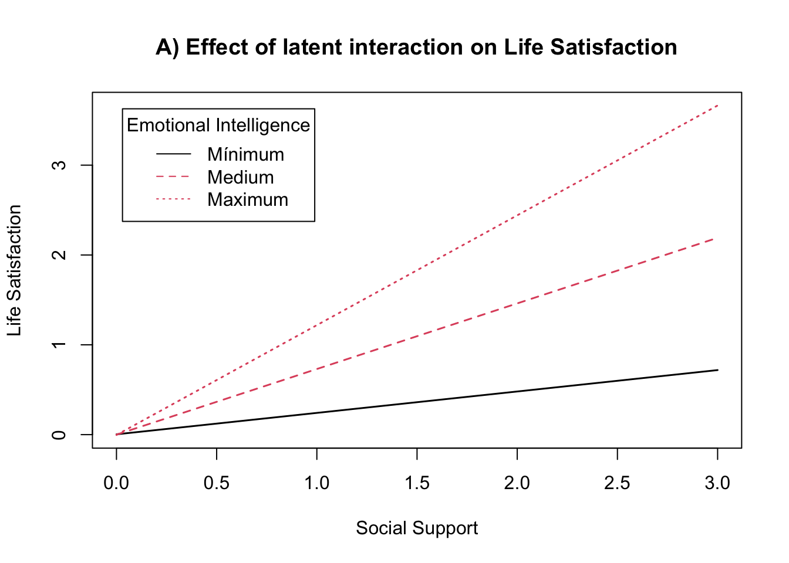
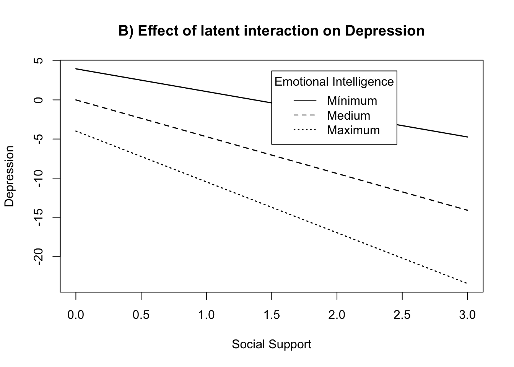
5 Itinerario ANOVA: MANOVA
Esquemas resumen de los contenidos de Análisis Multivariado de la Varianza (MANOVA):
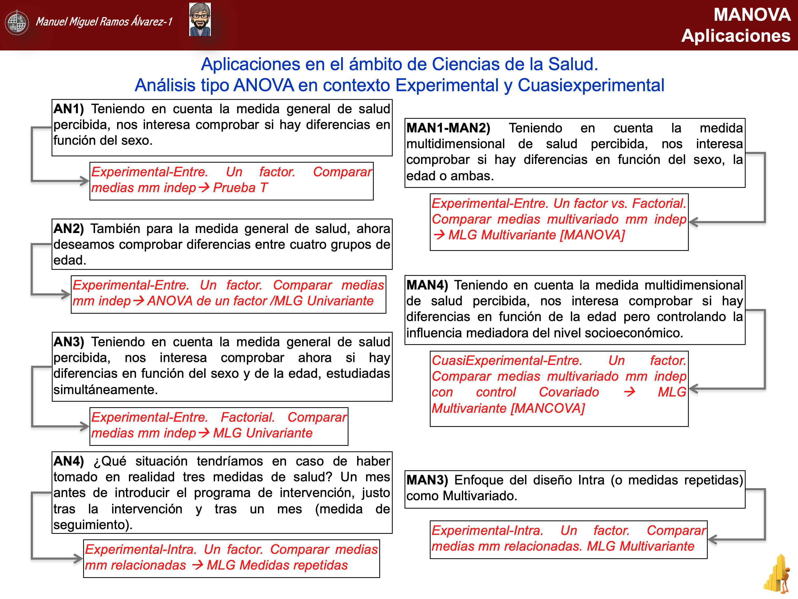
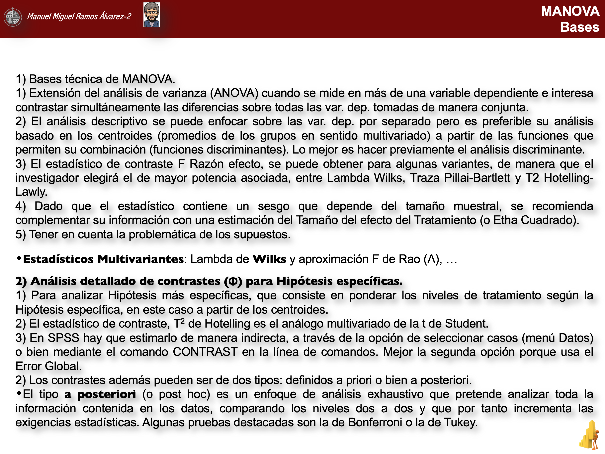
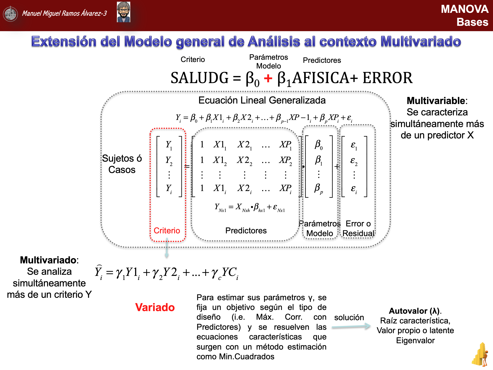
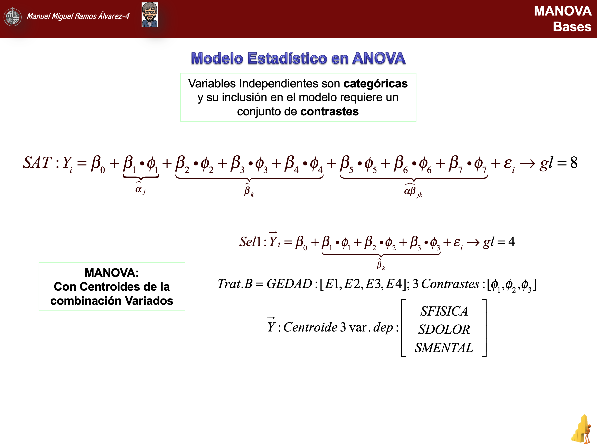
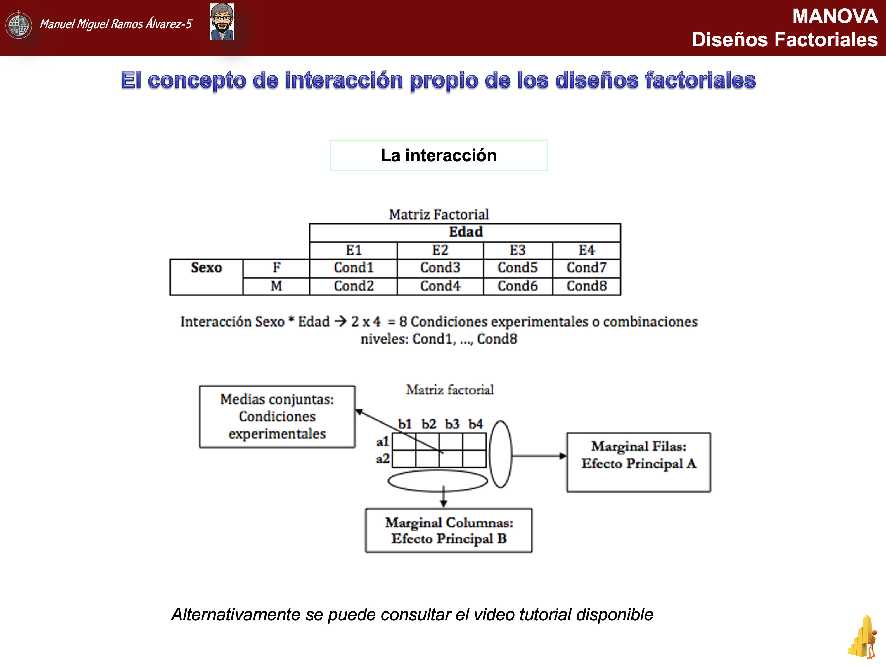
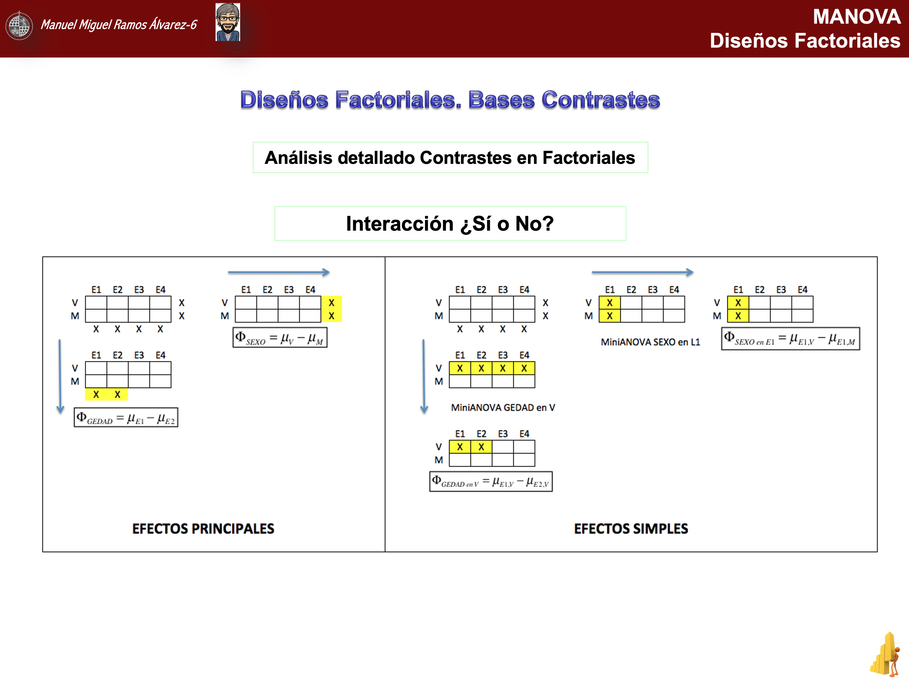
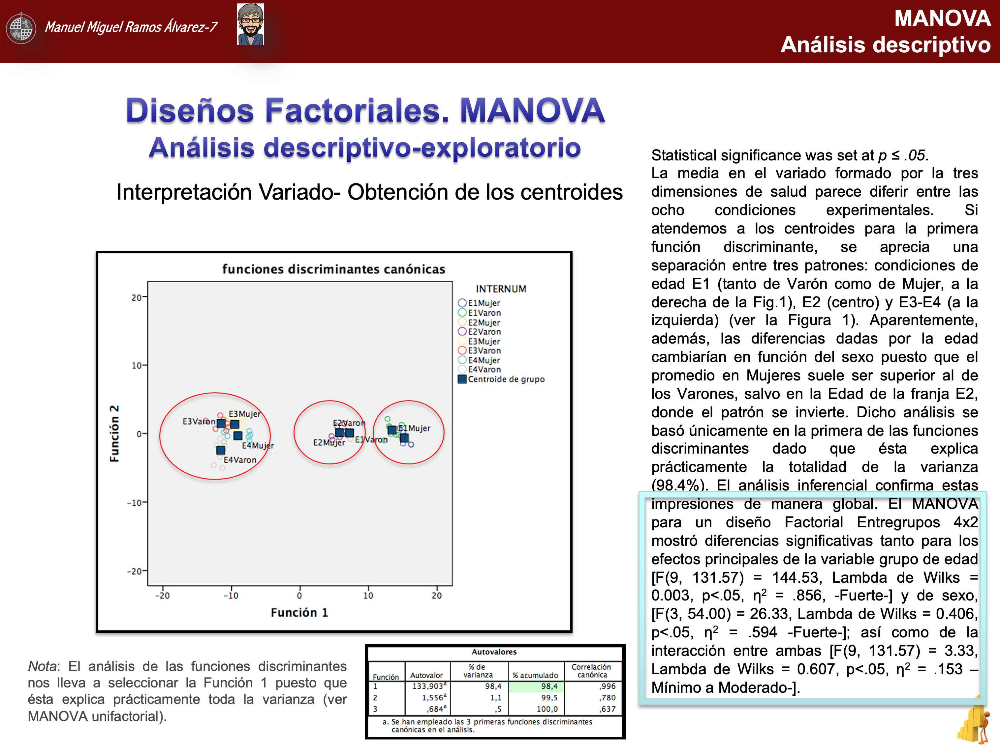
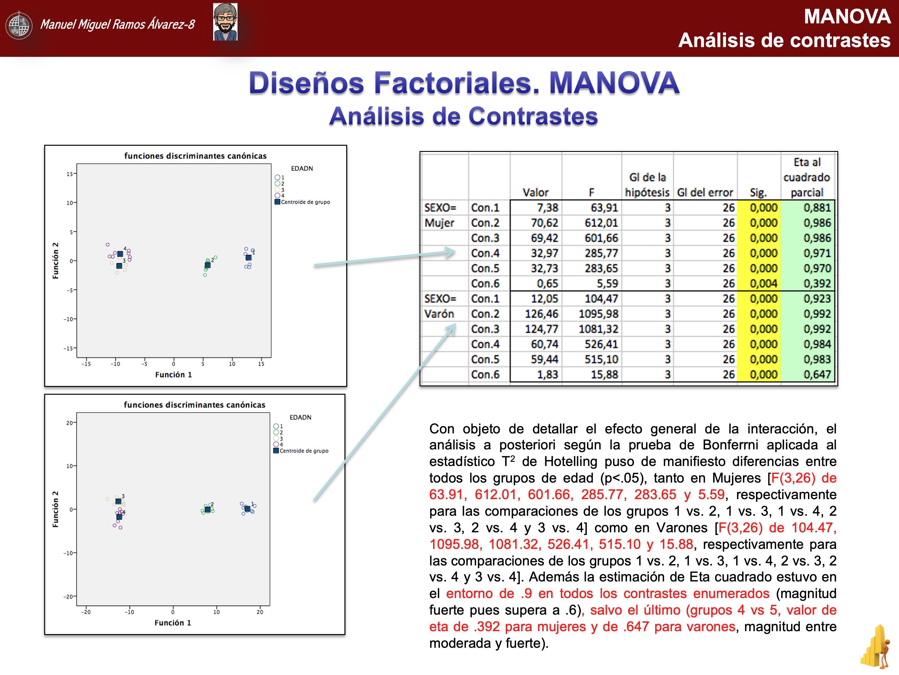
Code
#+-+-+-+-+-+-+-+-+-+-Manuel Miguel Ramos Álvarez+-+-+-+-+-+-+-+-+-+-
#+-+-+-+-+-+-+-+-+-+-Abril de 2024+-+-+-+-+-+-+-+-+-+-
#+-+-+-+-+-+-+-+-+-+-Curso de Formación de Análisis Estadístico Avanzado+-+-+-+-+-+-+-+-+-+-
#Cargar los datos en la variable Datos
NmFichero<-"/Users/mmrambpro/Downloads/ADMMRA_MANOVA2.csv"
# Datos<-read.table(NmFichero,header=TRUE, na.strings="NA", dec=",", strip.white=TRUE,sep=";");
# O bien desde un acceso a internet:
Datos <- read.csv2(
"https://drive.google.com/uc?export=download&id=1zvGaUvzXWiATpLQk8ehakiwV0iNjpytv",
header=TRUE, na.strings="NA", dec=",", strip.white=TRUE,sep=";")
ResDT <- data.table(Datos2)
#+-+-+-+-+-+-+-+-+-+-+-+-+-+-+-+-+-+-+-+-+-+-+-+-+-+-+-+
#Comandos RcmdrMAN0. Fichero datos: ADMMRA_MANOVA2.RData
FormulY1<-formula(SFISICA ~ SEXO*GEDAD)
FormulY2<-formula(SDOLOR ~ SEXO*GEDAD)
FormulY3<-formula(SMENTAL ~ SEXO*GEDAD)
FormulMANOVA<-formula(cbind(SFISICA,SDOLOR,SMENTAL) ~ SEXO*GEDAD)
# La primera vez, quitar # en la siguiente línea, para instalar las librerías necesarias
# install.packages(c("MASS", "candisc","ICSNP","effectsize","gregmisc","gmodels","Rcmdr","emmeans"))
# Opcionalmente, para realizar los análisis mediante el entorno Rcmdr:
# library(Rcmdr)
#Comandos RcmdrMAN0. Fichero datos: ADMMRA_MANOVA2.RData
#+-+-+-+-+-+-+-+-+-+-+-+-+-+-+-+-+-+-+-+-+-+-+-+-+-+-+-+
#Comandos RCmdrMAN1.1. Fichero datos: ADMMRA_MANOVA2.RData. Objetivo: Análisis descriptivo centroides
Datos$INTERAC<-interaction(Datos$SEXO,Datos$GEDAD)
FormulDiscr<-formula(INTERAC ~ SFISICA+SDOLOR+SMENTAL)
#install.packages("MASS");install.packages("candisc")
library(MASS)
fit <- lda(FormulDiscr,Datos)
colorcycle <- c("black","purple","brown","plum","darkorange","dodgerblue","darkgray","goldenrod")
plot(fit,dimen=2,col=colorcycle)
centroids <- fit$means
centroEscala <- centroids %*% fit$scaling
plot(centroEscala[,1], centroEscala[,2], pch=15, col=colorcycle, main='Variables Canónicas', xlab='Función 1', ylab='Función 2')
text(centroEscala[,1], centroEscala[,2]+.05,rownames(centroids))
library(candisc)
FormulDiscr2<-formula(cbind(SDOLOR,SFISICA,SMENTAL) ~ INTERAC)
ModDiscr2<-lm(FormulDiscr2, data=Datos)
candisc(ModDiscr2)
#Comandos RCmdrMAN1.1. Fichero datos: ADMMRA_MANOVA2.RData. Objetivo: Análisis descriptivo centroides
#+-+-+-+-+-+-+-+-+-+-+-+-+-+-+-+-+-+-+-+-+-+-+-+-+-+-+-+
#Comandos RCmdrMAN1.2. Fichero datos: ADMMRA_MANOVA2.RData. Objetivo: Análisis descriptivo
ETM <-function(x) {sd(x)/sqrt(length(x))}
by(Datos[,c("SDOLOR", "SFISICA", "SMENTAL")], Datos[,"INTERAC"], summary)
aggregate(Datos[,c("SDOLOR", "SFISICA", "SMENTAL")], by=list(Datos[,"INTERAC"]), ETM)
#Comandos RCmdrMAN1.2. Fichero datos: ADMMRA_MANOVA2.RData. Objetivo: Análisis descriptivo
#mediante cálculos de estadísticos descriptivos
#+-+-+-+-+-+-+-+-+-+-+-+-+-+-+-+-+-+-+-+-+-+-+-+-+-+-+-+
#Comandos RCmdrMAN2. Fichero datos: ADMMRA_MANOVA2.RData. Análisis inferencial
ModMANOVA<-manova(FormulMANOVA, Datos)
summary(ModMANOVA, test="Wilks")
summary.aov(ModMANOVA)
# Ampliación del análisis mediante la estimación del tamaño del Efecto
# install.packages("effectsize")
library("effectsize")
effectsize::eta_squared(ModMANOVA)
effectsize::eta_squared(aov(FormulY1,Datos))
effectsize::eta_squared(aov(FormulY2,Datos))
effectsize::eta_squared(aov(FormulY3,Datos))
# Comparar con el resultado Lineal:
ModANOVA <- lm(FormulMANOVA, data = Datos)
summary(ModANOVA)
anova(ModANOVA)
# Chequear el supuesto de Normalidad Multivariada
shapiro.test(rstandard(ModMANOVA))
#Comandos RCmdrMAN2. Fichero datos: ADMMRA_MANOVA2.RData. Análisis inferencial Evaluación Modelo SATurado tipo MANOVA.
#FormulMANOVA<-formula(cbind(SFISICA,SDOLOR,SMENTAL) ~ SEXO*GEDAD)
#FormulY1<-formula(SFISICA ~ SEXO*GEDAD); FormulY2<-formula(SDOLOR ~ SEXO*GEDAD); FormulY3<-formula(SMENTAL ~ SEXO*GEDAD)
#install.packages("effectsize")
#+-+-+-+-+-+-+-+-+-+-+-+-+-+-+-+-+-+-+-+-+-+-+-+-+-+-+-+
#Comandos RCmdrMAN3. Fichero datos: ADMMRA_MANOVA2.RData. Objetivo: Análisis comparaciones múltiples
# install.packages("emmeans")
library(emmeans)
ModANOVA <- lm(FormulMANOVA, data = Datos)
#Análisis comparaciones múltiples en Efectos Principales
Mult.Vlsm <- emmeans(ModANOVA, "GEDAD")
# Multiple comparisons with fdr p value adjustment
test(contrast(Mult.Vlsm, "pairwise"), side = "=", adjust = "holm")
#Análisis comparaciones múltiples en Efectos Simples
Mult.Vlsm <-emmeans(ModANOVA,~ GEDAD | SEXO)
test(contrast(Mult.Vlsm, "pairwise"), side = "=", adjust = "holm")
#Tipos de p.adjust
#"holm", "hochberg", "hommel", "bonferroni". Controlan "family-wise error rate"
#"BH" o "fdr" (Benjamini & Hochberg). Control the false discovery rate (fdr)
#"BY" (Benjamini & Yekutieli). También del tipo fdr.
#Comandos RCmdrMAN3. Fichero datos: ADMMRA_MANOVA2.RData. Objetivo: Análisis
# comparaciones múltiples con corrección Holm
#install.packages("effectsize")
#install.packages("emmeans")
#+-+-+-+-+-+-+-+-+-+-Manuel Miguel Ramos Álvarez+-+-+-+-+-+-+-+-+-+-
#+-+-+-+-+-+-+-+-+-+-Abril de 2024+-+-+-+-+-+-+-+-+-+-
#+-+-+-+-+-+-+-+-+-+-Curso de Formación de Análisis Estadístico Avanzado+-+-+-+-+-+-+-+-+-+-
Canonical Discriminant Analysis for INTERAC:
CanRsq Eigenvalue Difference Percent Cumulative
1 0.99259 133.90261 132.35 98.35446 98.354
2 0.60880 1.55627 132.35 1.14311 99.498
3 0.40618 0.68402 132.35 0.50243 100.000
Test of H0: The canonical correlations in the
current row and all that follow are zero
LR test stat approx F numDF denDF Pr(> F)
1 0.00172 60.570 21 155.61 < 2.2e-16 ***
2 0.23230 9.852 12 110.00 8.171e-13 ***
3 0.59382 7.661 5 56.00 1.525e-05 ***
---
Signif. codes: 0 '***' 0.001 '**' 0.01 '*' 0.05 '.' 0.1 ' ' 1
Datos[, "INTERAC"]: Mujer.E1
SDOLOR SFISICA SMENTAL
Min. :84.00 Min. :85.00 Min. :78.00
1st Qu.:85.50 1st Qu.:85.00 1st Qu.:78.75
Median :86.00 Median :85.50 Median :80.50
Mean :86.75 Mean :85.75 Mean :80.25
3rd Qu.:87.75 3rd Qu.:86.25 3rd Qu.:82.00
Max. :91.00 Max. :87.00 Max. :82.00
------------------------------------------------------------
Datos[, "INTERAC"]: Varon.E1
SDOLOR SFISICA SMENTAL
Min. :81.00 Min. :82.00 Min. :74.00
1st Qu.:83.00 1st Qu.:82.00 1st Qu.:76.25
Median :84.50 Median :83.00 Median :77.00
Mean :85.12 Mean :83.12 Mean :76.50
3rd Qu.:87.25 3rd Qu.:84.00 3rd Qu.:77.25
Max. :90.00 Max. :85.00 Max. :78.00
------------------------------------------------------------
Datos[, "INTERAC"]: Mujer.E2
SDOLOR SFISICA SMENTAL
Min. :74.00 Min. :75.00 Min. :70.00
1st Qu.:75.75 1st Qu.:75.00 1st Qu.:70.00
Median :77.00 Median :76.00 Median :72.00
Mean :77.75 Mean :76.00 Mean :71.75
3rd Qu.:80.25 3rd Qu.:76.25 3rd Qu.:72.50
Max. :82.00 Max. :78.00 Max. :74.00
------------------------------------------------------------
Datos[, "INTERAC"]: Varon.E2
SDOLOR SFISICA SMENTAL
Min. :72.00 Min. :73.00 Min. :70
1st Qu.:73.75 1st Qu.:73.75 1st Qu.:70
Median :74.50 Median :74.00 Median :70
Mean :75.38 Mean :74.12 Mean :70
3rd Qu.:76.75 3rd Qu.:75.00 3rd Qu.:70
Max. :80.00 Max. :75.00 Max. :70
------------------------------------------------------------
Datos[, "INTERAC"]: Mujer.E3
SDOLOR SFISICA SMENTAL
Min. :65.00 Min. :56.00 Min. :59
1st Qu.:66.00 1st Qu.:57.00 1st Qu.:59
Median :68.00 Median :57.50 Median :60
Mean :68.62 Mean :57.62 Mean :60
3rd Qu.:71.25 3rd Qu.:58.25 3rd Qu.:61
Max. :73.00 Max. :59.00 Max. :61
------------------------------------------------------------
Datos[, "INTERAC"]: Varon.E3
SDOLOR SFISICA SMENTAL
Min. :62.00 Min. :53.00 Min. :57.00
1st Qu.:64.00 1st Qu.:54.75 1st Qu.:57.00
Median :65.50 Median :55.50 Median :57.50
Mean :65.88 Mean :55.12 Mean :57.75
3rd Qu.:67.50 3rd Qu.:56.00 3rd Qu.:58.25
Max. :70.00 Max. :56.00 Max. :59.00
------------------------------------------------------------
Datos[, "INTERAC"]: Mujer.E4
SDOLOR SFISICA SMENTAL
Min. :54.00 Min. :55.00 Min. :59.00
1st Qu.:60.50 1st Qu.:56.00 1st Qu.:59.75
Median :63.00 Median :59.00 Median :60.00
Mean :65.12 Mean :58.25 Mean :61.62
3rd Qu.:71.50 3rd Qu.:59.50 3rd Qu.:65.00
Max. :77.00 Max. :61.00 Max. :65.00
------------------------------------------------------------
Datos[, "INTERAC"]: Varon.E4
SDOLOR SFISICA SMENTAL
Min. :37.00 Min. :52.00 Min. :55.00
1st Qu.:42.00 1st Qu.:53.00 1st Qu.:55.00
Median :52.50 Median :54.00 Median :56.50
Mean :49.38 Mean :53.88 Mean :56.62
3rd Qu.:55.25 3rd Qu.:55.00 3rd Qu.:58.00
Max. :60.00 Max. :55.00 Max. :59.00
Group.1 SDOLOR SFISICA SMENTAL
1 Mujer.E1 0.9013878 0.3133916 0.6748016
2 Varon.E1 1.0596074 0.3980982 0.5669467
3 Mujer.E2 1.0307764 0.3779645 0.5900968
4 Varon.E2 0.9988833 0.2950484 0.0000000
5 Mujer.E3 1.0845918 0.3750000 0.3779645
6 Varon.E3 0.9531433 0.3980982 0.3133916
7 Mujer.E4 2.7802717 0.8183171 0.9988833
8 Varon.E4 3.0292473 0.3980982 0.6250000
Df Wilks approx F num Df den Df Pr(>F)
SEXO 1 0.40601 26.334 3 54.00 1.249e-10 ***
GEDAD 3 0.00300 144.533 9 131.57 < 2.2e-16 ***
SEXO:GEDAD 3 0.60700 3.328 9 131.57 0.001075 **
Residuals 56
---
Signif. codes: 0 '***' 0.001 '**' 0.01 '*' 0.05 '.' 0.1 ' ' 1
Response SFISICA :
Df Sum Sq Mean Sq F value Pr(>F)
SEXO 1 129.4 129.4 80.1757 2.14e-12 ***
GEDAD 3 9563.4 3187.8 1975.2941 < 2.2e-16 ***
SEXO:GEDAD 3 13.8 4.6 2.8497 0.04548 *
Residuals 56 90.4 1.6
---
Signif. codes: 0 '***' 0.001 '**' 0.01 '*' 0.05 '.' 0.1 ' ' 1
Response SDOLOR :
Df Sum Sq Mean Sq F value Pr(>F)
SEXO 1 506.3 506.25 22.0237 1.779e-05 ***
GEDAD 3 7279.1 2426.37 105.5560 < 2.2e-16 ***
SEXO:GEDAD 3 549.4 183.13 7.9666 0.0001638 ***
Residuals 56 1287.2 22.99
---
Signif. codes: 0 '***' 0.001 '**' 0.01 '*' 0.05 '.' 0.1 ' ' 1
Response SMENTAL :
Df Sum Sq Mean Sq F value Pr(>F)
SEXO 1 162.6 162.56 59.0178 2.581e-10 ***
GEDAD 3 4356.7 1452.25 527.2350 < 2.2e-16 ***
SEXO:GEDAD 3 26.2 8.73 3.1691 0.03124 *
Residuals 56 154.2 2.75
---
Signif. codes: 0 '***' 0.001 '**' 0.01 '*' 0.05 '.' 0.1 ' ' 1
# Effect Size for ANOVA (Type I)
Parameter | Eta2 (partial) | 95% CI
------------------------------------------
SEXO | 0.59 | [0.44, 1.00]
GEDAD | 0.56 | [0.46, 1.00]
SEXO:GEDAD | 0.14 | [0.04, 1.00]
- One-sided CIs: upper bound fixed at [1.00].# Effect Size for ANOVA (Type I)
Parameter | Eta2 (partial) | 95% CI
------------------------------------------
SEXO | 0.59 | [0.45, 1.00]
GEDAD | 0.99 | [0.99, 1.00]
SEXO:GEDAD | 0.13 | [0.00, 1.00]
- One-sided CIs: upper bound fixed at [1.00].# Effect Size for ANOVA (Type I)
Parameter | Eta2 (partial) | 95% CI
------------------------------------------
SEXO | 0.28 | [0.13, 1.00]
GEDAD | 0.85 | [0.79, 1.00]
SEXO:GEDAD | 0.30 | [0.12, 1.00]
- One-sided CIs: upper bound fixed at [1.00].# Effect Size for ANOVA (Type I)
Parameter | Eta2 (partial) | 95% CI
------------------------------------------
SEXO | 0.51 | [0.36, 1.00]
GEDAD | 0.97 | [0.95, 1.00]
SEXO:GEDAD | 0.15 | [0.01, 1.00]
- One-sided CIs: upper bound fixed at [1.00].Response SFISICA :
Call:
lm(formula = SFISICA ~ SEXO * GEDAD, data = Datos)
Residuals:
Min 1Q Median 3Q Max
-3.250 -0.875 0.000 0.875 2.750
Coefficients:
Estimate Std. Error t value Pr(>|t|)
(Intercept) 85.7500 0.4491 190.919 < 2e-16 ***
SEXOVaron -2.6250 0.6352 -4.133 0.000121 ***
GEDADE2 -9.7500 0.6352 -15.350 < 2e-16 ***
GEDADE3 -28.1250 0.6352 -44.278 < 2e-16 ***
GEDADE4 -27.5000 0.6352 -43.294 < 2e-16 ***
SEXOVaron:GEDADE2 0.7500 0.8983 0.835 0.407309
SEXOVaron:GEDADE3 0.1250 0.8983 0.139 0.889828
SEXOVaron:GEDADE4 -1.7500 0.8983 -1.948 0.056415 .
---
Signif. codes: 0 '***' 0.001 '**' 0.01 '*' 0.05 '.' 0.1 ' ' 1
Residual standard error: 1.27 on 56 degrees of freedom
Multiple R-squared: 0.9908, Adjusted R-squared: 0.9896
F-statistic: 859.2 on 7 and 56 DF, p-value: < 2.2e-16
Response SDOLOR :
Call:
lm(formula = SDOLOR ~ SEXO * GEDAD, data = Datos)
Residuals:
Min 1Q Median 3Q Max
-12.375 -2.625 -0.750 3.250 11.875
Coefficients:
Estimate Std. Error t value Pr(>|t|)
(Intercept) 86.750 1.695 51.177 < 2e-16 ***
SEXOVaron -1.625 2.397 -0.678 0.500646
GEDADE2 -9.000 2.397 -3.754 0.000415 ***
GEDADE3 -18.125 2.397 -7.561 4.10e-10 ***
GEDADE4 -21.625 2.397 -9.021 1.67e-12 ***
SEXOVaron:GEDADE2 -0.750 3.390 -0.221 0.825720
SEXOVaron:GEDADE3 -1.125 3.390 -0.332 0.741248
SEXOVaron:GEDADE4 -14.125 3.390 -4.166 0.000108 ***
---
Signif. codes: 0 '***' 0.001 '**' 0.01 '*' 0.05 '.' 0.1 ' ' 1
Residual standard error: 4.794 on 56 degrees of freedom
Multiple R-squared: 0.8662, Adjusted R-squared: 0.8495
F-statistic: 51.8 on 7 and 56 DF, p-value: < 2.2e-16
Response SMENTAL :
Call:
lm(formula = SMENTAL ~ SEXO * GEDAD, data = Datos)
Residuals:
Min 1Q Median 3Q Max
-2.625 -1.344 0.000 1.250 3.375
Coefficients:
Estimate Std. Error t value Pr(>|t|)
(Intercept) 80.2500 0.5868 136.764 < 2e-16 ***
SEXOVaron -3.7500 0.8298 -4.519 3.26e-05 ***
GEDADE2 -8.5000 0.8298 -10.243 1.90e-14 ***
GEDADE3 -20.2500 0.8298 -24.403 < 2e-16 ***
GEDADE4 -18.6250 0.8298 -22.444 < 2e-16 ***
SEXOVaron:GEDADE2 2.0000 1.1736 1.704 0.0939 .
SEXOVaron:GEDADE3 1.5000 1.1736 1.278 0.2065
SEXOVaron:GEDADE4 -1.2500 1.1736 -1.065 0.2914
---
Signif. codes: 0 '***' 0.001 '**' 0.01 '*' 0.05 '.' 0.1 ' ' 1
Residual standard error: 1.66 on 56 degrees of freedom
Multiple R-squared: 0.9672, Adjusted R-squared: 0.9631
F-statistic: 235.7 on 7 and 56 DF, p-value: < 2.2e-16
Analysis of Variance Table
Df Pillai approx F num Df den Df Pr(>F)
(Intercept) 1 0.99973 65721 3 54 < 2.2e-16 ***
SEXO 1 0.59399 26 3 54 1.249e-10 ***
GEDAD 3 1.66544 23 9 168 < 2.2e-16 ***
SEXO:GEDAD 3 0.42947 3 9 168 0.0017 **
Residuals 56
---
Signif. codes: 0 '***' 0.001 '**' 0.01 '*' 0.05 '.' 0.1 ' ' 1
Shapiro-Wilk normality test
data: rstandard(ModMANOVA)
W = 0.99085, p-value = 0.263
contrast estimate SE df t.ratio p.value
E1 - E2 8.75 0.812 56 10.775 <.0001
E1 - E3 22.08 0.812 56 27.194 <.0001
E1 - E4 25.44 0.812 56 31.325 <.0001
E2 - E3 13.33 0.812 56 16.419 <.0001
E2 - E4 16.69 0.812 56 20.550 <.0001
E3 - E4 3.35 0.812 56 4.130 0.0001
Results are averaged over the levels of: SEXO, rep.meas
P value adjustment: holm method for 6 tests
SEXO = Mujer:
contrast estimate SE df t.ratio p.value
E1 - E2 9.083 1.15 56 7.909 <.0001
E1 - E3 22.167 1.15 56 19.302 <.0001
E1 - E4 22.583 1.15 56 19.665 <.0001
E2 - E3 13.083 1.15 56 11.392 <.0001
E2 - E4 13.500 1.15 56 11.755 <.0001
E3 - E4 0.417 1.15 56 0.363 0.7181
SEXO = Varon:
contrast estimate SE df t.ratio p.value
E1 - E2 8.417 1.15 56 7.329 <.0001
E1 - E3 22.000 1.15 56 19.157 <.0001
E1 - E4 28.292 1.15 56 24.635 <.0001
E2 - E3 13.583 1.15 56 11.828 <.0001
E2 - E4 19.875 1.15 56 17.306 <.0001
E3 - E4 6.292 1.15 56 5.479 <.0001
Results are averaged over the levels of: rep.meas
P value adjustment: holm method for 6 tests 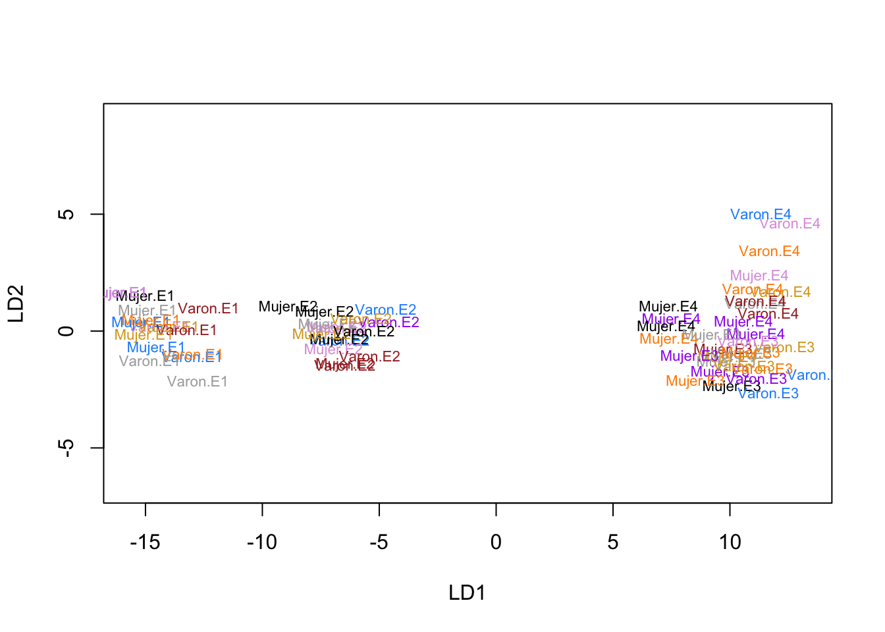

6 Meta-análisis
Esquemas resumen de los contenidos de meta-análisis:
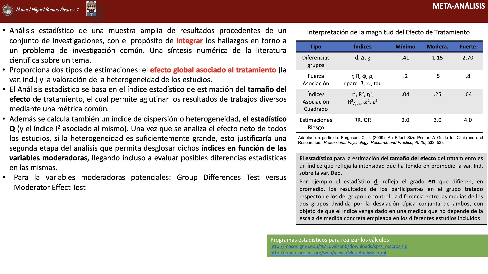
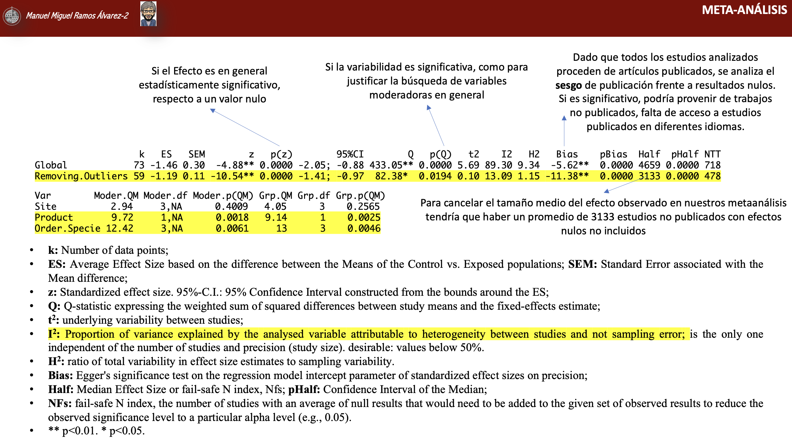
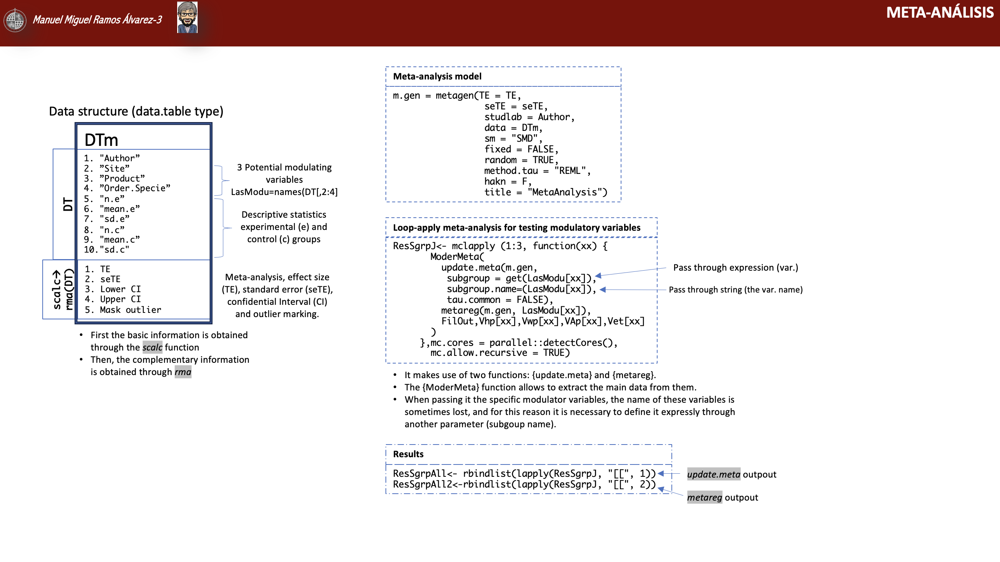
Code
# La primera vez, hay que instalar las librerías necesarias:
# install.packages("metamedian")
# install.packages("meta")
# install.packages("metafor")
# 1) Una vez instaladas en el sistema, en cada sesión, hay que cargar las librerías necesarias
# Generales
library(dplyr)
library(data.table)
#Específicas de la temática
library(metamedian)
library(meta)
library(metafor)
# Extras
library(knitr)
library(kableExtra)
library(parallel)
library(rtf)
# Funciones propias
#source(paste0("/Volumes/RMmRa21/Cursos/Doctorado 24/","RMmRaMeta.R"))
source(gzcon(url("https://github.com/ManuMi68/StatMmRa/raw/main/RMmRaMeta.R")))
# 2) Cargar la información, donde se indica el directorio en el que están los datos,
# almacenados en fichero de texto separado por comas, tipo csv
CarpAct<-"/Volumes/RMmRa21/Cursos/Doctorado 24/Data/" # Sustituir el trayecto por el suyo propio
NmFich="Base de datos MetaAnalisis.csv"
Datos<-read.table(paste0(CarpAct,NmFich),header=TRUE, na.strings="NA", dec=",", strip.white=TRUE,sep=";")
# O bien desde un acceso a internet:
Datos <- read.csv2(
"https://drive.google.com/uc?export=download&id=1H6fhX2RZSP3SRx-3TPbRg2aKa2Am6rAw",
header=TRUE,na.strings="NA", dec=",", strip.white=TRUE,sep=";")
# Exposure to sublethal concentrations of agrochemicals will have
# a negative effect on zooplankton population abundance
DT<-data.frame(Datos)
DT<-na.omit(DT) # elimina valores perdidos para evitar problemas
DT<- DT %>%
mutate_at(c("Site", "Product", "Order.Specie"), factor) %>%
data.table()
cat("Fields in the data file"); names(DT)
# Ampliar
kbl(names(DT), format = "html",longtable=T,booktabs=T, caption = "Fields in the data file")
# 3) Estimaciones de meta-análisis
# 3.1. Previamenente se recomienda la estimación de los tamaños del efecto y su variabilidad (Calculamos las yi, vi con {escalc})
DatMeta<-with( DT, metafor::escalc("SMD",n1i=n.e,n2i=n.c, m1i=mean.e, m2i=mean.c, sd1i=sd.e, sd2i=sd.c,slab =Author,data=DT))
# 3.2. Y entonces procedemos a los cálculos de meta-análisis, mediante el comnando {rma}
m.rma<-metafor::rma(yi, vi, data=DatMeta, method="REML",slab =Author)
# yi equivale al Tamaño del Efecto, vi es la variabilidad del Tamaño del Efecto; donde el Error Estándar = raiz de vi.
# Resumen de los resultados
summary(m.rma)
# Para ampliar (función propia ExtractEstad) que perminte extrar y organizar los resultados principales
ExtractEstad(ResMetaP = m.rma)
# 4) Análisis exploratorio mediante Representación forest
metafor::forest(m.rma)
# 5) Explorar posibles outliers
# A través de una función específica, pero puede ser errónea
find.outliers(m.rma)
# Mejor realizar las estimaciones desde la base
Resnm<-as.numeric(rownames(DT)[!is.na(DT$n.e)])
x=m.rma
lower = as.numeric(x$yi - 1.96*sqrt(x$vi))
upper = as.numeric(x$yi + 1.96*sqrt(x$vi))
mask = upper < x$ci.lb | lower > x$ci.ub
Outl = x$slab[mask]
OutNum<-Resnm[mask]
# Los estudios que podrían suponer outliers
Outl
# Repetiríamos el meta-análisis omitiendo los outliers
result.Outl<-metafor::rma(yi, vi, data=DatMeta, method="REML",slab =Author, subset=Resnm[!mask])
summary(result.Outl)
ExtractEstad(ResMetaP = result.Outl)
# Se recomienda comparar los dos resultados, con y sin outliers
ResMas <- ExtractEstad(ResMetaP = m.rma)
ResMas[2,] <- ExtractEstad(ResMetaP = result.Outl)
rownames(ResMas) <-c("Global", "Removing.Outliers")
ResMas
# forest mejorado, indicando los estudios-outliers en sombreado
forest.rma(m.rma,addpred=TRUE,order="obs",shade=(m.rma$k+1)-sort(match(Resnm[mask],order(DatMeta$yi))),
xlim=c(-80,30), at=seq(-40,10,by=10),
ilab=cbind(n.e, round(mean.e,2), round(sd.e,2), n.c, round(mean.c,2), round(sd.c,2)),
ilab.xpos=seq(-60,-35,by=5), header="Author(s) and Year",
cex=.75, col="green"
)
text(seq(-60,-35,by=5), m.rma$k+2, c("N", "Media", "SD", "N", "Media", "SD"), cex=0.75, font=2)
text(c(-55,-40), m.rma$k+3.5, c("Experimental", "Control"), cex=0.75, font=2)
#abline(v = c(m.rma$ci.lb,m.rma$ci.ub), lty="dashed",col="green")
segments(m.rma$ci.lb,-1,m.rma$ci.lb,m.rma$k,lty="dashed",col="green")
segments(m.rma$ci.ub,-1,m.rma$ci.ub,m.rma$k,lty="dashed",col="green")
# Podemos añadir información relevante al meta-análisis a los datos básicos
DTm<- data.table(DatMeta,TE=c(m.rma$yi), seTE = sqrt(c(m.rma$vi)),
lower,upper,mask)
DTm$Author[OutNum]<-paste0("^ ",DTm$Author[OutNum]," Outlier")
# Para ampliar
# Visualizar todo lo que llevamos al momento en un formato amigable
kb1<-kableTabl(DTm,"Data structure with the main results of the meta-analysis", "from escalc" )
kb1
# 6) Meta-analysis by subgroups to determine possible moderator variables
metafor::rma(yi, vi, data=DatMeta, method="REML",slab =Author, subset=Resnm[!mask],mods = ~ Site)
# El meta-análisis se puede realizar de manera alternativa mediante el comando metagen de la librería {meta}
# Define Model
DTFinal<-DTm[Resnm[!mask]]
m.gen = meta::metagen(TE = TE,
seTE = seTE,
studlab = Author,
data = DTFinal,
sm = "SMD",
fixed = FALSE,
random = TRUE,
method.tau = "REML",
hakn = F,
title = "MetaAnalysis")
# Estimación del posible efecto Moderador:
update(m.gen,
subgroup = Site, subgroup.name = 'Site',
tau.common = FALSE)
metareg(m.gen, 'Site')
# Más sistemático
FilOut="ResSubgrup.txt"
ResSgrpJ<-list()
LasModu=names(DT[,2:4])
# Dimensiones para el gráfico, en ancho y largo
Vhp=rep(15,9)
Vwp=c(35,35,40,50,35,35,35,40,35)
# Append el fichero a partir de la 2ª llamada
VAp=c(FALSE,rep(TRUE,8))
# Etiquetas en blanco
Vet=c(rep("",9))
ResSgrpJ<- lapply (1:3, function(xx) {
ModerMeta(
update(m.gen,
subgroup = get(LasModu[xx]),
subgroup.name=(LasModu[xx]),
tau.common = FALSE),
metareg(m.gen, LasModu[xx]),
FilOut,Vhp[xx],Vwp[xx],VAp[xx],Vet[xx]
)
})
# Resultados detallados
ResSgrpJ
# Observar los ficheros pdf que se habrán almacenado, los cuales corresponden a cada uno de los gráficos forest resultantes para cada una de las variables
# Aparte, para que profundices por tu cuenta
# El meta-análisis se puede realizar de manera alternativa mediante el comando metagen de la librería {meta}
# Define Model
m.gen2 = meta::metagen(TE = TE,
seTE = seTE,
studlab = Author,
data = DTm,
sm = "SMD",
fixed = FALSE,
random = TRUE,
method.tau = "REML",
hakn = F,
title = "MetaAnalysis")
# Para el análisis de outliers de manera alternativa
m.gen.Outl2<-update(m.gen2, exclude = OutNum)
ExtractEstad2(m.gen2)
ExtractEstad2(m.gen.Outl2)
# Análisis de valores de Influencia para complementar análisis de outliers
inflst<-influence(m.rma)
InflNum<-inflst$ids[inflst$is.infl]
cat("Los estudios con valores de influencia anámalos:")
DatMeta$Author[inflst$is.infl]
plot(inflst)
pdf(file = "Influence_rma.pdf", family = "ArialMT")
plot(inflst)
dev.off()
result.Influ<-metafor::rma(yi, vi, data=DatMeta, method="REML",slab =Author, subset=inflst$ids[!inflst$is.infl])
# Outliers e Influencia juntos, que probablemente sea redundante puestos q los de influencia eran parte tb de los outliers
OutInf=unique(OutNum,InflNum)
result.OutlInflu<-metafor::rma(yi, vi, data=DatMeta, method="REML",slab =Author, subset=inflst$ids[-OutInf])
# Comparamos todos los resultados
ResMas <- ExtractEstad(ResMetaP = m.rma)
ResMas[2,] <- ExtractEstad(ResMetaP = result.Outl)
ResMas[3,] <- ExtractEstad(result.Influ)
ResMas[4,] <- ExtractEstad(result.OutlInflu)
rownames(ResMas) <-c("Global", "Removing.Outliers", "Removing.Influence", "Removing.Outliers&Influence")
ResMas
# Salida mejorada
kb2 <- kableTabl(ResMas,"Results APA style", "from metafor","100%" )
kb2
# Para almacenar los resultados
write.csv2(DTm,"ResOut.csv")
DataOtroOrd<- copy(DTm)
setkey(DataOtroOrd,TE)
write.csv2(DataOtroOrd,"ResOutOrdered.csv")
# Sobre el análisis por subgrupos
# Función apply más rápida
ResSgrpJ<- mclapply (1:3, function(xx) {
ModerMeta(
update(m.gen,
subgroup = get(LasModu[xx]),
subgroup.name=(LasModu[xx]),
tau.common = FALSE),
metareg(m.gen, LasModu[xx]),
FilOut,Vhp[xx],Vwp[xx],VAp[xx],Vet[xx]
)
},mc.cores = parallel::detectCores(),
mc.allow.recursive = TRUE)
# Resultados detallados
ResSgrpAll<-rbindlist(lapply(ResSgrpJ, "[[", 1))
ResSgrpAll2<-data.table(Var= c("Site", "Product", "Order.Specie"),
do.call("rbind", lapply(ResSgrpJ, "[[", 2)))
ResSgrpAll3<-rbindlist(lapply(ResSgrpJ, "[[", 3))
kb3<-kableTabl(ResSgrpAll,"Results APA style of Meta-analysis by subgroups-1", "update meta","100%")
kb4<-kableTabl(ResSgrpAll2,"Results APA style of Meta-analysis by subgroups-2", "metareg","100%" )
kb5<-kableTabl(ResSgrpAll3,"Results APA style of Meta-analysis by subgroups-3", "metareg","10%%" )
kb3
kb4
kb5
rtffile <- RTF(file = "GeneralMetaModer.doc")
addText(rtffile,"1) Resultados Meta-análisis por var. moderadoras:\n");addNewLine(rtffile);
addNewLine(rtffile);
addTable(rtffile,as.data.table(ResSgrpAll,keep.rownames = T)); addNewLine(rtffile,2);
addPageBreak(rtffile);
addTable(rtffile,as.data.table(ResSgrpAll2,keep.rownames = T)); addNewLine(rtffile,2);
addPageBreak(rtffile);
addTable(rtffile,as.data.table(ResSgrpAll3,keep.rownames = T)); addNewLine(rtffile,2);
done(rtffile)
# Aparte, para que profundices por tu cuenta
Fields in the data file [1] "Author" "Site" "Product" "Order.Specie" "n.e"
[6] "mean.e" "sd.e" "n.c" "mean.c" "sd.c" | x |
|---|
| Author |
| Site |
| Product |
| Order.Specie |
| n.e |
| mean.e |
| sd.e |
| n.c |
| mean.c |
| sd.c |
Random-Effects Model (k = 73; tau^2 estimator: REML)
logLik deviance AIC BIC AICc
-177.8709 355.7418 359.7418 364.2951 359.9157
tau^2 (estimated amount of total heterogeneity): 5.6894 (SE = 1.0874)
tau (square root of estimated tau^2 value): 2.3852
I^2 (total heterogeneity / total variability): 89.30%
H^2 (total variability / sampling variability): 9.34
Test for Heterogeneity:
Q(df = 72) = 433.0474, p-val < .0001
Model Results:
estimate se zval pval ci.lb ci.ub
-1.4629 0.2999 -4.8776 <.0001 -2.0507 -0.8751 ***
---
Signif. codes: 0 '***' 0.001 '**' 0.01 '*' 0.05 '.' 0.1 ' ' 1
k Dif se z p(z) 95%CI Q p(Q) t2 I2 H2
1 73 -1.46 0.3 -4.88** 0.0000 -2.05; -0.88 433.05** 0.0000 5.69 89.3 9.34
BiasMM pBiasMM Half pHalf NTT
1 -5.62** 0.0000 4659 0.0000 718
$out.study
[1] "Rumschlag et al. 2020-35" "Rumschlag et al. 2020-41"
[3] "Rumschlag et al. 2020-47" "Rumschlag et al. 2020-65"
[5] "Rumschlag et al. 2020-71" "Sumon et al. 2018-2"
[7] "Sumon et al. 2018-3" "Sumon et al. 2018-4"
[9] "Sumon et al. 2018-5" "Geyer et al. 2016-2"
[11] "Leboulanger et al. 2011-1" "Leboulanger et al. 2011-5"
[13] "Leboulanger et al. 2011-6" "Leboulanger et al. 2011-16"
$m
Random-Effects Model (k = 59; tau^2 estimator: REML)
tau^2 (estimated amount of total heterogeneity): 0.0961 (SE = 0.1307)
tau (square root of estimated tau^2 value): 0.3101
I^2 (total heterogeneity / total variability): 13.09%
H^2 (total variability / sampling variability): 1.15
Test for Heterogeneity:
Q(df = 58) = 82.3815, p-val = 0.0194
Model Results:
estimate se zval pval ci.lb ci.ub
-1.1913 0.1130 -10.5447 <.0001 -1.4127 -0.9698 ***
---
Signif. codes: 0 '***' 0.001 '**' 0.01 '*' 0.05 '.' 0.1 ' ' 1
attr(,"class")
[1] "find.outliers" "mf" "REML"
[1] "Rumschlag et al. 2020-35" "Rumschlag et al. 2020-41"
[3] "Rumschlag et al. 2020-47" "Rumschlag et al. 2020-65"
[5] "Rumschlag et al. 2020-71" "Sumon et al. 2018-2"
[7] "Sumon et al. 2018-3" "Sumon et al. 2018-4"
[9] "Sumon et al. 2018-5" "Geyer et al. 2016-2"
[11] "Leboulanger et al. 2011-1" "Leboulanger et al. 2011-5"
[13] "Leboulanger et al. 2011-6" "Leboulanger et al. 2011-16"
Random-Effects Model (k = 59; tau^2 estimator: REML)
logLik deviance AIC BIC AICc
-83.8909 167.7818 171.7818 175.9027 172.0000
tau^2 (estimated amount of total heterogeneity): 0.0961 (SE = 0.1307)
tau (square root of estimated tau^2 value): 0.3101
I^2 (total heterogeneity / total variability): 13.09%
H^2 (total variability / sampling variability): 1.15
Test for Heterogeneity:
Q(df = 58) = 82.3815, p-val = 0.0194
Model Results:
estimate se zval pval ci.lb ci.ub
-1.1913 0.1130 -10.5447 <.0001 -1.4127 -0.9698 ***
---
Signif. codes: 0 '***' 0.001 '**' 0.01 '*' 0.05 '.' 0.1 ' ' 1
k Dif se z p(z) 95%CI Q p(Q) t2 I2 H2
1 59 -1.19 0.11 -10.54** 0.0000 -1.41; -0.97 82.38* 0.0194 0.1 13.09 1.15
BiasMM pBiasMM Half pHalf NTT
1 -11.38** 0.0000 3133 0.0000 478
k Dif se z p(z) 95%CI Q p(Q)
Global 73 -1.46 0.3 -4.88** 0.0000 -2.05; -0.88 433.05** 0.0000
Removing.Outliers 59 -1.19 0.11 -10.54** 0.0000 -1.41; -0.97 82.38* 0.0194
t2 I2 H2 BiasMM pBiasMM Half pHalf NTT
Global 5.69 89.3 9.34 -5.62** 0.0000 4659 0.0000 718
Removing.Outliers 0.1 13.09 1.15 -11.38** 0.0000 3133 0.0000 478| Author | Site | Product | Order.Specie | n.e | mean.e | sd.e | n.c | mean.c | sd.c | yi | vi | TE | seTE | lower | upper | mask |
|---|---|---|---|---|---|---|---|---|---|---|---|---|---|---|---|---|
| Rumschlag et al. 2020-25 | Pennsylvania Furlance, EEUU | Herbicide | Cladocera | 4 | 38.80 | 20.6633 | 4 | 79.10 | 37.8659 | -1.1476 | 0.5823 | -1.1476 | 0.7631 | -2.6433 | 0.3480 | FALSE |
| Rumschlag et al. 2020-26 | Pennsylvania Furlance, EEUU | Herbicide | Cladocera | 4 | 11.70 | 3.0659 | 4 | 39.80 | 10.5135 | -3.1520 | 1.1209 | -3.1520 | 1.0587 | -5.2271 | -1.0768 | FALSE |
| Rumschlag et al. 2020-27 | Pennsylvania Furlance, EEUU | Herbicide | Anomopoda | 4 | 21.00 | 22.9329 | 4 | 27.15 | 51.2334 | -0.1346 | 0.5011 | -0.1346 | 0.7079 | -1.5221 | 1.2529 | FALSE |
| Rumschlag et al. 2020-28 | Pennsylvania Furlance, EEUU | Herbicide | Cladocera | 4 | 59.80 | 42.5109 | 4 | 398.45 | 319.3090 | -1.2914 | 0.6042 | -1.2914 | 0.7773 | -2.8150 | 0.2321 | FALSE |
| Rumschlag et al. 2020-29 | Pennsylvania Furlance, EEUU | Herbicide | Copepoda | 4 | 32.10 | 39.7044 | 4 | 39.00 | 19.0060 | -0.1926 | 0.5023 | -0.1926 | 0.7087 | -1.5817 | 1.1966 | FALSE |
| Rumschlag et al. 2020-30 | Pennsylvania Furlance, EEUU | Herbicide | Copepoda | 4 | 18.10 | 5.5314 | 4 | 47.80 | 25.9327 | -1.3759 | 0.6183 | -1.3759 | 0.7863 | -2.9171 | 0.1653 | FALSE |
| Rumschlag et al. 2020-31 | Pennsylvania Furlance, EEUU | Insecticide | Cladocera | 4 | 0.50 | 0.5260 | 4 | 79.10 | 37.8659 | -2.5496 | 0.9063 | -2.5496 | 0.9520 | -4.4156 | -0.6837 | FALSE |
| Rumschlag et al. 2020-32 | Pennsylvania Furlance, EEUU | Insecticide | Cladocera | 4 | 0.00 | 0.0000 | 4 | 39.80 | 10.5135 | -4.6503 | 1.8516 | -4.6503 | 1.3607 | -7.3174 | -1.9833 | FALSE |
| Rumschlag et al. 2020-33 | Pennsylvania Furlance, EEUU | Insecticide | Anomopoda | 4 | 0.10 | 0.1155 | 4 | 27.15 | 51.2334 | -0.6486 | 0.5263 | -0.6486 | 0.7255 | -2.0705 | 0.7733 | FALSE |
| Rumschlag et al. 2020-34 | Pennsylvania Furlance, EEUU | Insecticide | Cladocera | 4 | 0.30 | 0.3786 | 4 | 398.45 | 319.3090 | -1.5317 | 0.6466 | -1.5317 | 0.8041 | -3.1078 | 0.0444 | FALSE |
| ^ Rumschlag et al. 2020-35 Outlier | Pennsylvania Furlance, EEUU | Insecticide | Copepoda | 4 | 155.60 | 45.2457 | 4 | 39.00 | 19.0060 | 2.9187 | 1.0324 | 2.9187 | 1.0161 | 0.9271 | 4.9102 | TRUE |
| Rumschlag et al. 2020-36 | Pennsylvania Furlance, EEUU | Insecticide | Copepoda | 4 | 30.90 | 16.6072 | 4 | 47.80 | 25.9327 | -0.6742 | 0.5284 | -0.6742 | 0.7269 | -2.0989 | 0.7506 | FALSE |
| Rumschlag et al. 2020-37 | Pennsylvania Furlance, EEUU | Insecticide | Cladocera | 4 | 1.10 | 1.7234 | 4 | 79.10 | 37.8659 | -2.5278 | 0.8994 | -2.5278 | 0.9483 | -4.3866 | -0.6691 | FALSE |
| Rumschlag et al. 2020-38 | Pennsylvania Furlance, EEUU | Insecticide | Cladocera | 4 | 0.00 | 0.0000 | 4 | 39.80 | 10.5135 | -4.6503 | 1.8516 | -4.6503 | 1.3607 | -7.3174 | -1.9833 | FALSE |
| Rumschlag et al. 2020-39 | Pennsylvania Furlance, EEUU | Insecticide | Anomopoda | 4 | 0.00 | 0.0000 | 4 | 27.15 | 51.2334 | -0.6510 | 0.5265 | -0.6510 | 0.7256 | -2.0731 | 0.7712 | FALSE |
| Rumschlag et al. 2020-40 | Pennsylvania Furlance, EEUU | Insecticide | Cladocera | 4 | 4.60 | 9.0672 | 4 | 398.45 | 319.3090 | -1.5146 | 0.6434 | -1.5146 | 0.8021 | -3.0867 | 0.0575 | FALSE |
| ^ Rumschlag et al. 2020-41 Outlier | Pennsylvania Furlance, EEUU | Insecticide | Copepoda | 4 | 395.50 | 368.9937 | 4 | 39.00 | 19.0060 | 1.1853 | 0.5878 | 1.1853 | 0.7667 | -0.3174 | 2.6880 | TRUE |
| Rumschlag et al. 2020-42 | Pennsylvania Furlance, EEUU | Insecticide | Copepoda | 4 | 1.50 | 1.3515 | 4 | 47.80 | 25.9327 | -2.1902 | 0.7998 | -2.1902 | 0.8943 | -3.9431 | -0.4374 | FALSE |
| Rumschlag et al. 2020-43 | Pennsylvania Furlance, EEUU | Insecticide | Cladocera | 4 | 0.20 | 0.1915 | 4 | 79.10 | 37.8659 | -2.5596 | 0.9095 | -2.5596 | 0.9537 | -4.4288 | -0.6904 | FALSE |
| Rumschlag et al. 2020-44 | Pennsylvania Furlance, EEUU | Insecticide | Cladocera | 4 | 0.00 | 0.0000 | 4 | 39.80 | 10.5135 | -4.6503 | 1.8516 | -4.6503 | 1.3607 | -7.3174 | -1.9833 | FALSE |
| Rumschlag et al. 2020-45 | Pennsylvania Furlance, EEUU | Insecticide | Anomopoda | 4 | 0.00 | 0.0000 | 4 | 27.15 | 51.2334 | -0.6510 | 0.5265 | -0.6510 | 0.7256 | -2.0731 | 0.7712 | FALSE |
| Rumschlag et al. 2020-46 | Pennsylvania Furlance, EEUU | Insecticide | Cladocera | 4 | 0.70 | 1.1489 | 4 | 398.45 | 319.3090 | -1.5302 | 0.6463 | -1.5302 | 0.8040 | -3.1059 | 0.0456 | FALSE |
| ^ Rumschlag et al. 2020-47 Outlier | Pennsylvania Furlance, EEUU | Insecticide | Copepoda | 4 | 536.70 | 122.3261 | 4 | 39.00 | 19.0060 | 4.9388 | 2.0245 | 4.9388 | 1.4228 | 2.1500 | 7.7275 | TRUE |
| Rumschlag et al. 2020-48 | Pennsylvania Furlance, EEUU | Insecticide | Copepoda | 4 | 7.90 | 9.4439 | 4 | 47.80 | 25.9327 | -1.7760 | 0.6971 | -1.7760 | 0.8349 | -3.4124 | -0.1395 | FALSE |
| Rumschlag et al. 2020-49 | Pennsylvania Furlance, EEUU | Herbicide | Cladocera | 4 | 23.60 | 19.0315 | 4 | 79.10 | 37.8659 | -1.6087 | 0.6618 | -1.6087 | 0.8135 | -3.2032 | -0.0143 | FALSE |
| Rumschlag et al. 2020-50 | Pennsylvania Furlance, EEUU | Herbicide | Cladocera | 4 | 23.10 | 18.6665 | 4 | 39.80 | 10.5135 | -0.9576 | 0.5573 | -0.9576 | 0.7465 | -2.4208 | 0.5056 | FALSE |
| Rumschlag et al. 2020-51 | Pennsylvania Furlance, EEUU | Herbicide | Anomopoda | 4 | 2.60 | 3.0111 | 4 | 27.15 | 51.2334 | -0.5876 | 0.5216 | -0.5876 | 0.7222 | -2.0031 | 0.8279 | FALSE |
| Rumschlag et al. 2020-52 | Pennsylvania Furlance, EEUU | Herbicide | Cladocera | 4 | 134.10 | 81.7000 | 4 | 398.45 | 319.3090 | -0.9852 | 0.5607 | -0.9852 | 0.7488 | -2.4529 | 0.4824 | FALSE |
| Rumschlag et al. 2020-53 | Pennsylvania Furlance, EEUU | Herbicide | Copepoda | 4 | 60.50 | 50.4498 | 4 | 39.00 | 19.0060 | 0.4899 | 0.5150 | 0.4899 | 0.7176 | -0.9167 | 1.8965 | FALSE |
| Rumschlag et al. 2020-54 | Pennsylvania Furlance, EEUU | Herbicide | Copepoda | 4 | 20.20 | 12.9031 | 4 | 47.80 | 25.9327 | -1.1705 | 0.5856 | -1.1705 | 0.7653 | -2.6704 | 0.3294 | FALSE |
| Rumschlag et al. 2020-55 | Pennsylvania Furlance, EEUU | Herbicide | Cladocera | 4 | 32.80 | 16.8027 | 4 | 79.10 | 37.8659 | -1.3729 | 0.6178 | -1.3729 | 0.7860 | -2.9135 | 0.1676 | FALSE |
| Rumschlag et al. 2020-56 | Pennsylvania Furlance, EEUU | Herbicide | Cladocera | 4 | 23.90 | 10.4620 | 4 | 39.80 | 10.5135 | -1.3169 | 0.6084 | -1.3169 | 0.7800 | -2.8457 | 0.2119 | FALSE |
| Rumschlag et al. 2020-57 | Pennsylvania Furlance, EEUU | Herbicide | Anomopoda | 4 | 16.20 | 19.0000 | 4 | 27.15 | 51.2334 | -0.2462 | 0.5038 | -0.2462 | 0.7098 | -1.6373 | 1.1450 | FALSE |
| Rumschlag et al. 2020-58 | Pennsylvania Furlance, EEUU | Herbicide | Cladocera | 4 | 85.30 | 49.8000 | 4 | 398.45 | 319.3090 | -1.1903 | 0.5886 | -1.1903 | 0.7672 | -2.6940 | 0.3133 | FALSE |
| Rumschlag et al. 2020-59 | Pennsylvania Furlance, EEUU | Herbicide | Copepoda | 4 | 42.70 | 38.2251 | 4 | 39.00 | 19.0060 | 0.1065 | 0.5007 | 0.1065 | 0.7076 | -1.2804 | 1.4934 | FALSE |
| Rumschlag et al. 2020-60 | Pennsylvania Furlance, EEUU | Herbicide | Copepoda | 4 | 24.20 | 11.9067 | 4 | 47.80 | 25.9327 | -1.0160 | 0.5645 | -1.0160 | 0.7513 | -2.4886 | 0.4567 | FALSE |
| Rumschlag et al. 2020-61 | Pennsylvania Furlance, EEUU | Herbicide | Cladocera | 4 | 44.50 | 42.2994 | 4 | 79.10 | 37.8659 | -0.7487 | 0.5350 | -0.7487 | 0.7315 | -2.1823 | 0.6850 | FALSE |
| Rumschlag et al. 2020-62 | Pennsylvania Furlance, EEUU | Herbicide | Cladocera | 4 | 11.50 | 10.8400 | 4 | 39.80 | 10.5135 | -2.3021 | 0.8312 | -2.3021 | 0.9117 | -4.0891 | -0.5152 | FALSE |
| Rumschlag et al. 2020-63 | Pennsylvania Furlance, EEUU | Herbicide | Anomopoda | 4 | 15.20 | 17.7000 | 4 | 27.15 | 51.2334 | -0.2708 | 0.5046 | -0.2708 | 0.7103 | -1.6631 | 1.1214 | FALSE |
| Rumschlag et al. 2020-64 | Pennsylvania Furlance, EEUU | Herbicide | Cladocera | 4 | 71.50 | 45.9000 | 4 | 398.45 | 319.3090 | -1.2450 | 0.5969 | -1.2450 | 0.7726 | -2.7593 | 0.2692 | FALSE |
| ^ Rumschlag et al. 2020-65 Outlier | Pennsylvania Furlance, EEUU | Herbicide | Copepoda | 4 | 56.50 | 34.6912 | 4 | 39.00 | 19.0060 | 0.5435 | 0.5185 | 0.5435 | 0.7200 | -0.8678 | 1.9547 | TRUE |
| Rumschlag et al. 2020-66 | Pennsylvania Furlance, EEUU | Herbicide | Copepoda | 4 | 29.60 | 24.1685 | 4 | 47.80 | 25.9327 | -0.6307 | 0.5249 | -0.6307 | 0.7245 | -2.0507 | 0.7893 | FALSE |
| Rumschlag et al. 2020-67 | Pennsylvania Furlance, EEUU | Insecticide | Cladocera | 4 | 0.00 | 0.0000 | 4 | 79.10 | 37.8659 | -2.5661 | 0.9116 | -2.5661 | 0.9548 | -4.4374 | -0.6948 | FALSE |
| Rumschlag et al. 2020-68 | Pennsylvania Furlance, EEUU | Insecticide | Cladocera | 4 | 0.00 | 0.0000 | 4 | 39.80 | 10.5135 | -4.6503 | 1.8516 | -4.6503 | 1.3607 | -7.3174 | -1.9833 | FALSE |
| Rumschlag et al. 2020-69 | Pennsylvania Furlance, EEUU | Insecticide | Anomopoda | 4 | 0.00 | 0.0000 | 4 | 27.15 | 51.2334 | -0.6510 | 0.5265 | -0.6510 | 0.7256 | -2.0731 | 0.7712 | FALSE |
| Rumschlag et al. 2020-70 | Pennsylvania Furlance, EEUU | Insecticide | Cladocera | 4 | 0.40 | 0.5000 | 4 | 398.45 | 319.3090 | -1.5313 | 0.6466 | -1.5313 | 0.8041 | -3.1074 | 0.0447 | FALSE |
| ^ Rumschlag et al. 2020-71 Outlier | Pennsylvania Furlance, EEUU | Insecticide | Copepoda | 4 | 591.40 | 201.4585 | 4 | 39.00 | 19.0060 | 3.3535 | 1.2029 | 3.3535 | 1.0967 | 1.2038 | 5.5031 | TRUE |
| Rumschlag et al. 2020-72 | Pennsylvania Furlance, EEUU | Insecticide | Copepoda | 4 | 0.70 | 0.5508 | 4 | 47.80 | 25.9327 | -2.2306 | 0.8110 | -2.2306 | 0.9005 | -3.9957 | -0.4655 | FALSE |
| Sumon et al. 2018-1 | Mymensingh, Bangladesh | Insecticide | Copepoda | 21 | 8.30 | 1.5000 | 21 | 10.00 | 0.0000 | -1.5725 | 0.1247 | -1.5725 | 0.3531 | -2.2646 | -0.8804 | FALSE |
| ^ Sumon et al. 2018-2 Outlier | Mymensingh, Bangladesh | Insecticide | Copepoda | 21 | 5.70 | 0.6000 | 21 | 10.00 | 0.0000 | -9.9438 | 1.2724 | -9.9438 | 1.1280 | -12.1546 | -7.7329 | TRUE |
| ^ Sumon et al. 2018-3 Outlier | Mymensingh, Bangladesh | Insecticide | Copepoda | 21 | 4.30 | 1.2000 | 21 | 10.00 | 0.0000 | -6.5906 | 0.6123 | -6.5906 | 0.7825 | -8.1244 | -5.0569 | TRUE |
| ^ Sumon et al. 2018-4 Outlier | Mymensingh, Bangladesh | Insecticide | Copepoda | 21 | 3.30 | 0.6000 | 21 | 10.00 | 0.0000 | -15.4938 | 2.9531 | -15.4938 | 1.7184 | -18.8619 | -12.1256 | TRUE |
| ^ Sumon et al. 2018-5 Outlier | Mymensingh, Bangladesh | Insecticide | Copepoda | 21 | 3.00 | 1.0000 | 21 | 10.00 | 0.0000 | -9.7125 | 1.2182 | -9.7125 | 1.1037 | -11.8759 | -7.5492 | TRUE |
| Geyer et al. 2016-1 | Graville, USA | Herbicide | Cladocera | 4 | 0.13 | 0.0600 | 4 | 0.73 | 0.3700 | -1.9664 | 0.7417 | -1.9664 | 0.8612 | -3.6543 | -0.2784 | FALSE |
| ^ Geyer et al. 2016-2 Outlier | Graville, USA | Herbicide | Cladocera | 4 | 2.89 | 1.3100 | 4 | 0.73 | 0.3700 | 1.9492 | 0.7375 | 1.9492 | 0.8588 | 0.2661 | 3.6324 | TRUE |
| ^ Leboulanger et al. 2011-1 Outlier | Mayote Island, Mozambique | Herbicide | Rotifera | 3 | 26.14 | 4.1700 | 3 | 18.06 | 8.9000 | 0.9276 | 0.7384 | 0.9276 | 0.8593 | -0.7566 | 2.6118 | TRUE |
| Leboulanger et al. 2011-2 | Mayote Island, Mozambique | Herbicide | Rotifera | 3 | 14.18 | 3.9200 | 3 | 18.06 | 8.9000 | -0.4502 | 0.6836 | -0.4502 | 0.8268 | -2.0707 | 1.1703 | FALSE |
| Leboulanger et al. 2011-3 | Mayote Island, Mozambique | Herbicide | Rotifera | 3 | 9.12 | 2.2400 | 3 | 18.06 | 8.9000 | -1.0992 | 0.7673 | -1.0992 | 0.8760 | -2.8161 | 0.6178 | FALSE |
| Leboulanger et al. 2011-4 | Mayote Island, Mozambique | Herbicide | Rotifera | 3 | 1.39 | 0.7400 | 3 | 18.06 | 8.9000 | -2.1062 | 1.0363 | -2.1062 | 1.0180 | -4.1015 | -0.1109 | FALSE |
| ^ Leboulanger et al. 2011-5 Outlier | Mayote Island, Mozambique | Insecticide | Rotifera | 3 | 32.38 | 5.7200 | 3 | 18.06 | 8.9000 | 1.5273 | 0.8611 | 1.5273 | 0.9279 | -0.2914 | 3.3461 | TRUE |
| ^ Leboulanger et al. 2011-6 Outlier | Mayote Island, Mozambique | Insecticide | Rotifera | 3 | 32.56 | 7.0600 | 3 | 18.06 | 8.9000 | 1.4403 | 0.8395 | 1.4403 | 0.9163 | -0.3556 | 3.2361 | TRUE |
| Leboulanger et al. 2011-7 | Mayote Island, Mozambique | Herbicide | Cladocera | 3 | 2.27 | 4.1700 | 3 | 2.06 | 0.3100 | 0.0567 | 0.6669 | 0.0567 | 0.8167 | -1.5440 | 1.6573 | FALSE |
| Leboulanger et al. 2011-8 | Mayote Island, Mozambique | Herbicide | Cladocera | 3 | 0.77 | 3.9200 | 3 | 2.06 | 0.1500 | -0.3711 | 0.6781 | -0.3711 | 0.8235 | -1.9851 | 1.2430 | FALSE |
| Leboulanger et al. 2011-9 | Mayote Island, Mozambique | Herbicide | Cladocera | 3 | 1.54 | 2.2400 | 3 | 2.06 | 0.9100 | -0.2427 | 0.6716 | -0.2427 | 0.8195 | -1.8489 | 1.3635 | FALSE |
| Leboulanger et al. 2011-10 | Mayote Island, Mozambique | Herbicide | Cladocera | 3 | 0.05 | 0.7400 | 3 | 2.06 | 0.0500 | -3.0579 | 1.4459 | -3.0579 | 1.2025 | -5.4148 | -0.7011 | FALSE |
| Leboulanger et al. 2011-11 | Mayote Island, Mozambique | Insecticide | Cladocera | 3 | 0.00 | 5.7200 | 3 | 2.06 | 0.0000 | -0.4064 | 0.6804 | -0.4064 | 0.8249 | -2.0231 | 1.2104 | FALSE |
| Leboulanger et al. 2011-12 | Mayote Island, Mozambique | Insecticide | Cladocera | 3 | 0.00 | 7.0600 | 3 | 2.06 | 0.0000 | -0.3292 | 0.6757 | -0.3292 | 0.8220 | -1.9404 | 1.2819 | FALSE |
| Leboulanger et al. 2011-13 | Mayote Island, Mozambique | Herbicide | Copepoda | 3 | 32.62 | 4.1700 | 3 | 33.05 | 8.9400 | -0.0492 | 0.6669 | -0.0492 | 0.8166 | -1.6498 | 1.5514 | FALSE |
| Leboulanger et al. 2011-14 | Mayote Island, Mozambique | Herbicide | Copepoda | 3 | 25.42 | 3.9200 | 3 | 33.05 | 3.2400 | -1.6929 | 0.9055 | -1.6929 | 0.9516 | -3.5580 | 0.1722 | FALSE |
| Leboulanger et al. 2011-15 | Mayote Island, Mozambique | Herbicide | Copepoda | 3 | 22.57 | 2.2400 | 3 | 33.05 | 2.9800 | -3.1721 | 1.5052 | -3.1721 | 1.2268 | -5.5767 | -0.7674 | FALSE |
| ^ Leboulanger et al. 2011-16 Outlier | Mayote Island, Mozambique | Herbicide | Copepoda | 3 | 6.14 | 0.7400 | 3 | 33.05 | 1.3700 | -19.5010 | 32.3575 | -19.5010 | 5.6884 | -30.6502 | -8.3518 | TRUE |
| Leboulanger et al. 2011-17 | Mayote Island, Mozambique | Insecticide | Copepoda | 3 | 28.91 | 5.7200 | 3 | 33.05 | 2.7300 | -0.7371 | 0.7119 | -0.7371 | 0.8438 | -2.3908 | 0.9167 | FALSE |
| Leboulanger et al. 2011-18 | Mayote Island, Mozambique | Insecticide | Copepoda | 3 | 21.92 | 7.0600 | 3 | 33.05 | 1.3400 | -1.7477 | 0.9212 | -1.7477 | 0.9598 | -3.6289 | 0.1335 | FALSE |
| Note: | ||||||||||||||||
| from escalc |
Mixed-Effects Model (k = 59; tau^2 estimator: REML)
tau^2 (estimated amount of residual heterogeneity): 0.1026 (SE = 0.1462)
tau (square root of estimated tau^2 value): 0.3204
I^2 (residual heterogeneity / unaccounted variability): 13.08%
H^2 (unaccounted variability / sampling variability): 1.15
R^2 (amount of heterogeneity accounted for): 0.00%
Test for Residual Heterogeneity:
QE(df = 55) = 78.4787, p-val = 0.0205
Test of Moderators (coefficients 2:4):
QM(df = 3) = 2.9406, p-val = 0.4009
Model Results:
estimate se zval pval ci.lb
intrcpt -1.9664 0.9189 -2.1400 0.0324 -3.7673
SiteMayote Island, Mozambique 1.0858 0.9533 1.1390 0.2547 -0.7826
SiteMymensingh, Bangladesh 0.3938 1.0352 0.3805 0.7036 -1.6351
SitePennsylvania Furlance, EEUU 0.7345 0.9284 0.7911 0.4289 -1.0852
ci.ub
intrcpt -0.1654 *
SiteMayote Island, Mozambique 2.9543
SiteMymensingh, Bangladesh 2.4228
SitePennsylvania Furlance, EEUU 2.5542
---
Signif. codes: 0 '***' 0.001 '**' 0.01 '*' 0.05 '.' 0.1 ' ' 1
Review: MetaAnalysis
Number of studies: k = 59
Number of observations: o = 478 (o.e = 239, o.c = 239)
SMD 95%-CI z p-value
Random effects model -1.1913 [-1.4127; -0.9698] -10.54 < 0.0001
Quantifying heterogeneity:
tau^2 = 0.0961 [0.0143; 1.0522]; tau = 0.3101 [0.1194; 1.0258]
I^2 = 29.6% [2.5%; 49.2%]; H = 1.19 [1.01; 1.40]
Test of heterogeneity:
Q d.f. p-value
82.38 58 0.0194
Results for subgroups (random effects model):
k SMD 95%-CI tau^2
Site = Graville, USA 1 -1.9664 [-3.6543; -0.2784] --
Site = Mayote Island, Mozambique 14 -0.8599 [-1.3272; -0.3927] <0.0001
Site = Mymensingh, Bangladesh 1 -1.5725 [-2.2646; -0.8804] --
Site = Pennsylvania Furlance, EEUU 43 -1.2455 [-1.5160; -0.9751] 0.1570
tau Q I^2
Site = Graville, USA -- 0.00 --
Site = Mayote Island, Mozambique 0.0016 14.24 8.7%
Site = Mymensingh, Bangladesh -- 0.00 --
Site = Pennsylvania Furlance, EEUU 0.3962 64.24 34.6%
Test for subgroup differences (random effects model):
Q d.f. p-value
Between groups 4.05 3 0.2565
Details on meta-analytical method:
- Inverse variance method
- Restricted maximum-likelihood estimator for tau^2
- Q-Profile method for confidence interval of tau^2 and tau
Mixed-Effects Model (k = 59; tau^2 estimator: REML)
tau^2 (estimated amount of residual heterogeneity): 0.1026 (SE = 0.1462)
tau (square root of estimated tau^2 value): 0.3204
I^2 (residual heterogeneity / unaccounted variability): 13.08%
H^2 (unaccounted variability / sampling variability): 1.15
R^2 (amount of heterogeneity accounted for): 0.00%
Test for Residual Heterogeneity:
QE(df = 55) = 78.4787, p-val = 0.0205
Test of Moderators (coefficients 2:4):
QM(df = 3) = 2.9406, p-val = 0.4009
Model Results:
estimate se zval pval ci.lb
intrcpt -1.9664 0.9189 -2.1400 0.0324 -3.7673
SiteMayote Island, Mozambique 1.0858 0.9533 1.1390 0.2547 -0.7826
SiteMymensingh, Bangladesh 0.3938 1.0352 0.3805 0.7036 -1.6351
SitePennsylvania Furlance, EEUU 0.7345 0.9284 0.7911 0.4289 -1.0852
ci.ub
intrcpt -0.1654 *
SiteMayote Island, Mozambique 2.9543
SiteMymensingh, Bangladesh 2.4228
SitePennsylvania Furlance, EEUU 2.5542
---
Signif. codes: 0 '***' 0.001 '**' 0.01 '*' 0.05 '.' 0.1 ' ' 1
[[1]]
[[1]][[1]]
Var Levels k TE se z p(z)
<char> <char> <int> <num> <num> <char> <num>
1: Site Graville, USA 1 -1.97 0.86 -2.28* 0.0224
2: Site Mayote Island, Mozambique 14 -0.86 0.24 -3.61** 0.0003
3: Site Mymensingh, Bangladesh 1 -1.57 0.35 -4.45** 0.0000
4: Site Pennsylvania Furlance, EEUU 43 -1.25 0.14 -9.03** 0.0000
95%-CI Q p(Q) t2 I2 H2
<char> <char> <num> <num> <num> <num>
1: [-3.65,-0.28] 0 NA NA NA NA
2: [-1.33,-0.39] 14.24 0.3572 0.00 0.09 1.10
3: [-2.26,-0.88] 0 NA NA NA NA
4: [-1.52,-0.98] 64.24* 0.0152 0.16 0.35 1.53
[[1]][[2]]
[1] "Group Differences Test: QM(3) = 4.05, p = 0.2565; Moderator Effect Test: QM(3,NA) = 2.94, p = 0.4009"
[[1]][[3]]
Var Moder.QM Moder.df Moder.p(QM) Grp.QM Grp.df Grp.p(QM)
<char> <char> <char> <char> <char> <char> <char>
1: Site 2.94 3,NA 0.4009 4.05 3 0.2565
[[2]]
[[2]][[1]]
Var Levels k TE se z p(z) 95%-CI Q
<char> <char> <int> <num> <num> <char> <num> <char> <char>
1: Product Herbicide 34 -0.9 0.14 -6.59** 0 [-1.17,-0.63] 33.62
2: Product Insecticide 25 -1.6 0.19 -8.54** 0 [-1.97,-1.24] 39.05*
p(Q) t2 I2 H2
<num> <num> <num> <num>
1: 0.4375 0.00 0.02 1.02
2: 0.0270 0.18 0.39 1.63
[[2]][[2]]
[1] "Group Differences Test: QM(1) = 9.14, p = 0.0025; Moderator Effect Test: QM(1,NA) = 9.72, p = 0.0018"
[[2]][[3]]
Var Moder.QM Moder.df Moder.p(QM) Grp.QM Grp.df Grp.p(QM)
<char> <char> <char> <char> <char> <char> <char>
1: Product 9.72 1,NA 0.0018 9.14 1 0.0025
[[3]]
[[3]][[1]]
Var Levels k TE se z p(z) 95%-CI Q
<char> <char> <int> <num> <num> <char> <num> <char> <char>
1: Order.Specie Anomopoda 8 -0.48 0.25 -1.87 0.0613 [-0.97,0.02] 0.68
2: Order.Specie Cladocera 31 -1.56 0.17 -9.09** 0.0000 [-1.90,-1.23] 45.84*
3: Order.Specie Copepoda 17 -1.05 0.21 -5.01** 0.0000 [-1.47,-0.64] 21.4
4: Order.Specie Rotifera 3 -1.11 0.52 -2.13* 0.0328 [-2.12,-0.09] 1.59
p(Q) t2 I2 H2
<num> <num> <num> <num>
1: 0.9985 0.00 0.00 1.00
2: 0.0322 0.15 0.35 1.53
3: 0.1636 0.17 0.25 1.34
4: 0.4505 0.00 0.00 1.00
[[3]][[2]]
[1] "Group Differences Test: QM(3) = 13, p = 0.0046; Moderator Effect Test: QM(3,NA) = 12.42, p = 0.0061"
[[3]][[3]]
Var Moder.QM Moder.df Moder.p(QM) Grp.QM Grp.df Grp.p(QM)
<char> <char> <char> <char> <char> <char> <char>
1: Order.Specie 12.42 3,NA 0.0061 13 3 0.0046
k Dif se z p(z) 95%CI Q p(Q) t2 I2 H2
1 73 -1.46 0.3 -4.88** 0.0000 -2.05; -0.88 433.05** 0.0000 5.69 83.37% 6.01
BiasMM pBiasMM Half pHalf NTT
1 -5.62** 0.0000 4659 0.0000 718
k Dif se z p(z) 95%CI Q p(Q) t2 I2 H2
1 59 -1.19 0.11 -10.54** 0.0000 -1.41; -0.97 82.38* 0.0194 0.1 29.60% 1.42
BiasMM pBiasMM Half pHalf NTT
1 -5.62** 0.0000 4659 0.0000 478
Los estudios con valores de influencia anámalos:[1] "Sumon et al. 2018-2" "Sumon et al. 2018-4" "Sumon et al. 2018-5"
quartz_off_screen
2
k Dif se z p(z) 95%CI Q
Global 73 -1.46 0.3 -4.88** 0.0000 -2.05; -0.88 433.05**
Removing.Outliers 59 -1.19 0.11 -10.54** 0.0000 -1.41; -0.97 82.38*
Removing.Influence 70 -1.03 0.19 -5.31** 0.0000 -1.42; -0.65 239.04**
Removing.Outliers&Influence 59 -1.19 0.11 -10.54** 0.0000 -1.41; -0.97 82.38*
p(Q) t2 I2 H2 BiasMM pBiasMM Half pHalf
Global 0.0000 5.69 89.3 9.34 -5.62** 0.0000 4659 0.0000
Removing.Outliers 0.0194 0.1 13.09 1.15 -11.38** 0.0000 3133 0.0000
Removing.Influence 0.0000 1.88 73.81 3.82 -5.64** 0.0000 2697 0.0000
Removing.Outliers&Influence 0.0194 0.1 13.09 1.15 -11.38** 0.0000 3133 0.0000
NTT
Global 718
Removing.Outliers 478
Removing.Influence 592
Removing.Outliers&Influence 478| k | Dif | se | z | p(z) | 95%CI | Q | p(Q) | t2 | I2 | H2 | BiasMM | pBiasMM | Half | pHalf | NTT | |
|---|---|---|---|---|---|---|---|---|---|---|---|---|---|---|---|---|
| Global | 73 | -1.46 | 0.3 | -4.88** | 0.0000 | -2.05; -0.88 | 433.05** | 0.0000 | 5.69 | 89.3 | 9.34 | -5.62** | 0.0000 | 4659 | 0.0000 | 718 |
| Removing.Outliers | 59 | -1.19 | 0.11 | -10.54** | 0.0000 | -1.41; -0.97 | 82.38* | 0.0194 | 0.1 | 13.09 | 1.15 | -11.38** | 0.0000 | 3133 | 0.0000 | 478 |
| Removing.Influence | 70 | -1.03 | 0.19 | -5.31** | 0.0000 | -1.42; -0.65 | 239.04** | 0.0000 | 1.88 | 73.81 | 3.82 | -5.64** | 0.0000 | 2697 | 0.0000 | 592 |
| Removing.Outliers&Influence | 59 | -1.19 | 0.11 | -10.54** | 0.0000 | -1.41; -0.97 | 82.38* | 0.0194 | 0.1 | 13.09 | 1.15 | -11.38** | 0.0000 | 3133 | 0.0000 | 478 |
| Note: | ||||||||||||||||
| from metafor |
| Var | Levels | k | TE | se | z | p(z) | 95%-CI | Q | p(Q) | t2 | I2 | H2 |
|---|---|---|---|---|---|---|---|---|---|---|---|---|
| Site | Graville, USA | 1 | -1.97 | 0.86 | -2.28* | 0.0224 | [-3.65,-0.28] | 0 | NA | NA | NA | NA |
| Site | Mayote Island, Mozambique | 14 | -0.86 | 0.24 | -3.61** | 0.0003 | [-1.33,-0.39] | 14.24 | 0.3572 | 0.00 | 0.09 | 1.10 |
| Site | Mymensingh, Bangladesh | 1 | -1.57 | 0.35 | -4.45** | 0.0000 | [-2.26,-0.88] | 0 | NA | NA | NA | NA |
| Site | Pennsylvania Furlance, EEUU | 43 | -1.25 | 0.14 | -9.03** | 0.0000 | [-1.52,-0.98] | 64.24* | 0.0152 | 0.16 | 0.35 | 1.53 |
| Product | Herbicide | 34 | -0.90 | 0.14 | -6.59** | 0.0000 | [-1.17,-0.63] | 33.62 | 0.4375 | 0.00 | 0.02 | 1.02 |
| Product | Insecticide | 25 | -1.60 | 0.19 | -8.54** | 0.0000 | [-1.97,-1.24] | 39.05* | 0.0270 | 0.18 | 0.39 | 1.63 |
| Order.Specie | Anomopoda | 8 | -0.48 | 0.25 | -1.87 | 0.0613 | [-0.97,0.02] | 0.68 | 0.9985 | 0.00 | 0.00 | 1.00 |
| Order.Specie | Cladocera | 31 | -1.56 | 0.17 | -9.09** | 0.0000 | [-1.90,-1.23] | 45.84* | 0.0322 | 0.15 | 0.35 | 1.53 |
| Order.Specie | Copepoda | 17 | -1.05 | 0.21 | -5.01** | 0.0000 | [-1.47,-0.64] | 21.4 | 0.1636 | 0.17 | 0.25 | 1.34 |
| Order.Specie | Rotifera | 3 | -1.11 | 0.52 | -2.13* | 0.0328 | [-2.12,-0.09] | 1.59 | 0.4505 | 0.00 | 0.00 | 1.00 |
| Note: | ||||||||||||
| update meta |
| Var | V1 |
|---|---|
| Site | Group Differences Test: QM(3) = 4.05, p = 0.2565; Moderator Effect Test: QM(3,NA) = 2.94, p = 0.4009 |
| Product | Group Differences Test: QM(1) = 9.14, p = 0.0025; Moderator Effect Test: QM(1,NA) = 9.72, p = 0.0018 |
| Order.Specie | Group Differences Test: QM(3) = 13, p = 0.0046; Moderator Effect Test: QM(3,NA) = 12.42, p = 0.0061 |
| Note: | |
| metareg |
| Var | Moder.QM | Moder.df | Moder.p(QM) | Grp.QM | Grp.df | Grp.p(QM) |
|---|---|---|---|---|---|---|
| Site | 2.94 | 3,NA | 0.4009 | 4.05 | 3 | 0.2565 |
| Product | 9.72 | 1,NA | 0.0018 | 9.14 | 1 | 0.0025 |
| Order.Specie | 12.42 | 3,NA | 0.0061 | 13 | 3 | 0.0046 |
| Note: | ||||||
| metareg |
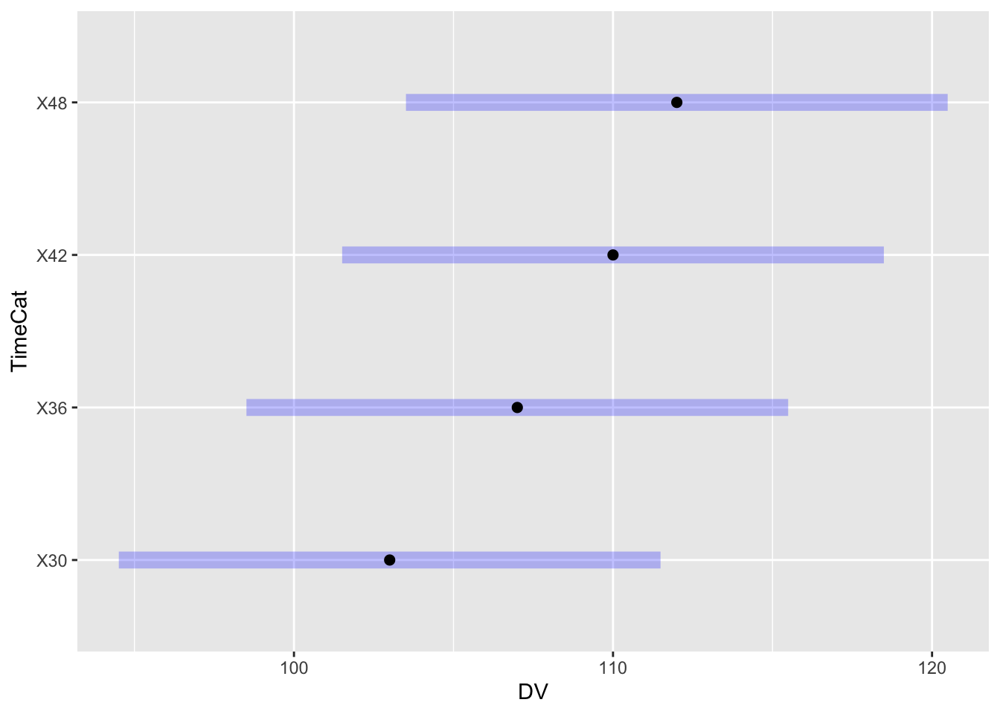